Глава 4. Архитектура ускорителей¶
Вычисление занимает 100 мкс, из которых 60 мкс приходится на умножение матриц, а остальные 40 мкс — на прочую работу. Если удвоить скорость матричного блока, общее время сократится до 70 мкс, а ускорение составит примерно 1,4 раза. Если же умножение матриц занимает лишь 10 мкс, то такое же изменение сократит общее время только до 95 мкс. Прирост вычислительной мощности одинаков, но выигрыш разительно отличается. Процессоры общего назначения распределяют площадь кристалла между блоками для выполнения различных типов инструкций. Когда основная часть времени выполнения нейронных сетей стала приходиться на матричные операции, такое распределение перестало быть оправданным, что привело к появлению специализированных матричных блоков. Задача проектирования архитектуры как раз и состоит в том, чтобы при ограничениях на площадь кристалла, энергопотребление и объём памяти выбрать решение, которое максимально сокращает время выполнения.
В главах 2 и 3 были рассмотрены вычислительный граф модели и вычислительные потребности запроса на разных этапах. В этой главе на примере проекции запросов Qwen3-8B (Q-проекции), то есть матричного умножения, преобразующего скрытый вектор текущего токена в запрос механизма внимания, объясняется, как ускоритель выполняет такие вычисления. Сначала подсчитаем количество операций и объём считываемых и записываемых данных, затем последовательно рассмотрим разбиение матриц на блоки, иерархию памяти и зависимости данных, чтобы объяснить, почему фактическое время выполнения отличается от идеальной оценки. После этого добавим вычисления механизма внимания и экспертов и разберём, как более сложные операторы используют тот же набор аппаратных средств. Затем подробно сравним эволюцию поколений NVIDIA, Ascend и Apple и покажем, как требования моделей стимулируют совместное развитие этих компонентов.
Глава посвящена трём вопросам: какие объёмы вычислений, памяти и передачи данных требуются для задачи; почему вычислительные блоки ожидают данные или результат предыдущего шага; какая часть станет новым узким местом после повышения производительности одного из компонентов. Понимание этих трёх вопросов позволяет применять единый метод для анализа GPU, чипов Ascend и Apple, а также более специализированных архитектур.
Процессор и память можно представить как туалеты в здании. Если все они находятся на одном этаже, вместимость сосредоточена в одном месте, но растут расстояние и очереди; если туалеты есть на каждом этаже, доступ короче, но требуется больше площади и обслуживания. Компьютерная архитектура использует регистры, кэши, буферы на кристалле, память устройства и межсоединения, чтобы держать часто используемые данные ближе к вычислительным блокам. CPU в основном скрывает задержку аппаратными кэшами и внеочередным выполнением; GPU и AI-ускорители дополняют это общей памятью, матричными блоками, механизмами копирования и явными конвейерами.
Эта эволюция не отменяет разделение вычислений и хранения. Она сокращает пути передачи, увеличивает локальное повторное использование и передаёт больше решений о переносе аппаратуре, компилятору и среде выполнения. В Transformer сочетаются матричное умножение с высокой повторяемостью, матрично-векторные операции при малом batch, растущее состояние KV и динамическая маршрутизация экспертов. Поэтому вычислительные блоки, иерархия памяти и межсоединения должны проектироваться вместе. Для каждого компонента этой главы важны три вопроса: как далеко находятся данные от вычислительного блока, сколько раз их можно повторно использовать и когда следующий шаг сможет их прочитать?
Синхронизация вывода о структуре главы 4¶
Слои Transformer постоянно чередуют матричное умножение и векторные операции. Матричный блок вычисляет QK и PV, а векторный блок выполняет Softmax, нормализацию, масштабирование и другие поэлементные преобразования. Поэтому в Ascend DaVinci блоки Cube и Vector соединены выделенным внутрикристальным трактом: результат QK можно сразу передать в Softmax, а полученные вероятности — в PV, не записывая каждый промежуточный результат во внешнюю память. Такой тракт улучшает локальность данных и позволяет обоим блокам работать непрерывно; одновременно компилятор и разработчик ядра должны явно задать размещение данных, буферы, зависимости и синхронизацию.
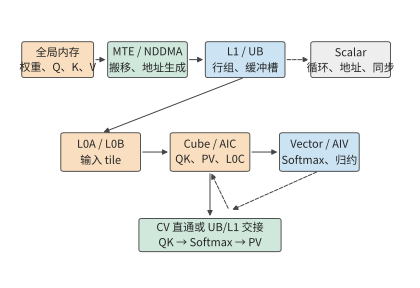
Рис. 4-3. Тракт вычисления внимания в DaVinci.
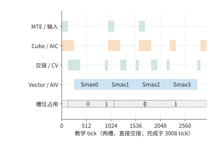
Рис. 4-23. Временная диаграмма выполнения QK, Softmax и PV с двумя буферами.
4.1 Знакомство с ускорителем через вычисления модели¶
При анализе оператора прежде всего необходимо определить, какие операции он выполняет и какие данные читает и записывает. В этом разделе на основе этих двух требований рассматриваются компоненты ускорителя и предварительно анализируются компромиссы между вычислительными блоками, памятью и интерфейсами.
4.1.1 Требования матричного умножения к вычислениям и данным¶
Скрытая размерность Qwen3-8B равна 4 096, каждая из 32 голов запросов содержит 128 компонентов, а ширина выхода Q-проекции также равна 4 096. При одновременной обработке \(M\) позиций токенов проекция имеет вид
В проекции \(Y=XW\) величина \(M\) — общее число обрабатываемых в этот раз токенов, причём вектор признаков каждого токена занимает одну строку \(X\); \(K\) — число признаков каждого входного вектора и одновременно число строк матрицы весов \(W\); \(N\) — число признаков каждого выходного вектора и одновременно число столбцов \(W\); в данном примере \(K=N=4096\). Эти прописные буквы описывают форму матрицы и используются в другом контексте, нежели обозначение ёмкости \(M\) в главе 1. Если одновременно обрабатываются \(B\) запросов одинаковой длины, каждый из которых содержит \(P\) новых входных токенов, то для prefill \(M=BP\); при пошаговом decode для каждого запроса обрабатывается один токен, поэтому \(M=B\). Оба этапа используют одни и те же веса и выполняют одно и то же линейное преобразование; различается лишь число строк входных данных, совместно использующих эти веса при каждом вызове.1
Для вычисления каждого выходного элемента требуется скалярное произведение длины 4 096. Если считать одно умножение и одно сложение двумя операциями с плавающей точкой, объём вычислений матричного умножения равен
Теперь рассмотрим данные. Входные данные, веса и выходные данные представлены в BF16, по два байта на элемент; аккумулятор начинает с нуля и хранит частичные суммы в FP32, по четыре байта на элемент. Если входные данные и веса по одному разу считываются из внешней памяти, а итоговый результат один раз записывается обратно, общий объём чтения и записи равен
Первое слагаемое — фиксированные 32 MiB весов, второе — объём входных и выходных данных, растущий с числом строк. Здесь MiB означает \(2^{20}\) байт, а в характеристиках пропускной способности GB/s означает \(10^9\) байт/с. Разделив объём вычислений на объём обращений к памяти, получим арифметическую интенсивность \(I=F/V\).
| Одна Q-проекция | \(M=1\) | \(M=256\) |
|---|---|---|
| Объём вычислений матричного умножения | около 33,6 MFLOPs | около 8,59 GFLOPs |
| Чтение весов | 32 MiB | 32 MiB |
| Суммарный объём чтения входных данных и записи выходных | 16 KiB | 4 MiB |
| Общий объём обращений | около 32 MiB | 36 MiB |
| Арифметическая интенсивность | около 1 FLOP/байт | около 228 FLOPs/байт |
На рис. 4-1 объём чтения весов распределён между входными строками: одна строка самостоятельно несёт нагрузку в 32 MiB, а при 256 строках на каждую приходится 128 KiB.
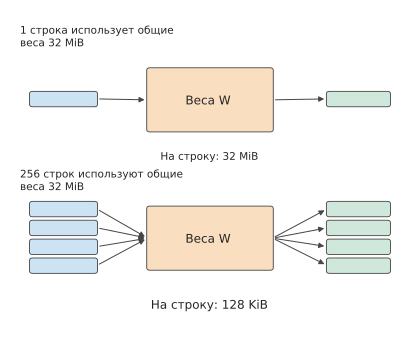
Рис. 4-1. Оба вызова используют одни и те же 32 MiB весов. Сверху показана одна входная строка, снизу — 256 строк, часть которых изображена полосами; приходящийся на одну строку объём чтения весов уменьшается с 32 MiB до 128 KiB.
При увеличении числа строк в 256 раз число операций также возрастает в 256 раз, но объём обращений увеличивается лишь примерно на одну восьмую. Повторное использование весов приводит к тому, что объём вычислений растёт быстрее объёма обращений, поэтому арифметическая интенсивность повышается.2
Разделив числитель и знаменатель арифметической интенсивности на \(M\), можно определить предел повторного использования:
По мере роста \(M\) приходящийся на одну строку весовой член \(2KN/M\) постоянно уменьшается, тогда как член входных и выходных данных остаётся неизменным. В данном примере \(I(M)\) в пределе приближается к 2 048 FLOPs/байт. Поэтому польза от дальнейшего увеличения batch постепенно уменьшается: хотя приходящийся на строку объём чтения весов становится всё меньше, входные и выходные данные новых токенов по-прежнему необходимо читать и записывать.
В приведённых вычислениях предполагается, что веса считываются только один раз; чтобы обеспечить это на аппаратном уровне, операнды и промежуточные результаты необходимо сохранять на всё время их использования.
4.1.2 Состав ускорителя и распределение функций¶
Хостом (host) обычно называется сторона CPU, на которой выполняется фреймворк, подготавливаются входные данные и запускаются задачи, а ускоритель отвечает за вычисления модели; в программном интерфейсе «хост — устройство» (host–device) сторона ускорителя обычно называется устройством. У GPU с собственной видеопамятью память хоста и видеопамять представляют собой два отдельных хранилища. Перед выполнением проекции входные данные и веса размещаются в доступном ускорителю месте; затем CPU отправляет команду, указывая оператор, адреса данных и параметры выполнения. Если данные уже размещены в памяти, последующие вызовы могут многократно обращаться к одному и тому же адресу.
На рис. 4-2 показано, как внутренние компоненты ускорителя совместно выполняют одно матричное умножение. Во внешней памяти хранятся крупные входные данные и веса; общий кэш — это память, доступная нескольким группам вычислительных блоков и автоматически сохраняющая недавно использованные данные; локальный буфер — память, выделенная текущей вычислительной группе для временного хранения входных данных; матричный блок многократно обновляет частичные суммы; память аккумуляторов сохраняет частичные суммы до завершения вычисления текущего блока. Векторные и универсальные вычислительные блоки отвечают за преобразование результатов, вычисление адресов, управление потоком выполнения и другие задачи.
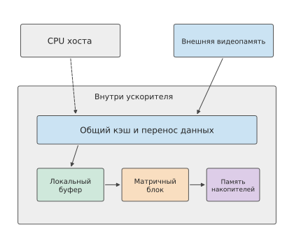
Рис. 4-2. Связь между хостом, видеопамятью и внутренними компонентами чипа. Сплошными линиями показано прохождение данных через кэш, локальный буфер, матричный блок и память аккумуляторов, пунктирной линией — отправка работы хостом. Компоненты на схеме сгруппированы по аппаратным функциям.
При вычислении одного выходного блока необходимо последовательно считывать несколько блоков входных данных и весов вдоль измерения K. После каждой операции умножения со сложением частичная сумма остаётся в памяти аккумуляторов, и следующий блок продолжает её обновлять. Если после каждого обновления записывать её во внешнюю память, промежуточный результат придётся многократно записывать и считывать; если же частичная сумма остаётся на чипе, из этих обращений сохраняется лишь финальная запись. Чем чаще данные используются повторно, тем выгоднее хранить их на чипе.
NVIDIA объединяет группу потоков, универсальные вычислительные блоки, матричные блоки и локальную память, способные совместно выполнять работу, в потоковый мультипроцессор (Streaming Multiprocessor, SM), а матричный блок умножения со сложением называет Tensor Core. Управляемый программно буфер внутри SM, совместно используемый потоками, называется общей памятью (shared memory). Поток — единица работы программы, отдельно исполняющая инструкции; запускаемая на ускорителе функция называется kernel (ядром), и один kernel может совместно исполняться множеством потоков. В архитектуре Ascend DaVinci блоки Scalar, Vector, Cube и MTE обозначают соответственно блок управления, векторный вычислительный блок, матричный вычислительный блок и блок перемещения данных. Apple Metal — программный интерфейс отправки работы на GPU, использующий группы потоков для организации потоков, способных совместно использовать локальную память и синхронизироваться. Несмотря на различия в названиях, все эти компоненты должны решать несколько общих задач: как доставить операнды в исполнительный блок, как сохранить результат и когда можно начинать следующую работу.3
По стрелкам на рис. 4-2 можно различить два вида ожидания. Первый возникает, когда данные ещё не поступили, например если входной блок всё ещё передаётся. Второй — когда предыдущее вычисление ещё не завершилось, например если Softmax ожидает завершения скалярного произведения запросов и ключей (QK). Увеличение пропускной способности сокращает ожидание первого вида, а изменение разбиения на блоки или порядка выполнения влияет на ожидание второго вида. В следующих разделах эти два механизма будут рассмотрены отдельно.
Объём ресурсов, выделяемый каждому из этих компонентов, не определяется раз и навсегда. Модели и чипы взаимно влияют друг на друга от поколения к поколению. Возможности существующих ускорителей влияют на размер состояния моделей, форму матриц и способы коммуникации, а программное обеспечение повышает эффективность выполнения посредством сжатия, слияния и параллелизма. Если определённый вид нагрузки долгое время занимает значительную долю работы, разработчики чипов рассматривают возможность добавить специализированные средства для его обработки. После ввода в эксплуатацию нового поколения чипов изменяется и стоимость выполнения различных моделей. Проектирование и производство требуют времени, поэтому аппаратное обеспечение отвечает на уже наблюдавшиеся потребности, которые, как ожидается, сохранятся в будущем. В разделе 4.6 каждая связь на рис. 4-3 будет подробно рассмотрена на примере смены поколений трёх архитектур.
У такой обратной связи уже есть публично описанные примеры. В отчёте DeepSeek V3 на основе узких мест выполнения на H800 сформулированы требования к аппаратной поддержке: разгрузка коммуникаций, согласованные операции через межсоединение, низкоточное накопление и поддержка квантования; необходимость разгрузки коммуникаций обусловлена тем, что часть SM занята коммуникационными операциями.36
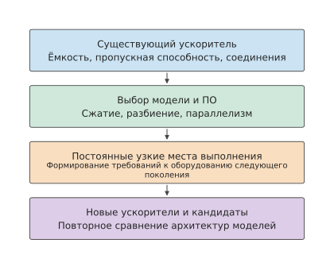
Рис. 4-3. Совместная эволюция моделей и аппаратного обеспечения между поколениями. Сплошные линии направлены вниз по оси времени: существующие ускорители влияют на выбор моделей, выполнение программ выявляет долговременные узкие места, проектирование аппаратного обеспечения отвечает на эти потребности, а новые ускорители делают возможным больше вариантов моделей.
GPU и Ascend: кто организует перемещение данных и синхронизацию?¶
Обе архитектуры перемещают операнды во внутрикристальную память, выполняют матричные инструкции и записывают результаты обратно. Главное различие заключается в том, какие уровни управляются автоматически, а какие явно организуются ядром или компилятором.
| Аспект | NVIDIA GPU (типичный высокопроизводительный путь CUDA) | Ascend DaVinci (типичный высокопроизводительный путь) |
|---|---|---|
| Матричные вычисления | Tensor Core внутри SM обрабатывают тайлы; варпы обеспечивают совместную работу потоков | Cube обрабатывает матричные тайлы; Vector/Scalar выполняют поэлементные операции, редукции и управление |
| Перемещение из глобальной памяти на кристалл | Кэши L2/L1 обычно управляются аппаратно; для предсказуемого повторного использования можно явно задействовать shared memory, асинхронное копирование или TMA | MTE/NDDMA по дескрипторам перемещают данные между Global Memory, L1/UB и L0; путь обычно планирует оператор или компилятор |
| Частичные суммы | Регистры, shared memory или специализированная матричная память новых поколений | L0C хранит частичные суммы Cube; последующие этапы записывают их обратно или передают в Vector |
| Перекрытие перемещений и вычислений | Передача между этапами выражается через memcpy_async, TMA, барьеры и конвейер |
MTE и Cube/Vector взаимодействуют через флаги, события или синхронизацию, сгенерированную компилятором |
| Синхронизация | Раздельная синхронизация на уровнях warp, block, cluster и device; видимость памяти имеет собственную семантику | Этапы внутри ядра, передача между Cube/Vector и обмен между ядрами используют соответствующие флаги и протоколы синхронизации |
| Ответственность программиста | Обычные загрузки можно оставить кэшам; высокопроизводительный путь всё равно требует организации тайлов, shared memory, раскладки и асинхронных зависимостей | Раньше приходится учитывать ёмкость L1/UB/L0, раскладки, этапы перемещения и передачу данных; режим Developer может автоматически вставлять часть синхронизации |
Кэш GPU обычно организует путь от глобальной памяти автоматически, а производительное CUDA-ядро явно задаёт shared memory, асинхронные копирования и барьеры. Компилятор AKG для Ascend также может автоматически сгенерировать перемещения MTE, внутрикристальные буферы и синхронизацию. В главе 5 эта граница ответственности будет показана через циклы, адреса и события.
4.1.3 Ограничения площади чипа, энергопотребления и корпуса¶
Вычислительные блоки, память и интерфейсы занимают площадь чипа и потребляют электроэнергию. Чем больше ресурсов выделено одной части, тем меньший бюджет остаётся другим. Поэтому при оценке локального улучшения необходимо учитывать, насколько оно сокращает время выполнения всей задачи.
Обобщим пример из начала главы: пусть \(f\) обозначает долю времени последовательной задачи, приходящуюся на ускоряемую часть, а \(s\) — кратность её ускорения. Согласно закону Амдала из раздела 1.2.1, общее ускорение равно:
Если дополнительно повысить скорость матричных операций до четырёхкратной относительно исходной, общее время уменьшится до \(60/4+40=55\) μs. Первое удвоение экономит 30 μs, а второе — лишь 15 μs; даже если время матричных вычислений приблизится к нулю, остальная работа всё равно потребует 40 μs. Предельное общее ускорение равно 2,5 раза. Доля оставшейся работы в новом общем времени становится всё больше, и вместе с ней изменяются приоритеты распределения ресурсов.
Распределение площади ранних TPU отражает реальные компромиссы между вычислениями и памятью. TPU — тензорный процессор, разработанный Google. TPU v1 первого поколения содержит \(256\times256\) 8-битных блоков умножения со сложением, 24 MiB унифицированного буфера данных (Unified Buffer) и 4 MiB памяти аккумуляторов. Согласно распределению площади чипа, приведённому в статье о TPU v1, буфер данных занимает около 37%, вычислительные блоки — около 30%, а схемы управления — около 2%. Буфер занимает даже больше площади, чем вычислительные блоки, поскольку массив должен многократно использовать входные данные, веса и частичные суммы. Если каждый раз считывать их из внешней памяти, блоки умножения со сложением будут подолгу ожидать данные.4
Предположим, что ради увеличения числа блоков умножения со сложением разработчик уменьшил ёмкость буфера. Блок входных данных, который раньше оставался в буфере, будет удалён раньше времени, и при следующем использовании его придётся загружать снова; дополнительное время повторного чтения может свести на нет выигрыш от новых блоков умножения со сложением. И наоборот, чрезмерно большой буфер для данных, которые почти не используются повторно, займёт площадь, которую можно было бы отдать вычислениям. При сравнении вариантов проектирования необходимо рассчитывать полное время одной и той же задачи до и после изменения, одновременно учитывая ускорение вычислений и увеличение числа повторных чтений.
Вопрос для размышления: продолжать наращивать производительность матричных вычислений или ускорить остальную работу? В описанной выше задаче, состоящей из 60 μs и 40 μs, что сэкономит больше времени: повышение ускорения матричных операций с двух до четырёх раз относительно исходной скорости или сокращение времени остальной работы с 40 до 25 μs? Как выбирать, если эти изменения требуют разной площади?
Помимо площади, ещё одним бюджетом является энергопотребление; чем крупнее чип и чем больше карт, тем вероятнее, что энергопотребление станет определяющим ограничением. Далее с помощью четырёх выводов энергопотребление превращается в величину, которую можно рассчитать: почему перемещение данных расходует энергию, сколько энергии требуется для перемещения одного байта на каждом уровне памяти, насколько большим может быть один чип и сколько памяти к нему можно подключить, а также как ограничение мощности снижает фактическую рабочую частоту.
Почему перемещение расходует энергию. Энергия на перемещение данных расходуется при зарядке и разрядке соединений. Энергопотребление цифровой схемы состоит из статической и динамической частей: статическое энергопотребление обусловлено токами утечки и не зависит от переключений, а динамическое возникает при переключении сигналов между 0 и 1. Согласно статье Хэ Тинбо о LogicFolding, в типичной нагрузке смартфона около 90% энергопотребления приходится на динамическую часть.50 Сигнальную линию вместе с управляемыми ею вентилями можно представить как конденсатор \(C\): чтобы зарядить его от 0 до напряжения \(V\), источник питания должен предоставить энергию \(CV^2\). Пусть \(\alpha\) — доля сигналов, переключающихся в каждом такте, а \(f\) — тактовая частота (здесь \(f\) означает частоту, а не долю из приведённого выше закона Амдала). Тогда динамическая мощность равна
В передовых технологических процессах основная часть \(C\) приходится не на затворы транзисторов, а на соединения: ёмкость металлической линии распределена по её длине, и чем дальше проходит сигнал, тем большую ёмкость приходится заряжать и разряжать. В верхней части рис. 4-4 показан этот механизм: один и тот же вентиль управляет горизонтальной линией длиной в несколько сотен микрометров, поэтому требуется зарядить всю распределённую вдоль неё ёмкость; после складывания схемы в два расположенных друг над другом слоя прежний горизонтальный путь заменяется вертикальным соединением длиной в несколько микрометров. Согласно статье, после складывания длина соединений типичного ядра уменьшилась на 20%, длина некоторых критических путей — на 70%, а число тактовых буферов в одном вычислительном модуле сократилось с 43 600 до 19 000.
Два примера из статьи можно непосредственно рассчитать по этой формуле. Первый — сравнение NPU при одинаковой производительности: при тех же 29 TOPS (29 триллионов операций в секунду) напряжение сложенного NPU снижено с 0,85 V до 0,55 V. Если учитывать только напряжение,
Если учитывать только частоту, её снижение на 63% означает, что \(f\) составляет 0,37 от исходного значения. Перемножение коэффициентов напряжения и частоты даёт \(0.42\times0.37\approx0.16\), что значительно ниже приведённого в статье отношения общей мощности 0,34 (снижение на 66%). Разница обусловлена параллелизмом: NPU предыдущего поколения содержал одно большое и два малых ядра, а после складывания — четыре больших ядра (раздел V статьи), что позволяет за счёт большего числа параллельных ядер достигать тех же 29 TOPS при низкой частоте. С увеличением числа ядер возрастает переключаемая за такт ёмкость \(\alpha C\), компенсируя уменьшение \(C\) благодаря более коротким соединениям. Только совместный учёт напряжения, частоты и параллелизма даёт 0,34, причём наибольший вклад вносит напряжение; поэтому авторы статьи считают вклад снижения напряжения более значительным, чем вклад сокращения соединений.
Второй пример — DSP (цифровой сигнальный процессор): складывание первого поколения снизило мощность до 0,75 от исходной, а площадь проекции (площадь, занимаемая чипом на плоскости) — до 0,60. Поэтому мощность на единицу площади, то есть плотность мощности, стала равна
что на 25% выше исходного значения и согласуется с приведёнными в статье 24%. Тепло необходимо отводить через площадь чипа, поэтому снижение общей мощности не обязательно уменьшает требования к охлаждению. В нижней части рис. 4-4 рядом приведены числа для этих двух примеров.
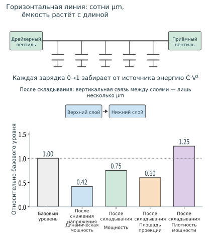
Рис. 4-4. Сверху: один и тот же управляющий вентиль передаёт сигнал по горизонтальному соединению длиной в несколько сотен микрометров, поэтому приходится заряжать распределённую вдоль линии ёмкость; после складывания оно заменяется вертикальным соединением длиной в несколько микрометров. Снизу: снижение напряжения с 0,85 V до 0,55 V уменьшает динамическую мощность до 0,42; мощность снижается до 0,75, а площадь проекции — до 0,60, поэтому плотность мощности, наоборот, возрастает до 1,25.
Условие обращения вывода: плотность мощности не возрастает, только если отношение площадей не меньше отношения мощностей; в данном примере отношение площадей 0,60 меньше отношения мощностей 0,75, поэтому плотность мощности увеличивается.
Иерархия энергозатрат: сколько энергии требуется для перемещения одного байта. Энергозатраты зависят от ёмкости, которую необходимо заряжать и разряжать, а ёмкость растёт с расстоянием, поэтому энергия получения одного и того же байта из разных уровней памяти сильно различается. В следующей таблице приведены затраты энергии на один байт для разных уровней памяти и каналов связи: SRAM (статическая память с произвольным доступом) располагается на чипе, HBM и LPDDR (энергоэффективная DRAM) представляют собой внешнюю DRAM (динамическую память с произвольным доступом), а NVLink-C2C — межчиповый канал, соединяющий CPU и GPU в суперчипе Grace Hopper. Единица pJ означает пикоджоуль (\(10^{-12}\) J). Значения взяты из четырёх источников; в таблице также указаны соответствующие технологические процессы и годы.51
| Уровень | Исходное значение | Энергия на байт | Технологический процесс и год |
|---|---|---|---|
| Локальная SRAM объёмом порядка KB | 5 pJ/32-битное слово | 1,25 pJ | 45 nm, Horowitz ISSCC 2014, цитируется по Dally Hot Chips 2023 |
| Внутричиповая SRAM объёмом порядка MB | 50 pJ/32-битное слово | 12,5 pJ | Dally Hot Chips 2023, стр. 52, технологический процесс не указан |
| Канал NVLink-C2C | 1.3 pJ/bit | 10,4 pJ | Суперчип Grace Hopper, технический блог NVIDIA, ноябрь 2022 года |
| HBM2 | 3.97 pJ/bit | 31,76 pJ | Модель энергопотребления DRAM 28 nm, MICRO 2017 |
| LPDDR DRAM | 640 pJ/32-битное слово | 160 pJ | 45 nm, Horowitz ISSCC 2014 |
| 16-битное умножение со сложением (2 FLOPs) | 1,5 pJ/операцию | 0.75 pJ/FLOP | 45 nm, Dally Hot Chips 2023 |
Большая часть энергии HBM2 на один бит расходуется внутри DRAM, а не в соединении с GPU. Die (кристалл) — фрагмент кремниевой пластины, вырезанный из полупроводниковой пластины. Согласно разбиению из статьи MICRO 2017, тракт данных внутри DRAM die от массива памяти до базового die (нижнего die стека HBM) потребляет 2.24 pJ/bit, активация строки (открытие строки в массиве памяти) — 1.21 pJ/bit, а на I/O для передачи данных к GPU через интерпозер (interposer, кремниевая пластина с соединениями между чипами) приходится лишь 0.3 pJ/bit. Суммарно эти три компонента дают 3.75 pJ/bit, а с учётом ECC (кода коррекции ошибок) и других накладных расходов — 3.92 pJ/bit; в основном тексте статьи приведено итоговое значение 3.97 pJ/bit, указанное в таблице. Значение 1.3 pJ/bit для NVLink-C2C учитывает лишь сам канал; передаваемые по нему данные сначала необходимо считать из памяти на противоположной стороне.
Применим эту таблицу к задаче генерации из раздела 4.8.3: Qwen3-8B, BF16, один запрос, контекст 8K. Один шаг decode считывает 15.137 GB весов и 1.208 GB KV, всего 16.345 GB, а объём матричных вычислений составляет 19.97 GFLOPs. Если использовать строки HBM и умножения со сложением из таблицы, получим52
всего 0.534 J, из которых 90% приходится на чтение весов: при decode одного запроса почти вся энергия расходуется на перемещение данных. Строка HBM основана на модели энергопотребления HBM2 для технологического процесса 28 nm, а строка вычислений — на энергозатратах умножения со сложением для логического технологического процесса 45 nm. Поскольку технологические процессы различаются, этот расчёт показывает лишь порядок величин энергии перемещения данных и вычислений. Время этого шага ограничено пропускной способностью: при 3.35 TB/s чтение 16.345 GB занимает 4,9 ms, а распределение 0.534 J на этот промежуток времени даёт лишь около 110 W. В нижней части рис. 4-5 предполагается, что те же 16.345 GB полностью поступают с одного уровня: для SRAM объёмом порядка KB требуется лишь 0.020 J, для SRAM объёмом порядка MB — 0.204 J, для канала NVLink-C2C — 0.170 J, для HBM — 0.519 J, а для LPDDR — 2.62 J.
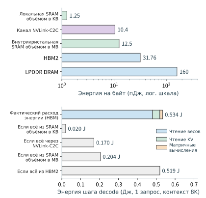
Рис. 4-5. Сверху: энергия на один байт для различных уровней памяти и каналов связи, логарифмическая шкала. Снизу: энергетический баланс одного шага decode Qwen3-8B для одного запроса с контекстом 8K (веса — 0.481 J, KV — 0.038 J, вычисления — 0.015 J), а также энергия в случае, когда те же 16.345 GB полностью поступают с одного уровня.
Пропускная способность определяет только скорость одного шага, но не его энергозатраты: если удвоить пропускную способность HBM, время этого шага сократится вдвое, а 0.534 J останутся неизменными. Снизить энергозатраты можно лишь двумя способами: получать байты с более близкого уровня или использовать одни и те же байты для большего числа токенов. При batch, равном \(B\), веса считываются один раз и обслуживают \(B\) токенов, поэтому энергия на токен равна \(0.481/B+0.038+0.015\) J; при \(B=32\) она составляет около 0.068 J, то есть одну восьмую от значения для одного запроса. Таким образом, повторное использование данных — прежде всего вопрос энергопотребления и лишь затем пропускной способности. Порог из раздела 4.8.1, рассчитанный по времени, определяется отношением пропускной способности к вычислительной мощности, а рассматриваемый здесь порог — отношением энергозатрат на байт к энергозатратам на FLOP; эти пороги не совпадают.
Условие обращения вывода: \(0.481/B<0.015\), то есть энергозатраты на перемещение весов в расчёте на токен становятся ниже энергозатрат вычислений только при batch больше 32.
Фотошаблон и корпусирование: насколько большим может быть один чип и сколько памяти к нему можно подключить. Литографическая машина за одну экспозицию может покрыть лишь область рисунка одного фотошаблона (reticle, маска для экспонирования); эта площадь называется пределом фотошаблона, и один die не может его превышать. Площадь die H100 составляет 814 mm², а A100 — 826 mm²; оба поколения близки к этому пределу. GPU Blackwell для центров обработки данных содержит два die, каждый из которых достигает предела фотошаблона; они объединены в один чип каналом NV-HBI с пропускной способностью 10 TB/s.53 После разделения чипа на два die расположение вычислений определяет, какая доля обращений должна проходить через этот канал; конкретный расчёт приведён в разделе 4.5.1.
HBM укладывает несколько слоёв DRAM die на один базовый die, соединяет слои сквозными кремниевыми переходами (TSV, вертикальными проводниками, проходящими через кремний), а весь стек подключается к GPU линиями на интерпозере. Каждый стек имеет 1 024 контакта данных. При скорости контакта \(r\) пропускная способность и ёмкость одного стека равны
Рассмотрим HBM3E: восьмислойный стек Micron имеет ёмкость 24 GB, а двенадцатислойный — 36 GB; если подставить указанную SK hynix скорость контакта 9.6 Gbit/s в приведённую формулу, получится \(1024\times9.6/8\approx1229\) GB/s, что соответствует значению 1.23 TB/s на странице продукта. На рис. 4-6 показана такая компоновка: die расположен в центре, стеки HBM размещены вдоль его краёв, а интерпозер несёт соединения между ними. По той же формуле можно восстановить конфигурации HBM трёх поколений GPU:
| GPU | Ёмкость | Пропускная способность | Число стеков | Ёмкость одного стека | Пропускная способность одного стека | Скорость контакта |
|---|---|---|---|---|---|---|
| H100 SXM5 | 80 GB | 3,350 GB/s | 5, согласно техническому описанию | 16 GB | 670 GB/s | 5.24 Gbit/s, в техническом описании указано 2619 MHz DDR (двойная скорость передачи данных, две передачи за такт) |
| H200 SXM | 141 GB | 4,800 GB/s | 6 стеков общей ёмкостью 144 GB, в продукте доступен 141 GB | 24 GB | 800 GB/s | 6.25 Gbit/s, расчётное значение |
| B200 (HGX) | 180 GB | 8,000 GB/s | 8 стеков общей ёмкостью 192 GB, в продукте доступно 180 GB | 24 GB | 1,000 GB/s | 7.81 Gbit/s, расчётное значение |
Рост каждого поколения в таблице можно разложить на число стеков, ёмкость одного стека и скорость контакта. Пять стеков H100 образуют 5 120-битный интерфейс; умножение 5 120 бит на 5.24 Gbit/s и деление на 8 даёт около 3,350 GB/s. От H100 к H200 ёмкость выросла на 76% благодаря увеличению ёмкости одного стека с 16 до 24 GB и числа стеков с 5 до 6; пропускная способность выросла на 43% за счёт дополнительного стека и повышения скорости контакта с 5.24 до 6.25 Gbit/s. В B200 по сравнению с H200 добавлено ещё два стека: H100 и H200 содержат по одному die, к которым подключено соответственно 5 и 6 стеков; в B200 восемь стеков размещены вдоль внешних сторон двух die предельного для фотошаблона размера (рис. 4-6). Число стеков получено из указанной в техническом обзоре Blackwell конфигурации 192 GB и 7.7 TB/s при ёмкости одного стека 24 GB; в остальных разделах книги используются характеристики платформы HGX B200: 180 GB и 8 TB/s на один GPU.
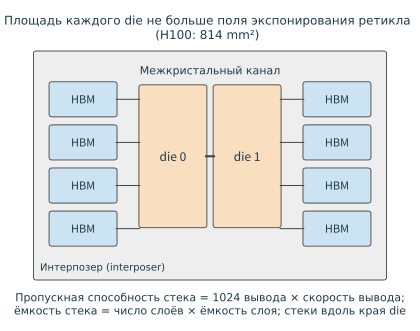
Рис. 4-6. Схема корпуса, вид сверху: два die предельного для фотошаблона размера расположены в центре, восемь стеков HBM — вдоль краёв с двух сторон, а интерпозер несёт соединения между die и HBM, а также между двумя die. Пропускная способность каждого стека определяется 1 024 контактами и скоростью контакта, а ёмкость каждого стека — числом слоёв и ёмкостью одного слоя.
Условие обращения вывода: если требуемое число стеков (целевая ёмкость, делённая на ёмкость одного стека) превышает число стеков, подключаемых к одному die, необходимо либо увеличить число слоёв в каждом стеке, либо добавить die; при переходе на двенадцатислойные стеки ёмкостью 36 GB шесть стеков дают 216 GB, поэтому увеличивать их число не требуется.
Ограничение мощности: почему пиковая вычислительная производительность не может поддерживаться постоянно. Расчётная тепловая мощность (thermal design power, TDP) — максимальная длительная мощность модуля; для H100 SXM она равна 700 W, а для B200 — 1 000 W.54 Этот бюджет мощности совместно используется памятью и вычислительными блоками. На примере H100 оценим мощность HBM при полной пропускной способности по строке HBM2 из приведённой выше таблицы: \(3.35\ \mathrm{TB/s}\times31.76\ \mathrm{pJ/byte}\approx106\) W. После вычитания для вычислений остаётся 594 W; разделив это значение на пиковую производительность плотных вычислений BF16, равную 989.4 TFLOP/s, получим энергетический бюджет одного FLOP при пиковой скорости:
Уложиться в бюджет 0.60 pJ/FLOP позволяют только матричные инструкции и совершенствование технологического процесса; эталонное значение для 45 nm объясняет причину. Одна скалярная инструкция полуточного умножения со сложением (HFMA) выполняет 2 FLOPs и потребляет 1.5 pJ, то есть 0.75 pJ/FLOP, что уже превышает бюджет; выборка и декодирование инструкции, а также получение операндов требуют ещё около 30 pJ — в 20 раз больше энергии самой операции. Одна матричная инструкция умножения со сложением HMMA потребляет 110 pJ, но выполняет значительно больше 2 FLOPs, поэтому доля тех же накладных расходов на инструкцию после распределения составляет лишь 22%.51 H100 производится по технологическому процессу TSMC 4N; при переходе от 45 nm к 4N ёмкость и напряжение каждого переключения снижались от поколения к поколению.
Пусть фактические энергозатраты на FLOP равны \(e\). При \(e\le b\) пиковая частота может поддерживаться постоянно; при \(e>b\) контроллер мощности снижает частоту, а степень снижения определяется зависимостью \(P\propto fV^2\): при неизменном напряжении мощность линейно зависит от частоты, поэтому длительно поддерживаемая частота составляет \(b/e\) от пиковой; если напряжение снижается вместе с частотой, то \(P\propto f^3\), а длительно поддерживаемая частота составляет \((b/e)^{1/3}\) от пиковой. На рис. 4-7 показаны эти две кривые: когда \(e\) в 1,5 раза превышает бюджет, первая снижается до 0,67, а вторая — лишь до 0,87. Длительно поддерживаемая вычислительная производительность снижается пропорционально частоте, поэтому расчёт времени вычислений по пиковой производительности даёт значение меньше фактического. Пиковая вычислительная производительность — физический предел аппаратного обеспечения, но он достижим не при любых условиях: при ограничении мощности сам предел снижается вместе с длительно поддерживаемой частотой, поэтому при оценке утилизации знаменателем должна служить длительно поддерживаемая вычислительная производительность.
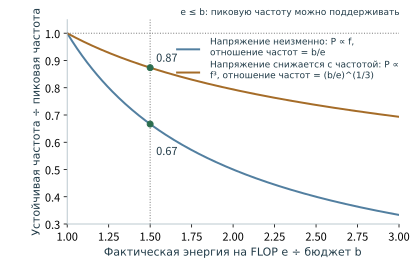
Рис. 4-7. Отношение длительно поддерживаемой частоты к пиковой в зависимости от отношения энергозатрат \(e\) на один FLOP к бюджету \(b\): при неизменном напряжении оно равно \(b/e\), а при снижении напряжения вместе с частотой — \((b/e)^{1/3}\). При \(e/b\) не больше 1 пиковая частота может поддерживаться постоянно; при \(e/b\), равном 1,5, две кривые дают соответственно 0,67 и 0,87.
Условие обращения вывода: если энергозатраты на FLOP ниже \((\mathrm{TDP}-P_{\mathrm{mem}})/F_{\mathrm{peak}}\), пиковая частота может поддерживаться постоянно; здесь \(P_{\mathrm{mem}}\) — мощность памяти, \(F_{\mathrm{peak}}\) — пиковая вычислительная производительность, а в данном примере порог равен 0.60 pJ/FLOP. С каждым новым поколением технологического процесса энергозатраты на FLOP снижаются, а TDP от поколения к поколению повышается; эти два фактора совместно определяют, когда выполняется данное условие.
4.2 Вычислительные блоки¶
В разделе 4.1 производительность матричных блоков выражалась через скорость вычислений. В этом разделе объясняется, откуда берётся эта скорость: матрицу какого размера обрабатывает одна инструкция, почему небольшие матрицы не позволяют полностью задействовать вычислительные блоки и какие векторные и управляющие операции дополнительно выполняются над результатами матричных вычислений.
4.2.1 Почему матричные блоки подходят для нейронных сетей¶
Большую матрицу приходится разбивать на множество небольших блоков, а матричные блоки — это именно то оборудование, которое выполняет вычисления над такими блоками. Они поддерживают ограниченный набор форм матричных инструкций, поэтому программа должна организовать большую задачу в последовательность соответствующих небольших шагов. Несколько вычислительных блоков одной карты-ускорителя могут одновременно обрабатывать разные блоки.
При вычислении выходного блока размером \(m\times n\) одна и та же строка входных данных участвует в вычислении \(n\) выходных элементов, а один и тот же столбец весов — в вычислении \(m\) выходных элементов. Матричный блок позволяет нескольким блокам умножения-сложения совместно использовать эти операнды: данные передаются между соседними вычислительными блоками, а частичные суммы сохраняются и обновляются локально. Одна инструкция описывает работу над целым блоком, поэтому затраты на управление также распределяются между большим числом операций. В главе 5 будет подробнее показано, как программное обеспечение выбирает размеры блоков и порядок их обхода, чтобы эти небольшие шаги непрерывно получали необходимые данные.
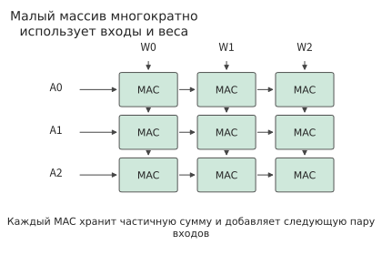
Рисунок 4-8. Схема массива умножения-сложения из трёх строк и трёх столбцов. Входные данные передаются вдоль строк, веса — вдоль столбцов, а каждый блок умножения-сложения хранит собственную частичную сумму. Небольшой массив здесь используется для объяснения повторного использования операндов.
Рассмотрим матричную операцию размером \(16\times16\times16\). Каждый из двух входных блоков содержит 256 элементов, а для выполнения операции требуется \(2\times16^3=8192\) операций с плавающей точкой. Каждый входной элемент участвует внутри блока в 16 умножениях. По сравнению с отдельной загрузкой всех операндов для каждого выходного значения такой подход уменьшает объём повторного перемещения данных и накладные расходы на инструкции.
Матричные инструкции обычно выполняются над блоками фиксированного размера. Пусть минимальный вычислительный блок некоторой реализации имеет размер \(m_t\times n_t\times k_t\), а части матрицы, не заполняющие целый блок, дополняются нулями. Доля полезных операций среди фактически выполненных равна
Если минимальный размер по строкам равен 16, а реальная матрица содержит только одну строку и выровнена по остальным измерениям, то полезные входные данные находятся лишь в одной из 16 строк. Удвоение числа матричных блоков одинаково ускорит как полезные вычисления, так и вычисления над дополнением нулями. Применение реализации матрично-векторного умножения (GEMV), подходящей для одной строки, позволяет уменьшить объём бесполезных вычислений, вызванных дополнением. Практические измерения того, как библиотеки выбирают реализацию, приведены в разделе 4.8.
В моделях с экспертами проблема числа строк проявляется ещё сильнее. Пусть каждый из 64 токенов выбирает восемь экспертов, что даёт 512 назначений, а размеры матриц всех экспертов одинаковы. Если назначения распределены точно поровну между 256 экспертами, каждый эксперт обрабатывает векторы признаков лишь двух токенов. Если все токены выбирают одних и тех же восьмерых экспертов, каждый эксперт обрабатывает векторы признаков 64 токенов. В обоих случаях 64 исходных токена создают 512 назначений экспертам и в сумме занимают 512 полезных строк во входных матрицах всех экспертов.
Продолжим использовать реализацию с дополнением числа строк до кратного 16. В первом случае выполняются вычисления для \(256\times16=4096\) строк, из которых полезны 512. Во втором случае обрабатываются \(8\times64=512\) строк, и все они полезны. Объём полезных вычислений в обоих случаях одинаков, но после дополнения объём фактически выполненных вычислений в первом случае в восемь раз больше, чем во втором. То, каких экспертов выбрала группа токенов, определяет не только то, какие веса потребуется прочитать, но и то, сколько строк будет обрабатывать каждый эксперт, а значит, влияет на утилизацию матричных блоков.
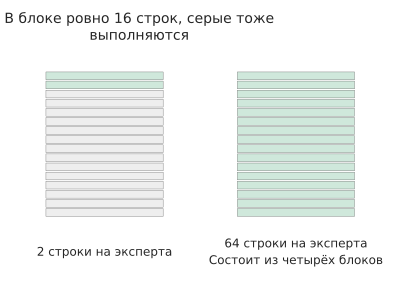
Рисунок 4-9. 16-строчный вычислительный блок одного эксперта. Если на каждого эксперта приходится только две строки, остальные четырнадцать заполняются нулями. Если на эксперта приходится 64 строки, из них можно сформировать четыре полных блока; на рисунке показан один из них.
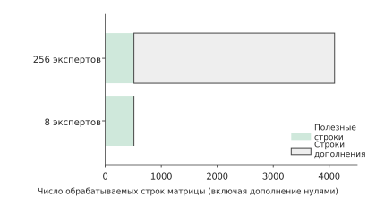
Рисунок 4-10. Объём вычислений для одинаковых 512 полезных входных строк у всех экспертов. После распределения между 256 экспертами в общей сложности обрабатываются 4096 строк, а при концентрации у восьми экспертов — только 512 строк.
Светло-серые области на рисунках 4-9 и 4-10 обозначают вычисления, вызванные дополнением нулями. Увеличение числа блоков умножения-сложения ускоряет и эти бесполезные операции. Чтобы уменьшить светло-серую область, необходимо изменить число входных строк у каждого эксперта или выбрать меньший вычислительный блок.
Это объясняет, почему библиотеки предоставляют несколько kernel для разных форм: большие матрицы используют повторное использование данных в массиве, малым матрицам нужна более подходящая гранулярность выполнения, а несколько небольших задач можно группировать для сокращения простоев при диспетчеризации. Tensor Core и Ascend Cube предназначены для выполнения регулярных матричных операций, тогда как универсальные вычислительные блоки сохраняют возможность обрабатывать другие формы. Вместе они обрабатывают матрицы разных размеров, встречающиеся в реальной нагрузке.5
4.2.2 Векторные операции и управление между матричными вычислениями¶
Помимо матричного умножения, слой Transformer содержит нормализацию, позиционное кодирование и функции активации, а модели с экспертами также выполняют маршрутизацию. Эти этапы включают как поэлементные операции, так и зависимости между несколькими элементами.
Рассмотрим Softmax для строки из \(n\) оценок. Для обеспечения численной устойчивости сначала находится максимальное значение, затем вычисляются экспоненты смещённых оценок, после чего выполняются суммирование и нормализация:
При \(n=128\) необходимо вычислить 128 значений экспоненты и нормализовать 128 результатов, а для нахождения максимума и суммы требуется отдельно объединить 128 входных значений. Поэлементные операции можно распределить между несколькими вычислительными блоками для параллельного выполнения. Операции, объединяющие несколько элементов в меньшее число результатов, называются редукциями; к ним относятся, например, суммирование и нахождение максимума. Редукция требует поэтапного объединения результатов отдельных блоков. Идеальная бинарная редукция выполняется за \(\log_2 128=7\) раундов, причём каждый раунд ожидает результат предыдущего. Увеличение числа параллельных вычислительных блоков может сократить время обработки каждого раунда, но сами раунды по-прежнему должны выполняться последовательно.
Векторные блоки выполняют такие поэлементные операции и редукции, блоки специальных функций обрабатывают операции наподобие экспоненты, а управляющая логика организует циклы, адресацию, ветвления и синхронизацию. Вместе они определяют, когда результат матричных вычислений можно передать последующим операциям. Названия Ascend Cube, Vector и Scalar наглядно отражают такое разделение. В описанной в техническом документе Ascend 950 подсистеме AI один Cube Core сочетается с двумя Vector Core. Векторная часть использует преимущественно выполнение по схеме «одна инструкция — множество данных» (SIMD, то есть одна инструкция выполняет одну и ту же операцию над группой данных), дополненное схемой «одна инструкция — множество потоков» (SIMT, то есть одна инструкция передаётся группе потоков, каждый из которых имеет собственное состояние выполнения).6
Оценки Softmax меняются вместе со входными данными, поэтому экспоненты приходится вычислять заново при каждом запуске. Коэффициенты некоторых других нематричных операций зависят только от позиции, поэтому их можно предварительно вычислить и использовать многократно. RoPE использует фиксированные синусные и косинусные коэффициенты позиции и выполняет над парой компонент следующие операции:
В одном слое Qwen3-8B имеются 32 головы Q и 8 голов K, каждая из которых поворачивает 128 измерений, что даёт \((32+8)\times64=2560\) пар компонент. Для каждой пары требуются четыре умножения и два сложения или вычитания, то есть всего 15 360 FLOPs на токен. Все головы в одной позиции используют одинаковые коэффициенты, поэтому могут обращаться к общей таблице: если для каждой из 1 024 позиций сохранить 64 значения cos и 64 значения sin, то при хранении в BF16 потребуется лишь \(1024\times128\times2=256\) KiB.7
Предварительное вычисление заменяет повторное вычисление тригонометрических функций чтением коэффициентов, однако само вращение по-прежнему выполняется для каждого токена. Таким образом, нагрузка переносится с вычисления специальных функций на доступ к таблице и векторные операции.
4.2.3 Как QK, Softmax и PV образуют конвейер¶
Механизм внимания связывает матричные и векторные вычисления из двух предыдущих разделов: \(Z=QK^{\mathsf T}\) формирует оценки, \(P=\operatorname{Softmax}(Z)\) — вероятности, а \(O=PV\) — выходные данные. Один и тот же блок данных должен последовательно пройти эти три этапа, тогда как несколько блоков можно продвигать внахлёст на разных ресурсах.
| Работа | NVIDIA GPU | Ascend | Apple GPU |
|---|---|---|---|
| Скалярные произведения запросов и ключей QK, произведения вероятностей и значений PV | Tensor Core; для малых матриц могут использоваться универсальные вычислительные блоки | Матричное ядро Cube (AIC) | Матричные операции Metal GPU |
| Экспоненты, редукции, масштабирование | Универсальные ресурсы и ресурсы специальных функций SM | Векторное ядро Vector (AIV) | Потоки GPU и соответствующие библиотечные реализации |
| Промежуточное состояние | Регистры, общая память, хранилище аккумуляторов | Буфер нулевого уровня (L0) рядом с вычислительным блоком, унифицированный буфер и каналы обмена | Буферы GPU и память группы потоков |
Это разделение определяет, какие операции могут выполняться одновременно. Например, пока один блок вычисляет экспоненты, матричный блок может обрабатывать другой блок. Однако если обеим сторонам требуется получать операнды через один и тот же внутрикристальный интерфейс, этому интерфейсу всё равно придётся последовательно передать все байты. То, какие блоки способны работать параллельно и какие операции совместно используют один интерфейс, в совокупности определяет пропускную способность устойчиво работающего конвейера. Путь Apple в таблице относится к Metal GPU. Независимый ускоритель нейронных сетей Neural Engine и специализированные блоки внутри GPU отдельно рассматриваются в разделе 4.6.3.8
Семейство FlashAttention уменьшает обращения к видеопамяти для промежуточных результатов внимания за счёт разбиения на блоки. В четвёртой версии дополнительно исследуется распределение вычислений при использовании более мощных матричных блоков. Ниже на основе анализа одного SM NVIDIA Blackwell B200 в FlashAttention-4 вычисляется влияние такого распределения на пропускную способность. Рассмотрим прямоугольный блок внимания размером \(128\times128\) с размерностью головы 128. Операции QK и PV в сумме требуют около 8,39 MFLOPs, а число результатов экспоненты равно 16 384. При производительности матричных вычислений 8 192 FLOPs на такт на каждый SM и производительности вычисления экспонент 16 результатов на такт матричные операции и вычисление экспонент занимают по 1 024 такта. Чтение матричных операндов из общей памяти составляет 96 KiB и при скорости 128 bytes за такт занимает 768 тактов.9
При последовательной обработке нескольких блоков матричный блок, интерфейс общей памяти и блок вычисления экспонент могут образовать конвейер. При обработке каждого блока эти ресурсы заняты соответственно 1 024, 768 и 1 024 такта. Если новые блоки поступают быстрее, чем их способен обработать хотя бы один из этих ресурсов, очередь ожидания будет неограниченно расти. Поэтому после выхода конвейера в устойчивый режим интервал между завершением двух соседних блоков составляет как минимум
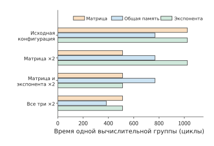
Рисунок 4-11. Число тактов обслуживания одного и того же блока внимания при четырёх конфигурациях ресурсов. Отдельно сравниваются матричные вычисления, общая память и вычисление экспонент. После увеличения производительности одного ресурса более продолжительным этапом может стать другой ресурс. «×2» означает удвоение пропускной способности соответствующего ресурса, а горизонтальная ось показывает число тактов, необходимое для обработки одного и того же вычислительного блока.
Пример 4-1. Почему пропускная способность конвейера внимания ограничена вычислением экспонент и общей памятью?
Насколько увеличится пропускная способность конвейера после повышения производительности матричных вычислений и вычисления экспонент? Несколько блоков образуют конвейер между независимыми ресурсами. Сравним две конфигурации: в первой удвоена только производительность матричных вычислений, а во второй дополнительно удвоена производительность вычисления экспонент. Каков для каждой конфигурации минимальный интервал между завершением двух соседних блоков при устойчивой работе конвейера?
Интервал между завершением соседних блоков определяется самым медленным ресурсом. Для исходной конфигурации он равен \(\max(1024,768,1024)=1024\) такта. После увеличения только матричной производительности получаем \(\max(512,768,1024)=1024\) такта. После дополнительного увеличения производительности вычисления экспонент получаем \(\max(512,768,512)=768\) тактов.
После ускорения матричных вычислений узкое место смещается к вычислению экспонент и общей памяти. Первое изменение позволяет матричному блоку закончить работу раньше, но пропускная способность вычисления экспонент остаётся неизменной, поэтому нижняя граница интервала завершения не меняется. Второе изменение устраняет ограничение со стороны вычисления экспонент, и самым продолжительным этапом становится работа с общей памятью. Соответствующая идеальная пропускная способность увеличивается в \(1024/768=4/3\) раза относительно исходной.
К каким блокам сместится узкое место после удвоения пропускной способности общей памяти? Если также удвоить пропускную способность общей памяти, три значения составят 512, 384 и 512 тактов, и только тогда нижняя граница снизится до 512 тактов. Новая точка равновесия совместно определяется матричными вычислениями и вычислением экспонент.
Повышение производительности одного ресурса сокращает ожидание до тех пор, пока узким местом не станет другой ресурс. Для одного блока операции QK, Softmax и PV по-прежнему выполняются последовательно. Чтобы достичь указанного интервала завершения, необходимо одновременно хранить несколько блоков, находящихся на разных этапах обработки. Требуемые буферы и временная последовательность будут совместно рассчитаны в разделе 4.4.
Эксперимент 4-1 · Основной: как разбиение внимания на блоки изменяет объём вычислений и чтения из общей памяти
Измените размер прямоугольного блока на \(128\times256\) и \(256\times128\) и отдельно вычислите время, необходимое для матричных операций, вычисления экспонент и чтения из общей памяти. Затем поочерёдно увеличивайте производительность матричных вычислений, производительность вычисления экспонент и пропускную способность общей памяти, указывайте величину каждого увеличения и после каждого изменения определяйте самый продолжительный этап. Объясните, как форма блока изменяет повторное использование данных. Наконец, выберите один тип оборудования и обозначьте на схеме выполнения три вида работы и места хранения данных.
4.2.4 Как низкая точность изменяет объём вычислений, данных и затраты на преобразование¶
Форма матрицы определяет число операций умножения-сложения, а числовой формат — представление, используемое каждой такой операцией. При анализе низкой точности необходимо последовательно ответить на три вопроса: сколько места занимают данные, какие преобразования выполняются при обработке и какие преобразования допустимы с учётом требований к ошибке.
Сначала рассмотрим представление. Если каждый из \(n\) весов хранится в \(b\) bit, а каждые \(g\) значений совместно используют scale размером \(s\) bytes, то при условии, что общее число элементов делится на размер группы без остатка, объём хранения равен
Для весов размером \(4096\times4096\) из раздела 4.1.1 при хранении каждого значения в 4 bit и использовании одного однобайтового scale на каждые 32 значения данные весов занимают 8 MiB, а scale — 0,5 MiB, всего 8,5 MiB, что примерно в 3,8 раза меньше 32 MiB, необходимых для BF16. Если один scale используется на каждые 16 значений, общий объём увеличивается до 9 MiB. Чем мельче группы, тем точнее scale может соответствовать диапазону значений группы, но тем больше значений scale необходимо хранить.
Теперь рассмотрим выполнение. Сжатое значение \(q\) вместе со scale \(a\) представляет приближённое значение \(\hat w=aq\). Его можно сначала развернуть в BF16, а затем выполнить матричное умножение либо обработать \(q\) матричной инструкцией низкой точности и после этого скорректировать результат с помощью scale. На рисунке 4-12 эти две реализации показаны рядом: первая сначала затрачивает время на развёртывание весов и сохраняет высокоточную копию, а вторая выполняет масштабирование и объединение непосредственно в процессе вычислений.
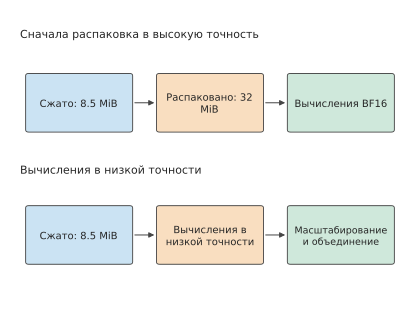
Рисунок 4-12. Два вычислительных пути для одних и тех же сжатых весов. Предварительное развёртывание создаёт копию BF16 размером 32 MiB, а путь низкой точности выполняет масштабирование и объединение в процессе вычислений. Сжатые веса вместе со scale занимают 8,5 MiB.
Форматы FP4, FP8 и восьмибитный целочисленный формат INT8 уже используются в kernel реальных моделей: одна из реализаций маршрутизируемых экспертов DeepSeek V4-Flash сначала преобразует веса FP4 в FP8, а затем выполняет GEMM. Хранение и чтение весов в FP4 сокращает число передаваемых байтов, после чего матричный блок выполняет вычисления в формате FP8. Если развёрнутые веса используются многократно, время однократного преобразования можно распределить между несколькими вызовами. Если веса разворачиваются заново при каждом вызове, время преобразования становится постоянной частью каждой задачи. Экономия времени благодаря низкой точности определяется разностью между сокращением времени чтения и дополнительным временем преобразования.10
Сопутствующий эксперимент одновременно измеряет ошибку и затраты на выполнение. Для одной экспертной матрицы размером \(2048\times1536\) модели Qwen3-VL-30B-A3B сравниваются два метода: непосредственное блочное вычисление в INT8 и предварительное развёртывание в BF16 с последующим однократным матричным умножением. Эксперимент выполняется на RTX PRO 6000, а входные данные получены из реальной маршрутизации экспертов. L2-норма вектора равна квадратному корню из суммы квадратов его элементов. Локальная относительная ошибка измеряется как отношение L2-нормы ошибки выходных данных к L2-норме эталонных выходных данных, а порог установлен на уровне 2%. При построчном масштабировании активаций ошибка составляет около 2,3–3,5%. Если отдельно масштабировать каждые 128 элементов активаций по измерению K, ошибка снижается примерно до 1,5–1,9%.11
Более мелкая группировка при квантовании изменяет способ накопления скалярного произведения. Для одной входной строки и одного столбца весов обозначим scale каждой группы активаций как \(a_g\), а scale столбца весов — как \(b_j\). Тогда скалярное произведение можно записать в виде
Поскольку \(a_g\) различается между группами, при вычислении сначала находятся целочисленные частичные суммы каждой группы, затем каждая из них отдельно умножается на scale, после чего результаты складываются. Поэтому такая реализация требует 16 вызовов матричного умножения с преобразованием, масштабированием и объединением между вызовами. При небольшом числе входных строк также требуется дополнить их до минимального числа строк, необходимого kernel. Другой метод сначала разворачивает все группы в BF16, а затем накапливает результат по всему измерению K с помощью одного GEMM.
Для реальных входных данных декодирования одного токена полное время выполнения двух методов составляет соответственно около 2,81 ms и 2,52 ms, поэтому метод с предварительным развёртыванием оказывается быстрее. По объёму видеопамяти наблюдается обратная картина: зарегистрированные распределителем памяти пиковые значения при последующих вызовах составляют соответственно около 11,4 MiB и 35,2 MiB, то есть метод прямого вычисления экономит примерно две трети памяти.12 Более мелкая группировка при квантовании уменьшает ошибку, групповые вызовы увеличивают время, а отказ от высокоточной копии сокращает потребление видеопамяти. Таким образом, числовой формат и метод вычисления совместно определяют ошибку, время выполнения и потребление видеопамяти.
Следовательно, такую реализацию следует улучшать путём слияния внутригрупповых вычислений, масштабирования и накопления, чтобы одновременно уменьшить ошибку квантования и накладные расходы на запуск kernel.
Эксперимент 4-2 · Расширенный: когда следует разворачивать квантованные веса, чтобы сократить затраты при повторном выполнении
Исходя из приведённой выше формулы группового скалярного произведения, сравните два метода: предварительное развёртывание весов с последующим вычислением и непосредственное групповое вычисление. Для каждого метода перечислите данные, которые необходимо хранить, включая веса, scale, развёрнутую копию весов, частичные суммы и выходные данные. Вычислите полное время после \(R\) повторных использований для трёх стратегий: однократного развёртывания при загрузке, развёртывания при каждом вызове и непосредственного группового вычисления. Затем на основе экспериментальных записей с реальными входными данными сравните ошибку и пиковое потребление видеопамяти и объясните, когда ради сокращения затрат на повторное развёртывание оправдано выделить дополнительную память для хранения развёрнутых весов.
4.3 Иерархия памяти¶
В разделе 4.2.4 было показано, как числовой формат изменяет объём данных. В этом разделе анализируются чтение и запись данных проекции Q с разграничением трёх вопросов: помещаются ли эти данные, с какого уровня они считываются при повторном использовании и достаточно ли независимых обращений для поддержания целевой пропускной способности.
4.3.1 Видеопамять и унифицированная память¶
Во время работы модели веса, KV-кэш и временная рабочая область одновременно занимают память. Объём весов относительно постоянен, KV-кэш растёт с количеством запросов и длиной контекста, а рабочая область хранит промежуточные результаты выполнения. Только определив эти три величины, можно решить, способен ли ускоритель принять ещё один запрос.
Веса Qwen3-8B в формате BF16 занимают около 16.4 GB. Модель содержит 36 слоёв, в каждом из которых 8 KV-голов размерностью 128; для K и V хранится по одной копии, каждый элемент занимает два байта. Поэтому объём KV-кэша на один токен контекста равен
Если для каждого запроса сохраняется \(S\) позиций и одновременно обслуживается \(B\) запросов, условие вместимости имеет вид
Решив его относительно \(B\), получаем максимальное количество запросов при фиксированной длине:
Примем 24 GB видеопамяти RTX 4090 за доступную ёмкость и выделим 2 GiB под рабочую область. После вычета весов для KV-кэша остаётся около 5.47 GB. При \(S=8192\) каждый запрос требует 1.125 GiB, или около 1.21 GB; KV-кэш четырёх запросов занимает суммарно около 4.83 GB и помещается. После увеличения до пяти запросов потребуется уже около 6.04 GB, что превышает оставшуюся ёмкость. При удвоении контекста объём KV-кэша каждого запроса также удваивается, а максимальное количество запросов уменьшается до двух.13
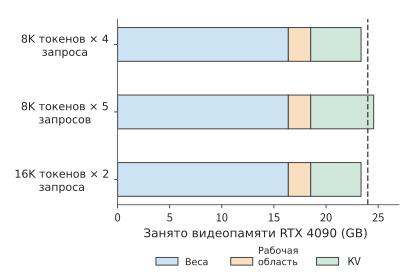
Рисунок 4-13. Веса, рабочая область и KV-кэш в 24 GB видеопамяти RTX 4090. Четыре запроса с контекстом 8K и два запроса с контекстом 16K помещаются, а пять запросов с контекстом 8K превышают обозначенный пунктиром предел ёмкости.
На рисунке 4-13 ширина областей весов и рабочей памяти остаётся неизменной, а изменения происходят в расположенной справа области KV-кэша. Длинный контекст делает каждый блок KV шире, а увеличение параллелизма повышает количество блоков; и то и другое использует одно и то же оставшееся пространство.
Формула максимального количества запросов с округлением вниз выявляет ступенчатый эффект ёмкости. При небольшом увеличении объёма памяти \(B_{\max}\) может остаться неизменным; принять дополнительный запрос можно лишь тогда, когда оставшегося пространства достаточно для всего его KV-кэша. Сжатие весов увеличивает остаток в числителе формулы, поэтому также позволяет вместить больше запросов. Для моделей с большим объёмом весов сокращение фиксированных затрат может заметно повысить параллелизм; в задачах с длинным контекстом KV-кэш уже занимает значительную долю памяти, поэтому выгода от дальнейшего сжатия весов постепенно уменьшается.
Снижение разрядности KV-кэша также высвобождает память. Рассмотренная в главе 2 модель DeepSeek V4.1-Flash одновременно использует глобальную историю и локальное окно SWA. Одна запись основного KV-кэша из 512 значений хранится в формате FP4 и вместе с групповым scale занимает 288 bytes; одна запись локального окна хранится в формате FP8 и вместе со scale занимает 528 bytes. Перед участием основного KV-кэша в умножении для механизма внимания выполняется обратное квантование, то есть значения с помощью scale восстанавливаются в числовом формате, используемом для вычислений. Формат хранения сжимает резидентное состояние, а во время выполнения операнды восстанавливаются.38
Выше учитывалось только состояние во время инференса. При обучении дополнительно используются градиенты, состояния оптимизатора и активации, сохранённые для обратного распространения. Объём этих состояний рассчитывается с учётом жизненного цикла тензоров, описанного в главе 3: все тензоры, которые требуется сохранять в конкретный момент, совместно определяют пиковое потребление памяти, а освобождённые промежуточные результаты предоставляют место для последующей работы. Поэтому планирование ёмкости зависит как от размера каждого тензора, так и от порядка выполнения.
Ёмкость видеопамяти в конечном счёте обеспечивается устройствами памяти и интерфейсами. HBM обеспечивает пропускную способность благодаря многослойному размещению кристаллов памяти и широкому интерфейсу; графическая память с удвоенной скоростью передачи данных (GDDR) обычно формирует видеопамять из нескольких микросхем памяти, соединённых высокоскоростным интерфейсом. И HBM, и GDDR представляют собой технологии устройств памяти и интерфейсов, тогда как унифицированная память — это способ организации памяти, совместно используемой процессорами. CPU и GPU Apple обращаются к общей физической памяти и могут последовательно использовать один и тот же буфер, уменьшая количество отдельных копий; при этом CPU, GPU и другие приложения также совместно потребляют её ёмкость и пропускную способность.8 В разделе 4.5 влияние такой организации на время передачи будет проанализировано по пути от хоста к ускорителю.
Вопрос для размышления: можно ли принять ещё один запрос после сжатия KV-кэша? Если потребность каждого запроса в KV-кэше уменьшится на 10% с исходных 1.21 GB, сможет ли RTX 4090 вместить пятый запрос? Сначала рассчитайте суммарную потребность пяти запросов, затем сравните её с оставшимся пространством.
4.3.2 Кэши, внутрикристальные буферы и регистры¶
При вычислении блока выходных данных одно и то же число из входных данных часто должно участвовать и в вычислении соседних выходных значений, а ещё не завершённые частичные суммы необходимо продолжать накапливать. Если при каждой операции умножения со сложением обращаться к внешней памяти за данными и записывать результат обратно, возникнет множество передач в обоих направлениях. Хранение часто используемых данных рядом с вычислительным блоком, подобно размещению нужных материалов на рабочем столе под рукой, позволяет сократить эти перемещения, однако ближайшее пространство ограничено.
Регистры хранят значения, используемые потоком и инструкцией, кэш автоматически сохраняет недавно запрошенные данные, а загрузкой и освобождением программно управляемого буфера явно распоряжается программа. Все три типа памяти могут хранить многократно используемые данные, но отличаются ёмкостью, способом доступа и механизмом управления. Кроме того, внутрикристальная память занимает площадь кристалла, поэтому её ёмкость обычно намного меньше ёмкости внешней памяти. Ниже проследим за двумя входными блоками и одной частичной суммой, рассчитав требуемое пространство.
Рассмотрим блок умножения со сложением с \(m=n=128,k=64\). Входной блок и блок весов в формате BF16 занимают по 16 KiB, суммарно 32 KiB; выходной аккумулятор FP32 занимает \(128\times128\times4=64\) KiB. В каждом SM V100 под разделяемую память можно выделить не более 96 KB, то есть 96 KiB; если поместить туда и операнды, и аккумулятор, она будет заполнена полностью.40 Чтобы одновременно подготовить следующую пару операндов, потребуется \(2\times32+64=128\) KiB.
Если для аккумулятора используется отдельное хранилище, те же 96 KiB смогут вместить три набора парных входных блоков и блоков весов. Общая ёмкость локального буфера не увеличилась, но разделение функций хранилищ изменило количество входных блоков, которые можно подготовить заранее. В разделе 4.6.1 такое разделение будет показано на примере специализированного хранилища аккумуляторов Blackwell.
В предыдущем примере частичная сумма вычислительного блока оставалась на кристалле, что исключало её многократную обратную запись. Этот же подход применим и к входным данным, совместно используемым несколькими вычислительными блоками. Предположим, что четырём выходным блокам требуется прочитать одни и те же входные данные объёмом 32 KiB. Суммарно они формируют логические запросы на 128 KiB. L2 — это кэш второго уровня, общий для вычислительных блоков. Если при первом чтении данные останутся в L2, а следующие три обращения попадут в кэш, внешняя память должна будет предоставить только 32 KiB, но L2 всё равно потребуется передать блокам все 128 KiB. Если четыре выходных блока последовательно обрабатываются одной вычислительной группой, а входные данные сохраняются в локальном буфере, последующие обращения смогут получать данные непосредственно из него.
Поэтому при анализе одних и тех же данных необходимо различать три величины: пространство, занимаемое самими данными, количество байтов, запрошенных вычислительными блоками для чтения, и количество байтов, фактически переданных через интерфейс конкретного уровня. Арифметическая интенсивность также изменяется в зависимости от уровня наблюдения. Интенсивность, рассчитанную по объёму запросов к L2, следует использовать вместе с пропускной способностью L2, а интенсивность, рассчитанную по трафику DRAM, — с пропускной способностью внешней памяти. В разделе 4.8 это различие будет показано на фактических показаниях счётчиков.
Ещё одна функция L2 определяется его расположением. SM GPU объединяются в кластеры графической обработки (Graphics Processing Cluster, GPC); L2 разделён на несколько секций, каждая из которых отвечает за свой диапазон адресов и соединена со всеми SM внутрикристальной коммутационной матрицей (crossbar). RTX PRO 6000 содержит 188 SM, а общий объём L2 составляет 128 MiB. Регистры, разделяемая память и кэш первого уровня принадлежат отдельным SM. Начиная с Hopper несколько SM внутри одного GPC могут образовывать кластер блоков потоков (thread block cluster), в котором SM способны напрямую читать и записывать разделяемую память друг друга, то есть использовать распределённую разделяемую память. За пределами такого кластера общей памяти между SM нет: чтобы передать результат от одного SM другому, его необходимо сначала записать в секцию L2, после чего другой SM должен прочитать его оттуда (рисунок 4-14). Таким образом, L2 служит как входом для поступающих на кристалл данных из внешней памяти, так и единственным путём обмена данными между SM, находящимися за пределами одного кластера.
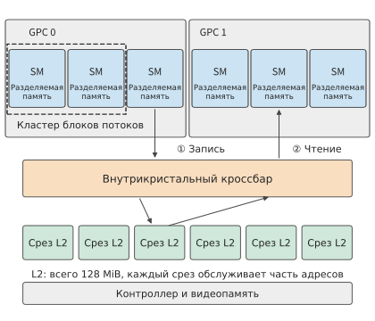
Рисунок 4-14. Внутрикристальная память и пути передачи данных GPU. SM внутри пунктирной рамки образуют кластер блоков потоков и могут напрямую обращаться к разделяемой памяти друг друга; данные между остальными SM через коммутационную матрицу записываются в секцию L2 (①), а затем считываются получателем (②). Количество SM, GPC и секций на схеме приведено только для иллюстрации.
Увеличение вычислительного блока обычно повышает повторное использование данных, но также требует более крупного буфера. RTX 5090 и RTX PRO 6000 используют архитектуру SM120. В каждом SM суммарный объём кэша данных первого уровня и разделяемой памяти составляет 128 KB, из которых не более 100 KB можно выделить под разделяемую память, совместно используемую вычислительными группами, резидентными на этом SM: если каждой группе требуется 32 KiB, резидентными могут быть три группы; после увеличения потребности каждой группы до 64 KiB останется только одна.41 Пока одна группа ожидает данные, другая может продолжать вычисления. Поэтому с уменьшением количества одновременно работающих групп вычислительные блоки чаще простаивают. При выборе размера блока необходимо одновременно учитывать, насколько каждая группа сокращает повторные чтения и сколько независимых вычислительных групп всё ещё можно разместить.
Ёмкость внутрикристальных буферов также увеличивается с каждым поколением. Предельный объём разделяемой памяти на один SM составляет 164 KB у A100 и 228 KB у H100.14 Большее количество вычислительных групп, резидентных на кристалле, также позволяет отправлять больше независимых запросов на чтение.
4.3.3 Что именно ограничивают ёмкость, пропускная способность и задержка¶
Ёмкость определяет, сколько данных можно вместить в конкретный момент, пропускная способность — сколько данных можно передать за единицу времени, а задержка — сколько времени проходит от отправки одного запроса до его завершения. Если одновременно отправлять достаточно независимых запросов, во время ожидания результата одного обращения можно продолжать обработку других.
Размещение модели и её пошаговое выполнение предъявляют разные требования к памяти. Согласно таблице конфигураций HBM из раздела 4.1.3, H100 SXM имеет 80 GB памяти с пропускной способностью 3.35 TB/s, а H200 SXM — 141 GB и 4.8 TB/s; ёмкость и пропускная способность увеличились в разной степени. В одной из 4-битных конфигураций Qwen3-235B-A22B веса и scale занимают около 123.1 GB, KV-кэш для восьми запросов по 8,192 токена — около 12.6 GB, а с добавлением 2 GiB рабочей области общий объём составляет около 137.9 GB. H100 не хватает почти 58 GB, тогда как у H200 остаётся около 3.1 GB. Увеличение ёмкости прежде всего позволяет всем этим данным одновременно оставаться резидентными.15
Веса всех экспертов хранятся в памяти, а то, какие именно веса требуется считывать на каждом шаге, определяется результатом маршрутизации. Если выбор экспертов для восьми запросов различается, суммарный объём обращений к весам, scale и KV-кэшу на каждом шаге составляет около 75.967 GB; если запросы выбирают одних и тех же экспертов, он снижается примерно до 24.737 GB. На H200 одна только передача этих байтов занимает соответственно около 15.8 ms и 5.2 ms; при использовании HGX B200 с пропускной способностью 8 TB/s — около 9.5 ms и 3.1 ms. Повторное использование экспертов сокращает трафик примерно до одной трети, а замена ускорителя уменьшает время передачи одного байта примерно до 60% исходного значения. Эти два изменения воздействуют на разные части формулы \(T=V/R\).
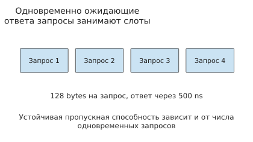
Рисунок 4-15. Запись о запросе на чтение остаётся занятой от его отправки до получения ответа. Только перекрытие нескольких независимых запросов позволяет непрерывно использовать интерфейс во время ожидания отдельного обращения; на схеме показаны лишь четыре характерных запроса.
Приведённый выше расчёт \(V/R\) предполагает, что интерфейс способен непрерывно обеспечивать заданную пропускную способность. Для поддержания такой скорости необходимо продолжать отправлять другие запросы, пока ожидается ответ на одно обращение. Назовём транзакцией памяти базовую единицу, передаваемую интерфейсом памяти. Пусть интерфейс допускает не более \(N_o\) одновременно выполняющихся транзакций, каждая транзакция возвращает \(s\) bytes, а средняя задержка завершения равна \(L\). Одна транзакция занимает одно место от отправки до возврата; за секунду может завершиться не более приблизительно \(N_o/L\) транзакций, поэтому
Решив выражение относительно \(N_o\), получаем количество одновременно выполняющихся транзакций, необходимое для поддержания целевой пропускной способности:
Это закон Литтла: среднее количество одновременно выполняющихся запросов равно произведению скорости завершения запросов на их среднюю задержку. Аппаратные очереди определяют, сколько таких транзакций можно вместить, а взаимная независимость обращений в программе — можно ли заполнить очередь. Если следующий адрес зависит от результата предыдущего чтения, заполнить очередь не удастся независимо от её глубины; несколько независимых вычислительных блоков, напротив, могут формировать запросы на чтение, не ожидающие друг друга.
Каждое обращение в цепочке зависимостей несёт полную задержку. Именно так измеряется и задержка при попадании в L2: один поток многократно выполняет чтение, причём адрес каждого обращения берётся из значения, полученного предыдущим чтением, а все данные резидентны в L2. На RTX PRO 6000 один полный цикл обращения к L2 занимает около 340–390 тактов, что при измеренной частоте SM 2.88 GHz соответствует приблизительно 120–135 ns. Хотя это меньше задержки обращения к видеопамяти, остановка всё равно длится сотни тактов. Задержка также зависит от секции, в которой находятся данные: одна и та же программа в разных процессах показала 354–870 тактов. Каждая передача между SM состоит из нескольких таких полных циклов, как показано в разделе 4.4.4.35
Пример 4-2. Ускорится ли чтение KV-кэша пропорционально после установки видеокарты с большей пропускной способностью?
Сравним ограничения чтения KV-кэша, обусловленные количеством одновременно выполняющихся транзакций и пропускной способностью интерфейса. KV-кэш, соответствующий 8,192 токенам контекста одного запроса, занимает 1.125 GiB. Возьмём интерфейс видеопамяти RTX 4090 с пропускной способностью 1,008 GB/s, размер транзакции 128 bytes и задержку завершения 500 ns: средство измерения производительности памяти Mess показало на H100 задержку незагруженной видеопамяти 363 ns, которая при приближении к предельной пропускной способности возрастала до 699–1,433 ns; значение 500 ns находится между ними.16 Рассчитаем эффективную пропускную способность чтения и его продолжительность при максимально допустимых 128 и 4,096 одновременно выполняющихся транзакциях, а затем сравним с результатами после перехода на RTX 5090 с пропускной способностью 1,792 GB/s.
Рассчитаем эффективную пропускную способность чтения по количеству байтов в одновременно выполняющихся транзакциях и задержке доступа. Для поддержания 1,008 GB/s требуется \(\lceil1.008\times10^{12}\times500\times10^{-9}/128\rceil=3938\) транзакций. 128 транзакций могут обеспечить лишь около 32.8 GB/s, поэтому чтение займёт не менее 36.9 ms; 4,096 транзакций достаточно для поддержания 1,008 GB/s, и время сокращается примерно до 1.20 ms.
При недостаточном количестве одновременно выполняющихся транзакций польза от более высокой пропускной способности интерфейса ограничена. После перехода на RTX 5090 4,096 транзакций по-прежнему поддерживают не более примерно \(4096\times128/(500\ \mathrm{ns})=1.05\) TB/s, а время составляет около 1.15 ms. Пропускная способность интерфейса увеличилась примерно на 78%, но пропускная способность чтения ограничена количеством одновременно выполняющихся транзакций и возросла лишь приблизительно на 4%.
Сколько одновременно выполняющихся транзакций требуется для полного использования более высокой пропускной способности или компенсации большей задержки? Для поддержания 1,792 GB/s их количество необходимо увеличить как минимум до 7,000; если задержка возрастёт до 800 ns, потребуется уже 11,200 транзакций.31
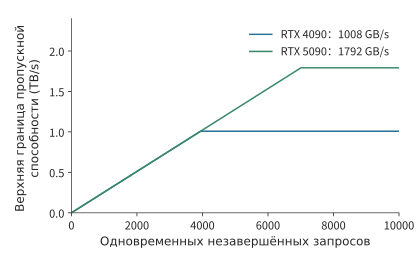
Рисунок 4-16. При размере транзакции 128 bytes и задержке возврата 500 ns увеличение количества одновременно выполняющихся запросов повышает верхнюю границу пропускной способности, пока она не достигнет предела самого интерфейса видеопамяти RTX 4090 или RTX 5090.
При малом параллелизме две кривые на рисунке 4-16 совпадают, поскольку ограничение определяется количеством байтов в одновременно выполняющихся транзакциях. После прохождения точки перегиба каждой кривой новым узким местом становится пропускная способность интерфейса. В реальной системе повышение параллелизма обращений также удлиняет очередь, а задержка изменяется с нагрузкой; Mess одновременно измеряет обе величины с помощью зонда задержки и регулируемого фонового трафика, получая кривую зависимости задержки от пропускной способности.16 Эта кривая объединяет на одном графике два эффекта: «одновременная отправка независимых запросов уменьшает простой во время ожидания» и «слишком большое количество запросов увеличивает время ожидания в очереди».
При анализе производительности памяти сначала по ёмкости определяют, могут ли данные оставаться резидентными, затем с учётом повторного использования рассчитывают трафик интерфейсов каждого уровня и, наконец, по уровню параллелизма и задержке оценивают, способен ли интерфейс непрерывно передавать данные.
Эксперимент 4-3 · Расширение: какие узкие места decode устраняются увеличением ёмкости памяти, а какие — повышением пропускной способности
Используя результаты расчётов памяти для Qwen3-8B и Qwen3-235B-A22B, по отдельности увеличьте только ёмкость и только пропускную способность, а затем измените batch и распределение экспертов. Сначала определите максимальное количество резидентных запросов, затем рассчитайте время чтения на каждом шаге и, наконец, количество одновременно выполняющихся транзакций, необходимое для поддержания целевой пропускной способности. Укажите, чем прежде всего ограничивается каждый вариант: ёмкостью, временем передачи или параллелизмом обращений к памяти.
4.4 Перемещение данных¶
В разделах 4.1–4.3 были рассчитаны объём данных и количество их повторных использований, а также объяснена степень параллелизма, необходимая для поддержания пропускной способности. В этом разделе дополнительно определяется, когда эти данные следует получать, использовать и освобождать. Главная задача перемещения данных — доставить следующий блок до того, как он понадобится вычислительному блоку, и при этом сохранять текущий блок до завершения его последнего использования.
4.4.1 Размещение данных и адресация¶
Если выделить на матрице небольшой квадрат, это определит лишь то, какие элементы нужно получить. В памяти эти элементы необязательно расположены рядом: если исходная матрица хранится построчно, после чтения одной строки квадрата нужно пропустить невыбранные элементы и продолжить чтение с соответствующей позиции следующей строки исходной матрицы. Математическое разбиение на блоки может изменять только индексы и диапазон доступа, не требуя предварительного копирования отдельной малой матрицы. Аппаратное обеспечение должно находить эти элементы по шагам. Для двумерного представления, в котором один элемент занимает \(b\) bytes, шаг строки равен \(s_r\) bytes, а шаг столбца — \(s_c\) bytes, адрес элемента определяется как
При непрерывном построчном хранении матрицы \(s_c=b\), а шаг строки определяется полной шириной строки. При извлечении подматрицы каждая её строка занимает лишь часть строки исходной матрицы, но расстояние между началами соседних строк по-прежнему равно шагу строки исходной матрицы. От этого зависит, какие обращения должно выполнить аппаратное обеспечение.
Например, возьмём из BF16-матрицы шириной 4 096 элементов 128 строк по 128 последовательных элементов в каждой. Объём полезных данных составляет \(128\times128\times2=32\) KiB, каждая строка занимает лишь 256 bytes, а начала соседних строк находятся на расстоянии 8 192 bytes. Диапазон от начала первой строки до конца последней охватывает \(127\times8192+256=1\,040\,640\) bytes. При построчном чтении передаются только полезные участки каждой строки; если соседние потоки обращаются к соседним элементам, их запросы также можно объединить в меньшее число транзакций.
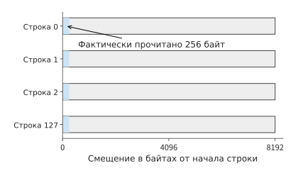
Рисунок 4-17. Первые 256 bytes каждой строки представляют фактически читаемый участок, а начала соседних строк находятся на расстоянии 8192 bytes. Для 128 строк суммарно считывается 32 KiB, а серые области между строками пропускаются благодаря шагу.
Синяя область в каждой строке занимает лишь 256 bytes, но синяя область следующей строки начинается только через 8 192 bytes. Чтение всего диапазона адресов привело бы к перемещению и серых промежутков, тогда как построчное чтение получает только синие части. В этом и заключается назначение шага строки: он указывает блоку перемещения, где начинается следующий участок полезных данных.
Размещение данных влияет на стоимость доступа с двух сторон: шаг влияет на вычисление адресов, а непрерывность адресов — на возможность объединить несколько обращений в одну транзакцию. Одни и те же 32 KiB при одном размещении можно получить регулярными последовательными запросами, а при другом потребуется множество коротких запросов. Число bytes на транзакцию \(s\) из раздела 4.3 как раз зависит от того, как объединяются эти обращения.
Разбиение на блоки также определяет, сколько раз будет запрошен один и тот же адрес. Одно вычисление w1 общего эксперта DeepSeek V4-Flash имеет вид \([32,4096]\times[4096,2048]\), а FP8-вход занимает всего 128 KiB. Выходная ширина разбивается на 16 блоков по 128 столбцов, и каждый выходной блок должен полностью пройти по входу, поэтому суммарный объём запросов входных данных на уровне блоков равен \(16\times128\) KiB, то есть 2 MiB. Веса разделяются по выходным столбцам, каждый блок считывает собственную часть, поэтому суммарный объём данных весов составляет 8 MiB.17
Размер входа по-прежнему равен 128 KiB, а дополнительные запросы возникают из-за разбиения по направлению выходных столбцов. Если выходные блоки используют общий кэш, повторные запросы могут получать данные непосредственно из внутрикристального кэша; если одна вычислительная группа сохраняет вход и последовательно обрабатывает несколько выходных блоков, повторное использование можно перенести в локальный буфер. Здесь соединяются адресация, разбиение на блоки и иерархия памяти: способ разбиения определяет, какие запросы чтения будут отправлены, а расположение данных — через интерфейс какого уровня пройдут эти запросы.
Обычные инструкции загрузки могут последовательно вычислять адреса и выполнять обращения; специализированный блок перемещения получает форму тензора, шаги и начальную точку, после чего многократно генерирует эти адреса. Набор параметров, описывающих задачу перемещения, называется дескриптором. Ускоритель тензорной памяти TMA архитектуры NVIDIA Hopper, к которой относится H100, и блок многомерного прямого доступа к памяти NDDMA в Ascend 950 поддерживают многомерное перемещение тензоров.18 Для описанной выше подматрицы достаточно указать начальную точку, 128 строк, 256 bytes в каждой строке и шаг строки 8 192 bytes. Когда повторяющиеся вычисления адресов выполняет специализированный блок, вычислительные потоки могут продолжать другую работу.
4.4.2 Асинхронное перемещение и двойная буферизация¶
После нахождения и получения блока данных необходимо обеспечить своевременное прибытие следующего блока: если начинать чтение только после завершения вычислений над текущим блоком, вычислительный блок будет постоянно простаивать. При наличии двух буферов можно использовать данные из первого, одновременно загружая следующий блок во второй; после завершения работы с текущим блоком буферы меняются ролями. Это и есть двойная буферизация: дополнительное пространство обменивается на перекрытие загрузки и вычислений во времени.
Пусть имеется \(n\) блоков данных, загрузка каждого занимает \(t_l\), а вычисление — \(t_c\). Если получать один блок, полностью обрабатывать его и лишь затем переходить к следующему, общее время составит \(n(t_l+t_c)\). Если загрузка и вычисление используют независимые ресурсы, при двойной буферизации сначала загружается и вычисляется первый блок, а последующие блоки завершаются в темпе более медленного этапа:
Если загрузка каждого из восьми блоков занимает 2 μs, а вычисление — 1 μs, последовательное выполнение потребует 24 μs, а конвейерное — \(2+1+7\times2=17\) μs. Экономия 7 μs достигается за счёт перекрытия, при этом число переданных bytes и операций умножения со сложением не меняется. Если затем вдвое ускорить вычисления, общее время сократится лишь до 16,5 μs, поскольку загрузка по-прежнему может предоставлять только один блок каждые две микросекунды.
В приведённом выше анализе загрузка рассматривается как единый этап. Далее мы разделим её на передачу и ожидание ответа, чтобы определить, сколько буферов требуется при одновременном выполнении нескольких запросов. Здесь tick обозначает один такт SM B200; при этом различаются интервал запуска и задержка завершения: если запрос чтения отправляется каждые 64 tick, а данные каждого блока становятся доступны только через 192 tick после отправки запроса, несколько блоков будут одновременно ожидать ответа. До начала вычисления входные данные уже должны быть получены. Назовём буфер для хранения одного входного блока входным слотом: с момента отправки запроса чтения и до завершения вычисления этого блока слот остаётся занятым. Дополнительные слоты позволяют раньше запускать чтение последующих данных, но требуют больше локальной памяти.
Конкретно выведем это для вычисления QK в механизме внимания. Оба входа имеют размер \(128\times128\) и разбиваются по размерности головы на четыре накапливаемых блока с \(k=32\). Общий объём входных данных Q/K каждого блока составляет 16 KiB, объём вычислений — 1 048 576 FLOPs; четыре вычисления последовательно обновляют один и тот же результат FP32, который хранится в отдельной памяти накопления объёмом 64 KiB. Скорость матричных вычислений принимается равной 8 192 FLOPs за такт на один SM B200 согласно статье FlashAttention-4; скорость передачи входных данных — 256 bytes/tick, после завершения передачи требуется ещё 128 tick ожидания, прежде чем данные станут доступны.199
Таким образом, передача входных данных каждого блока занимает 64 tick, данные становятся готовы через 192 tick после запуска, а вычисление требует ещё 128 tick.
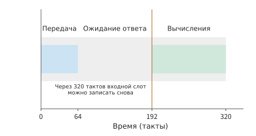
Рисунок 4-18. Полный жизненный цикл одного входного слота от запуска до освобождения. Передача занимает 64 tick, дополнительное ожидание — 128 tick, данные готовы через 192 tick, затем вычисление занимает 128 tick, и на отметке 320 tick слот освобождается. Один tick соответствует одному такту SM B200.
При наличии только одного входного слота он проходит загрузку, ожидание и вычисление и может быть использован повторно лишь через \(64+128+128=320\) tick; четыре блока завершаются за 1280 tick.
На рисунках 4-19–4-21 последовательно показано выполнение с одним, двумя и тремя слотами при одинаковом масштабе времени. Если сначала находить свободные промежутки между зелёными отрезками вычислений, а затем смотреть выше, когда будут готовы входные данные следующего блока, можно определить источник ожидания.
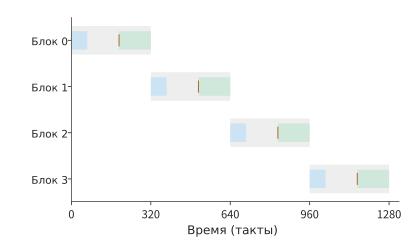
Рисунок 4-19. Временная диаграмма четырёх блоков с одним входным слотом. Синяя полоса обозначает передачу, оранжевая линия — готовность, зелёная полоса — вычисление, светло-серая — занятость слота; повторный запуск возможен лишь после завершения предыдущего блока, поэтому выполнение заканчивается на отметке 1280 tick. Один tick соответствует одному такту SM B200.
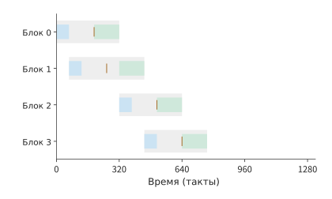
Рисунок 4-20. Для двух входных слотов используется тот же масштаб времени. Первые два блока можно запустить заранее, но третий будет готов только на отметке 512 tick, тогда как вычисление второго завершается уже на отметке 448 tick, оставляя 64 tick простоя. Один tick на горизонтальной оси соответствует одному такту SM B200; каждая строка соответствует одному блоку данных, серый цвет обозначает занятость входного слота, синий — передачу, зелёный — вычисление, а вертикальная метка — готовность данных.
Два слота позволяют отправить запросы чтения первых двух блоков в моменты 0 и 64. Вычисление первого блока начинается в момент 192 и завершается в момент 320, после чего освободившийся слот используется для третьего блока, который будет готов в момент 512; вычисление второго блока уже завершится в момент 448, поэтому между ними останется 64 tick простоя. При продолжении в том же порядке четвёртый блок завершится в момент 768. Второй слот позволяет частично перекрыть загрузку данных и вычисления, но матричный блок по-прежнему простаивает между вычислениями блоков.
Для непрерывного вычисления четырёх блоков минимальное время завершения равно ожиданию первого блока плюс время четырёх вычислений:
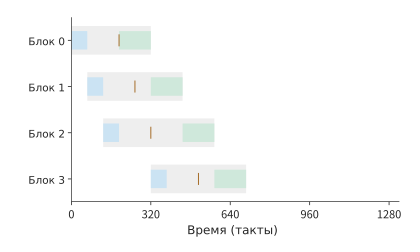
Рисунок 4-21. При трёх входных слотах первые три блока запускаются заранее, а после освобождения первого слота в него поступает четвёртый блок. Матричный блок непрерывно работает с 192 до 704 tick, поэтому четвёртый слот уже не сокращает время завершения. Один tick на горизонтальной оси соответствует одному такту SM B200; каждая строка соответствует одному блоку данных, серый цвет обозначает занятость входного слота, синий — передачу, зелёный — вычисление, а вертикальная метка — готовность данных.
Трёх слотов уже достаточно для достижения этого времени. Запросы чтения первых трёх блоков отправляются соответственно в моменты 0, 64 и 128, а данные становятся готовы в моменты 192, 256 и 320; последовательные вычисления начинаются с момента 192. Первый блок освобождает слот в момент 320, после чего немедленно отправляется запрос чтения четвёртого блока. Он будет готов в момент 512, то есть раньше запланированного начала вычисления в момент 576. Поэтому матричный блок непрерывно работает с 192 до 704 tick, не простаивая.34
| Число входных слотов | Входной буфер | Время завершения | Экономия относительно предыдущего варианта |
|---|---|---|---|
| 1 | 16 KiB | 1280 tick | — |
| 2 | 32 KiB | 768 tick | 512 tick |
| 3 | 48 KiB | 704 tick | 64 tick |
| 4 | 64 KiB | 704 tick | 0 |
Этот пример показывает один из способов подбора конфигурации буферов: сначала по времени прибытия первого блока и времени непрерывных вычислений определяется целевое время, затем для каждого блока проверяется, успеет ли он прибыть вовремя, после чего находится минимальное число слотов, позволяющее достичь цели. Хотя четвёртый слот обеспечивает более раннюю готовность последнего блока, начать вычисление раньше он не позволяет; полученные заранее данные лишь дольше ожидают использования.
Конфигурация буферов также зависит от скорости вычислений. Если удвоить скорость матричных вычислений, обработка каждого блока займёт только 64 tick, а целевое время непрерывных вычислений станет равным \(192+4\times64=448\) tick. При наличии только трёх слотов запрос чтения четвёртого блока можно отправить не раньше момента 256, поэтому данные будут доступны лишь в момент 448 и не успеют к первоначально запланированному началу вычисления в момент 384; выполнение завершится за 512 tick. Четыре слота позволяют заранее отправить все запросы и достичь времени 448 tick. После ускорения матричных вычислений прежняя схема загрузки уже не успевает подготавливать следующий блок данных, поэтому конфигурацию входных буферов также необходимо изменить.
Благодаря асинхронному перемещению вычислительные потоки после запуска загрузки могут продолжать другую работу и ждать события завершения только тогда, когда данные действительно потребуются. Блок перемещения записывает данные в свободный слот, событие завершения отмечает их готовность, а после окончания вычисления слот освобождается. Асинхронное копирование NVIDIA, MTE/NDDMA Ascend и механизм зависимостей задач Metal используются для организации таких передач.18
Вопрос для размышления: достаточно ли трёх буферных слотов, если дополнительное ожидание до доступности входных данных увеличится вдвое? Сохранив исходные скорости передачи и вычислений, увеличьте дополнительное время ожидания между завершением передачи данных и доступностью входа со 128 до 256 tick. Смогут ли три слота по-прежнему обеспечить вычисления без простоев? Укажите момент готовности четвёртого блока и момент, к которому он должен быть готов.
4.4.3 Передача данных между вычислительными блоками¶
Входной конвейер сокращает время ожидания данных матричным блоком, но механизм внимания также должен передать матричный результат в векторный блок, а затем вернуть вероятности в матричный блок. Для полного хранения матрицы оценок FP32 размером \(128\times128\) требуется 64 KiB; матричный блок один раз записывает её, а векторный блок один раз считывает, поэтому через один и тот же интерфейс памяти суммарно проходит 128 KiB данных. Если матричный блок напрямую передаст результат векторному блоку, можно избежать записи этого промежуточного результата в память и его последующего чтения.
Момент начала векторных вычислений также зависит от того, какие полные результаты им необходимы. Для обычного построчного Softmax сначала требуется получить все оценки строки, а затем вычислить максимальное значение и знаменатель нормализации. После обработки половины размерности внутреннего произведения QK каждая оценка остаётся лишь частичной суммой; если же группировать вычисления по строкам запросов, можно сначала полностью завершить одну группу строк и передать её в Softmax, продолжая матричные вычисления для остальных строк. Таким образом, направление группировки определяет, сможет ли векторный блок начать вычисления раньше.
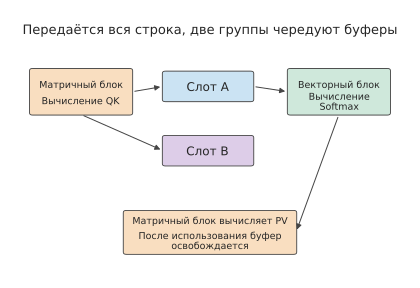
Рисунок 4-22. Матричный и векторный блоки передают данные группами полностью вычисленных строк. QK создаёт оценки, Softmax — вероятности, а после использования вероятностей в PV слот освобождается; соседняя группа строк размещается в другом слоте, благодаря чему разные группы могут обрабатываться с перекрытием.
Разделим 128 строк по направлению запросов на четыре группы по 32 строки. Для оценок FP32 и вероятностей BF16 одной группы суммарно требуется \(32\times128\times(4+2)=24\) KiB. Далее сравниваются варианты с одним и двумя буферами для хранения передаваемых данных; каждый буфер занят с начала QK соответствующей группы до завершения PV. QK и PV используют общий матричный блок, Softmax — векторный блок, а оба направления используют общий интерфейс передачи. При двух буферах разные группы могут одновременно находиться на разных этапах вычисления.20
В этом примере QK, Softmax и PV выполняются над прямоугольными блоками оценок, а готовые операции планируются в порядке полных групп строк. tick по-прежнему обозначает такт SM B200; скорость матричных вычислений равна 8 192 FLOPs/tick, пропускная способность интерфейса передачи — 128 bytes/tick, а экспонента и деление выполняются по 16 операций за tick. Эти значения соответствуют приведённым в статье FlashAttention-4 скорости матричных вычислений одного SM, пропускной способности чтения общей памяти и скорости блока специальных функций9; векторный блок последовательно выполняет масштабирование, вычитание и суммирование, сравнение, экспоненту и деление, причём обычные операции и сравнения выполняются по 128 операций за tick. При размере группы 32 строки QK и PV занимают по 128 tick; обычные операции, сравнение, экспонента и деление в Softmax занимают соответственно 96, 32, 256 и 256 tick, суммарно 640 tick. Прямая передача 16 KiB оценок и 8 KiB вероятностей занимает соответственно 128 и 64 tick, а путь с предварительной записью и последующим чтением — соответственно 256 и 128 tick. Длительность каждого этапа округляется вверх до целого числа tick.
| Способ передачи | Размер группы строк | Число слотов | Начало векторных вычислений | Время завершения |
|---|---|---|---|---|
| Запись в память с последующим чтением | 128 | 1 | 1536 tick | 5118 tick |
| Запись в память с последующим чтением | 32 | 1 | 384 tick | 5120 tick |
| Запись в память с последующим чтением | 32 | 2 | 384 tick | 3200 tick |
| Прямая передача | 32 | 2 | 256 tick | 3008 tick |
| Прямая передача | 32 | 4 | 256 tick | 3008 tick |
Сначала изменим только группировку. Векторный блок начинает вычисления раньше — в момент 384 вместо 1536 tick, однако общее время остаётся примерно равным 5120 tick. Причина заключается в наличии только одного слота: когда группа переходит к Softmax, находящийся в слоте результат всё ещё необходимо хранить, а результат следующей группы QK некуда записать, поэтому приходится ждать завершения PV предыдущей группы. Более раннее начало сокращает ожидание первой группы, но не обеспечивает перекрытия соседних групп.
После добавления второго слота следующая группа может обрабатываться в другом слоте, и общее время снижается до 3200 tick, то есть примерно на 38%. Последующий переход к прямой передаче уменьшает объём данных, проходящих через интерфейс памяти при каждой передаче, и дополнительно сокращает общее время до 3008 tick, то есть примерно на 6%. Дальнейшее увеличение числа слотов не меняет рабочий темп блока с наибольшей длительностью вычислений, поэтому время завершения остаётся прежним.
Группировка позволяет раньше получать полные результаты, второй слот обеспечивает перекрытие соседних групп, а прямой путь сокращает время передачи. Эти три изменения соответственно влияют на зависимости, число одновременно обрабатываемых групп и объём работы интерфейса; в разделе 4.6.2 они будут сопоставлены с эволюцией архитектуры Ascend.
Эксперимент 4-4 · Основное задание: объём внутрикристальной буферной памяти для поддержания непрерывных вычислений
Нарисуйте временные диаграммы входного конвейера с одним, двумя, тремя и четырьмя буферными слотами. По моментам прибытия данных, завершения вычислений и освобождения буферов определите минимальное число слотов, необходимое для поддержания непрерывных вычислений. Затем удвойте скорость матричных вычислений и объясните изменение минимального числа слотов. После этого нарисуйте временные диаграммы прохождения каждой группы строк запросов через QK, Softmax и PV, отдельно показав экономию времени от группировки, добавления слотов и прямой передачи. Наконец, при фиксированном объёме внутрикристальной памяти проанализируйте, как размер буфера каждой группы ограничивает число групп, которые могут одновременно находиться в памяти.
4.4.4 Передача между SM: fence и уровни синхронизации¶
Передача данных в разделе 4.4.3 происходила внутри SM. При decode размер batch мал, поэтому матрично-векторное умножение необходимо распределить между всеми SM, чтобы полностью использовать пропускную способность видеопамяти. Каждый SM вычисляет лишь часть выходного вектора, тогда как следующему оператору, например RMSNorm, требуется полный вектор. Такая передача происходит между SM и может выполняться только через L2.
Передача между SM состоит из двух этапов: производитель сначала записывает данные, а затем флаг; потребитель многократно читает флаг, то есть выполняет опрос, и после получения нового значения считывает данные. Ключевое значение имеет порядок. Данные и флаг могут находиться в разных сегментах L2, а две операции записи проходят через межсоединение независимо, поэтому отправленная первой запись необязательно прибудет первой. Если потребитель сначала увидит флаг, он может прочитать ещё не обновлённые данные. Поэтому перед записью флага производитель должен выполнить fence — инструкцию, гарантирующую порядок обращений к памяти, — и дождаться подтверждения L2 о завершении всех предшествующих записей; после того как потребитель увидит флаг, его последующее чтение также не должно выполняться раньше времени. Эти два ограничения называются соответственно семантикой освобождения (release) и получения (acquire); процесс показан на рисунке 4-23.
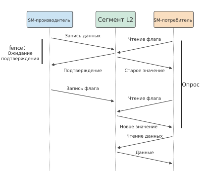
Рисунок 4-23. Временная диаграмма передачи между SM; время направлено сверху вниз. Благодаря fence производитель записывает флаг только после подтверждения L2 о записи данных; потребитель считывает данные после обнаружения нового значения флага при опросе. Каждая наклонная линия соответствует одному прохождению через межсоединение, то есть примерно половине полного обмена с L2.
На RTX PRO 6000 одна передача «один к одному» занимает около 370 ns, или примерно 1 050 тактов, из которых около 600 тактов приходится на fence. Без fence требуется лишь около 140 ns, что близко к длительности одного полного обмена с L2, но корректность результата при этом не гарантируется. Аппаратно отправляемые сигналы подчиняются тому же ограничению: согласно измерениям, CUDA PDL (Programmatic Dependent Launch, при котором предыдущий kernel отправляет сигнал, после чего можно запустить следующий kernel) требует около 366 ns на каждую границу, что сопоставимо с программной передачей.
Сведение всех SM обходится дороже. После завершения каждый SM увеличивает один общий счётчик; когда его значение достигает 188, выполняющие опрос SM переходят к следующему этапу. Очередь из 188 операций прибавления единицы по одному адресу в совокупности занимает менее 80 ns; основные затраты приходятся на fence с обеих сторон, примерно по 460 тактов каждый, обмены при прибытии и опросе, а также различия во времени завершения отдельных SM. В сумме это около 1 900 тактов, или примерно 660 ns. Если дополнительно требуется доставить полный вектор активаций каждому SM, все 188 SM одновременно считывают один и тот же набор строк кэша, причём кэш управляется строками фиксированного размера, в данном случае 128 bytes. Запросы концентрируются в нескольких сегментах и выстраиваются в очередь: когда все SM одновременно считывают одну строку, каждое чтение занимает около 3 400 тактов, что в девять раз больше, чем при чтении отдельной строки каждым SM. После создания восьми копий вектора и их распределения между разными сегментами одна передача данных всем SM занимает около 1,0 μs.
На рисунке 4-24 сведена стоимость синхронизации разных уровней. Чем шире область действия зависимости и чем дальше расположена используемая память, тем выше затраты: барьер внутри SM, который пропускает участвующие потоки только после прибытия всех потоков, подсчитывается аппаратурой SM и занимает около 7 ns; синхронизация внутри кластера блоков потоков через сеть между SM — около 130 ns; за пределами кластера требуется обращение через L2, поэтому передача «один к одному» занимает около 370 ns, а сведение всех SM с доставкой данных — около 1 μs.
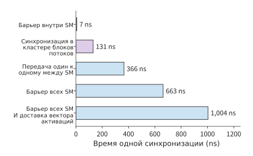
Рисунок 4-24. Время одной синхронизации разных уровней на RTX PRO 6000. Зелёный, фиолетовый и синий цвета соответствуют синхронизации внутри SM, внутри кластера блоков потоков и через L2; передача «один к одному» реализована с семантикой release–acquire, а при сведении всех SM доставляется вектор объёмом 8 KiB, размноженный в восьми экземплярах. Значения представляют собой минимумы из нескольких измерений во время совместного использования GPU.
Кластер блоков потоков не может заменить L2. Обмен между кластерами по-прежнему проходит через L2; пропускная способность чтения распределённой общей памяти внутри кластера также ниже: около 1,3 bytes за такт на каждый SM против примерно 6,9 bytes для L2 и около 36 bytes для общей памяти собственного SM. Обмен вектором активаций объёмом 16 KiB внутри кластера более чем в десять раз медленнее обмена через L2.
Эти затраты не зависят от способа отправки kernel. Повторное воспроизведение графа и persistent kernel из раздела 5.5 позволяют устранить затраты на отправку с хоста и запуск kernel, но не могут устранить необходимые для самой зависимости обмены с L2: если следующему оператору требуются результаты всех SM, каждая такая граница по-прежнему занимает около 1 μs. Второй тип ожидания, описанный в разделе 4.1.2, то есть ожидание завершения предыдущего вычисления, при пересечении границ SM проявляется именно в виде таких обменов с L2.35
4.5 Многочиповая компоновка и межсоединения¶
Когда один ускоритель не может удовлетворить требования к вычислениям или памяти, вычисления и хранение данных можно распределить между несколькими чипами. Масштабирование увеличивает объём ресурсов, но также увеличивает расстояние между блоками, создающими и использующими данные. В этом разделе рассматриваются три вида соединений — внутри корпуса, между хостом и ускорителем и между ускорителями — и анализируется, как размещение данных и гранулярность передачи влияют на время выполнения.
4.5.1 Вычислительные кристаллы, память и соединения внутри корпуса¶
Корпус может содержать несколько кристаллов, совместно предоставляющих вычислительные блоки и интерфейсы памяти. Продукты Blackwell для центров обработки данных и Ascend 910C используют конструкцию с двумя кристаллами: каждый кристалл предоставляет локальные вычислительные ресурсы и интерфейсы памяти, а внутрикорпусные каналы отвечают за обмен данными между кристаллами.21 Увеличение ёмкости позволяет размещать в памяти больше моделей; от того, на какой стороне выполняются вычисления, зависит количество обращений через канал.
Рассмотрим расчёты для двух продуктов с двумя кристаллами. Каждый GPU в HGX B200 имеет 180 GB HBM с пропускной способностью 8 TB/s. Восемь стеков HBM поровну распределены между двумя кристаллами, поэтому каждому локально доступны 90 GB и 4 TB/s, а пропускная способность NV-HBI между кристаллами составляет 10 TB/s. Каждый кристалл Ascend 910C локально располагает 64 GB памяти с пропускной способностью 1,6 TB/s, а пропускная способность канала между кристаллами составляет 270 GB/s в каждом направлении. Пусть на каждом из двух кристаллов хранится по 32 GiB весов, на некотором этапе требуется один раз прочитать все 64 GiB, а все вычисления выполняются на кристалле 0. Кристалл 0 читает собственные 32 GiB из локальной HBM и одновременно через канал читает 32 GiB с кристалла 1. Передаваемые между кристаллами данные сначала считываются из HBM кристалла 1, а затем проходят через канал, поэтому скорость определяется меньшей из двух пропускных способностей. Локальный и межкристальный потоки используют разные интерфейсы и могут обрабатываться одновременно, поэтому время чтения на этом этапе определяется более медленным потоком.
NV-HBI в B200 быстрее HBM каждого отдельного кристалла: в техническом описании не указано, являются ли 10 TB/s суммарной двунаправленной пропускной способностью, но даже при таком предположении в каждом направлении доступно 5 TB/s, что выше 4 TB/s HBM одного кристалла. Поэтому межкристальное чтение по-прежнему выполняется со скоростью HBM кристалла 1 — 4 TB/s. Локальное и межкристальное чтение занимают примерно по 8,6 ms, а весь этап — около 8,6 ms, как если бы каждый кристалл читал собственные локальные веса: расположение вычислений не меняет время чтения. У 910C пропускная способность канала в каждом направлении составляет лишь около 17% пропускной способности локальной HBM. Локальное чтение занимает примерно 21,5 ms, тогда как межкристальное — около 127 ms, поэтому время всего этапа определяется каналом. Если перенести вычисления, обрабатывающие веса кристалла 1, на сам кристалл 1, обе стороны будут читать локальные веса и потребуется лишь около 21,5 ms. Вместо 32 GiB весов через канал будут передаваться входные данные и результаты; если их общий объём составляет 64 MiB, передача по каналу со скоростью 270 GB/s займёт около 0,25 ms.21
Различие между двумя продуктами определяется отношением пропускной способности межкристального канала к пропускной способности локальной HBM каждого кристалла. Для B200 это отношение равно 2,5: межкристальное и локальное чтение выполняются с одинаковой скоростью, поэтому два кристалла можно использовать как один GPU. Для 910C отношение составляет около 0,17, а межкристальное чтение занимает примерно в 5,9 раза больше времени, чем локальное. В суперузле Huawei CloudMatrix384 из 384 ускорителей Ascend 910C при декодировании DeepSeek-R1 эксперты также развёртываются на уровне отдельных кристаллов: на каждом кристалле размещается ровно один эксперт. Если отношение меньше 1, вычислительные блоки должны многократно использовать крупные блоки весов из локальной памяти, передавая между кристаллами только сравнительно небольшие входные данные и результаты.
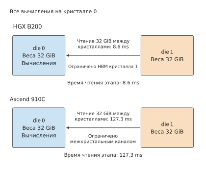
Рисунок 4-25. Когда все вычисления выполняются на кристалле 0, 32 GiB весов с кристалла 1 приходится читать через межкристальный канал. В B200 межкристальное чтение ограничено HBM кристалла 1 и занимает около 8,6 ms — столько же, сколько локальное чтение; в Ascend 910C оно ограничено межкристальным каналом и занимает около 127 ms.
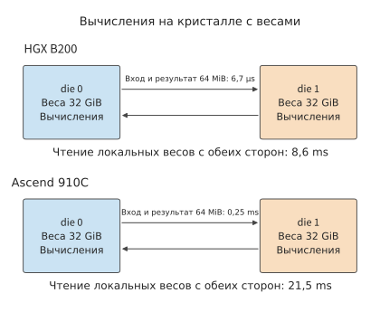
Рисунок 4-26. После переноса вычислений на кристалл, где находятся веса, через канал передаются только 64 MiB входных данных и результатов, а обе стороны читают локальные веса. Для B200 время по-прежнему составляет около 8,6 ms; для Ascend 910C оно сокращается примерно со 127 до 21,5 ms.
На рисунках 4-25 и 4-26 сравнивается взаимное расположение вычислительных блоков и весов: при централизованных вычислениях перемещаются веса, а при локальных — передаются входные данные и возвращаются результаты. Чтобы определить способ распределения вычислительных задач, сначала следует изобразить данные, проходящие через канал в каждом варианте, а затем сравнить их общий объём.
Такое размещение также создаёт возможности для параллелизма: локальное чтение и вычисления на обеих сторонах могут выполняться независимо, после чего передаются итоговые результаты. Необходимость ждать завершения обеих сторон определяется вычислительным графом модели; если на следующем шаге требуется объединить частичные суммы, точка объединения становится точкой синхронизации. В главе 6 эти передачи будут выведены для конкретных способов параллельного разбиения.
4.5.2 Доступ к данным между CPU и ускорителем¶
Размещение данных внутри корпуса определяет передачу между кристаллами; аналогичная проблема существует и за пределами чипа. На рисунке 4-2 показана передача данных между хостом и ускорителем: подготовленные CPU данные необходимо передать GPU. Подготовленные CPU входные данные обычно сначала помещаются в память хоста, а GPU с отдельной видеопамятью получает их через PCIe или специализированное соединение платформы. Передача с хоста на устройство называется H2D, а с устройства на хост — D2H. Механизм копирования переносит данные по заранее подготовленным адресам посредством прямого доступа к памяти (DMA), поэтому после отправки команды копирования CPU может выполнять другую работу.
Один и тот же тензор сначала передаётся по каналу хоста, а затем считывается GPU из видеопамяти, поэтому время передачи и чтения нужно рассчитывать отдельно. Рассмотрим RTX 4090: эта карта подключается к хосту через PCIe 4.0 x16 (16 линий), номинальная суммарная двунаправленная пропускная способность составляет 64 GB/s, то есть 32 GB/s в каждом направлении; пропускная способность видеопамяти равна 1 008 GB/s.30 Пусть объём входных данных равен 64 MiB. Если сначала пренебречь накладными расходами на запуск, то
Время загрузки в 31,5 раза превышает время одного чтения из видеопамяти, что точно соответствует отношению пропускных способностей двух путей. Если данные используются только один раз, основное время занимает передача с хоста; если после загрузки они повторно используются на ускорителе \(R\) раз, на каждое использование приходится \(T_{\mathrm{H2D}}/R\). При 100 повторных использованиях среднее приходящееся на одно использование время загрузки сокращается примерно до 21 μs. При каждом вызове достаточно передать адрес и параметры выполнения, а полный набор данных продолжает находиться в видеопамяти.
Можно также определить минимальное необходимое количество повторных использований: при \(R\ge32\) приходящееся на одно использование время загрузки уже не превышает время одного чтения ускорителем. Поэтому увеличение пропускной способности канала хоста особенно полезно для однократно используемых входных данных, а постоянное размещение весов на устройстве позволяет избежать повторных загрузок.
Механизм копирования и вычислительные блоки являются независимыми исполнительными ресурсами, поэтому во время вычислений GPU над текущим batch можно загружать следующий batch. Для построения конвейера два входных буфера раздельно хранят текущий и следующий batch, а после завершения вычислений текущего batch назначение буферов меняется. Это и есть применение двойной буферизации из раздела 4.4 к каналу хоста. Если запись при копировании и чтение при вычислении совместно используют интерфейс памяти, этот интерфейс должен обслуживать оба потока данных.
Не на всех платформах требуется такое копирование. CPU и GPU Apple совместно используют физическую память. Если применяется доступный обеим сторонам буфер, после записи данных CPU и завершения синхронизации GPU может читать их из того же хранилища. По сравнению с подходом с отдельной видеопамятью устраняются отдельная копия H2D и её передача; последующее чтение GPU по-прежнему обслуживается системой памяти.8 Унифицированная память превращает передачу данных из «использования после копирования» в «использование после синхронизации».
Унифицированное адресное пространство позволяет CPU и GPU обращаться к данным по одному набору виртуальных адресов. CUDA — платформа программирования и выполнения для GPU NVIDIA; её механизм унифицированной памяти (Unified Memory) может перемещать страницы в соответствии с правилами платформы, сохраняя адрес неизменным при изменении физического расположения.29 Расстояние между данными и использующим их процессором влияет на время доступа, а адреса и механизм синхронизации позволяют процессору найти данные и прочитать их после завершения записи.
4.5.3 Обмен данными между ускорителями¶
Пример загрузки с хоста подчёркивает важность размещения и повторного использования данных. Карты также часто обмениваются активациями, входными данными экспертов и частичными результатами. Объём данных при каждой передаче различается, поэтому помимо числа байтов необходимо учитывать фиксированные накладные расходы каждой передачи. Для одной передачи требуется отправить запрос, уведомить получателя о завершении и передать данные по каналу. Если обозначить фиксированные накладные расходы через \(\alpha\), эффективную однонаправленную пропускную способность через \(R\), а объём данных через \(V\), то время передачи между двумя точками равно
Рассмотрим сервер HGX H100: внутри него каждая H100 соединена с другими GPU посредством NVLink, суммарная двунаправленная пропускная способность которого равна 900 GB/s, то есть \(R=450\) GB/s в каждом направлении; NVLink в A100 SXM обеспечивает 300 GB/s в каждом направлении.48 Примем фиксированные накладные расходы \(\alpha=2\) μs, как и для запуска каждого раунда NVLink внутри сервера в главе 7. Пусть передаётся BF16-активация формы \([M,4096]\), объём которой равен \(8192M\) bytes. При \(M=1\) объём данных составляет всего 8 KiB, передача на H100 занимает около 0,02 μs, а общее время — около 2,02 μs. При \(M=256\) объём данных равен 2 MiB, передача занимает около 4,66 μs, а общее время — около 6,66 μs.
При переходе с A100 на H100 пропускная способность увеличивается в 1,5 раза, однако время передачи 8 KiB сокращается лишь с 2,03 до 2,02 μs. Для передачи 2 MiB время сокращается с 8,99 до 6,66 μs, то есть примерно на 26%. Если вместо этого вдвое уменьшить фиксированные накладные расходы на H100, время передачи небольшого объёма данных сократится примерно вдвое, а при большом объёме данных экономия составит около 15%. Эти два способа оптимизации воздействуют на разные доминирующие слагаемые формулы.
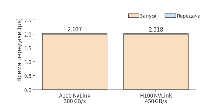
Рисунок 4-27. Время запуска и передачи 8 KiB данных. При фиксированных накладных расходах на запуск 2 μs замена NVLink A100 с пропускной способностью 300 GB/s в каждом направлении на NVLink H100 с 450 GB/s сокращает лишь тонкую синюю составляющую передачи.
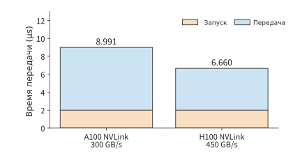
Рисунок 4-28. Время передачи 2 MiB данных при тех же условиях запуска. Синяя составляющая передачи занимает основную часть времени, поэтому переход на NVLink H100 даёт более заметный выигрыш; диапазон вертикальной оси на этом и предыдущем рисунках указан отдельно.
Приравняв два слагаемых, получим пороговый объём данных:
Для активации из этого примера он соответствует \(M\approx109.9\): только начиная со 110 строк время передачи превышает фиксированные накладные расходы. Чем быстрее канал, тем выше порог и тем больше передач попадает в область, где преобладают фиксированные накладные расходы. Для объёмов меньше этого порога объединение нескольких передач в одну уменьшает приходящиеся на каждый набор данных накладные расходы на запуск. Для объёмов выше порога больший эффект дают сокращение числа байтов или повышение пропускной способности. Объединённая отправка нескольких уже готовых наборов данных сокращает число запусков; ожидание ещё не готовых данных ради формирования более крупного пакета увеличивает время в очереди. Поэтому выбор гранулярности передачи также предполагает компромисс между пропускной способностью и временем отклика.
Если одно выполнение включает 100 обязательно последовательных обменов небольшими объёмами данных, каждый с фиксированными накладными расходами 2 μs, одни только эти расходы составят 200 μs. При передаче между серверами фиксированные накладные расходы выше: для операции AllReduce над 16 bytes между 16 картами двух серверов HGX H100 — объединения локальных вкладов всех карт с предоставлением полного результата каждой карте — опубликованное измерение составляет около 25 μs.32 Сто таких операций сокращения займут 2,5 ms. В этом случае даже частичное уменьшение объёма передаваемых данных вряд ли заметно сократит общее время, тогда как сокращение количества раундов обмена напрямую укорачивает цепочку зависимостей. AllReduce объединяет несколько передач и операций сокращения; в главе 6 будут отдельно рассчитаны число раундов, количество передаваемых по каждому каналу байтов и время, в течение которого передача может перекрываться вычислениями.
Такие межсоединения, как NVLink и Huawei Unified Bus, предоставляют пути передачи между устройствами, а уведомления о завершении позволяют получателю начать вычисления после поступления данных.21
Вопрос для размышления: как объединённая отправка изменяет время завершения и время отклика для первого набора данных? Четыре набора данных объёмом 8 KiB становятся готовы последовательно в моменты 0, 1, 2 и 3 μs. Сохраняя для NVLink H100 пропускную способность 450 GB/s в каждом направлении и накладные расходы 2 μs на каждый запуск, сравните их раздельную отправку по мере готовности с ожиданием готовности всех наборов и объединённой отправкой по одному каналу: когда будут доставлены все данные? Когда первый набор данных станет доступен получателю?
4.6 Как требования моделей стимулируют эволюцию архитектур¶
В разделах 4.2–4.5 были отдельно рассмотрены вычисления, хранение, перемещение данных и межсоединения. В этом разделе мы вновь объединим эти компоненты в контексте смены поколений NVIDIA, Ascend и Apple, рассчитаем, какую именно работу устраняют новые механизмы и требования к каким ресурсам они изменяют, а затем объясним, как эти изменения отвечают характеру модельной нагрузки.
Ниже последовательно сравниваются изменения матричных блоков, числовых форматов, трактов данных и ёмкости; в каждом случае объём работы модели остаётся неизменным, а меняется только исследуемое оборудование или способ представления. Параметры оборудования и повторные расчёты приведены в сопутствующих вычислительных материалах.45
4.6.1 NVIDIA: какой выигрыш по отдельности дают матрицы, точность и тракт данных¶
Ценность Tensor Core сначала рассчитаем для двух трактов на одном и том же чипе. Обычная пиковая производительность Volta V100 SXM2 в FP32 составляет 15,7 TFLOP/s, пиковая производительность Tensor Core с входными данными FP16 и накоплением FP32 — 125 TFLOP/s, а пропускная способность HBM2 — 900 GB/s. Снова возьмём проекцию \(4096\times4096\) из этой главы: входные данные и веса хранятся в FP16, результат также записывается в FP16. Обычный тракт преобразует операнды в FP32 и затем выполняет умножение со сложением, а тракт Tensor Core напрямую выполняет матричное умножение со сложением в смешанной точности, то есть использует FP16 для входных данных и FP32 для накопления. Оба тракта читают и записывают одинаковый объём данных.40
При обработке 4 096 строк объём матричных вычислений составляет \(2\times4096^3\approx137{,}4\) GFLOPs, а общий размер входных данных, весов и выходных данных — 96 MiB. Умножение со сложением в обычном FP32 требует \(137{,}4/15{,}7\approx8{,}75\) ms, Tensor Core — \(137{,}4/125\approx1{,}10\) ms, а чтение и обратная запись — около 0,112 ms. Время матричных вычислений сокращается примерно в восемь раз, поскольку большое количество регулярных операций умножения со сложением передаётся специализированным блокам.
Теперь сократим входные данные до одной строки. Время матричных вычислений по двум трактам станет около 2,14 μs и 0,268 μs, однако передача 32 MiB весов вместе с входными и выходными данными потребует около 37,3 μs. Поэтому оба тракта прежде всего ограничены чтением данных. Одно и то же улучшение Tensor Core даёт значительный выигрыш для матричного умножения с большим batch, но мало помогает при данном однострочном вызове: ускорять по-прежнему необходимо чтение весов.
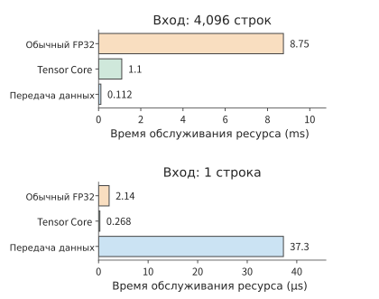
Рис. 4-29. Проекция Q на одном V100. При 4 096 строках Tensor Core значительно сокращает время матричных вычислений; при одной строке оба вычислительных тракта работают быстрее, чем выполняется передача весов. Для верхней и нижней групп отдельно указаны единицы времени.
Эволюция точности одновременно изменяет числовой диапазон, объём хранения и исполняемые инструкции. В Turing для Tensor Core появились INT8 и INT4, расширившие возможности низкобитного целочисленного инференса; Ampere добавил BF16, TF32 и структурированную разреженность 2:4. В матричном умножении TF32 сохраняет диапазон экспоненты FP32, но сокращает мантиссу, а разреженность 2:4 организует вычисления так, что ненулевыми остаются два элемента из каждых четырёх. Transformer Engine в Hopper объединил матричные инструкции FP8 с управлением масштабированием, а Blackwell дополнительно поддерживает блочное масштабирование и FP4.395
Рассмотрим в качестве примера добавленный формат BF16. И FP16, и BF16 занимают два байта, поэтому после перехода на BF16 прежние 32 MiB весов не изменятся. Число с плавающей запятой представляет значение как произведение значащих цифр и степени двойки; у нормальных чисел значащие цифры нормализованы, а у субнормальных чисел количество значащих разрядов постепенно уменьшается в меньшем числовом диапазоне. BF16 использует восьмибитную экспоненту, а его минимальное нормальное число составляет около \(1{,}18\times10^{-38}\); FP16 использует пятибитную экспоненту, его минимальное нормальное число составляет около \(6{,}10\times10^{-5}\), а минимальное положительное субнормальное число — около \(5{,}96\times10^{-8}\). Градиент величиной \(10^{-8}\) при непосредственном округлении до FP16 превратится в ноль, тогда как BF16 всё ещё способен его представить. Это снижает потребность в корректировке масштабирования для предотвращения переполнения и исчезновения порядка при обучении. Цена этого — меньшее количество значащих цифр: в окрестности 1 интервал между соседними числами BF16 равен \(2^{-7}\), а для FP16 — \(2^{-10}\). Низкая точность входных данных в сочетании с накоплением FP32 позволяет раздельно работать с представлением входных данных и ошибкой накопления длинного скалярного произведения.46
Теперь рассмотрим объём хранения. Сохраним блочный формат из раздела 4.2.4, в котором каждые 32 значения используют общий однобайтовый масштабный коэффициент; MX — название такого формата микромасштабирования (microscaling). Для MXFP8 требуется \(16+0{,}5=16{,}5\) MiB, для MXFP4 — \(8+0{,}5=8{,}5\) MiB. Чтение этих весов BF16 с пропускной способностью RTX 4090, равной 1 008 GB/s, занимает 33,29 μs; чтение тех же весов BF16 на RTX 5090 с пропускной способностью 1 792 GB/s занимает 18,72 μs, а чтение весов MXFP4 — 4,97 μs. Первое сокращение обусловлено повышением пропускной способности, второе — изменением разрядности и группового представления.
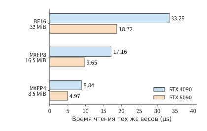
Рис. 4-30. Бюджет хранения и чтения одного и того же массива весов 4096×4096. Каждые 32 низкоточных значения используют общий однобайтовый масштабный коэффициент. При снижении разрядности с BF16 до MXFP4 общий объём весов и масштабных коэффициентов сокращается с 32 MiB до 8,5 MiB.
При переходе с 33,29 μs к 4,97 μs бюджет чтения весов уменьшается примерно в 6,69 раза. Этот выигрыш складывается из произведения двух факторов: пропускная способность возрастает примерно в 1,78 раза, а объём хранения сокращается примерно в 3,76 раза. Нативный низкоточный матричный тракт непосредственно обрабатывает сжатое представление, устраняя высокоточные копии весов, необходимые при предварительной распаковке по схеме из раздела 4.2.4.
По мере ускорения матриц архитектура начинает сокращать подготовку и ожидание до и после их обработки. Асинхронное копирование в Ampere устраняет промежуточную передачу через регистры при копировании из глобальной памяти в разделяемую; TMA в Hopper берёт на себя генерацию многомерных адресов и перемещение данных, работая совместно с асинхронным выполнением матричных операций; в серверном Blackwell SM100 для хранения результатов матричного накопления применяется тензорная память (Tensor Memory, TMEM). Эти три изменения соответственно затрагивают инструкции перемещения, использование регистров общего назначения и место хранения промежуточных результатов.41
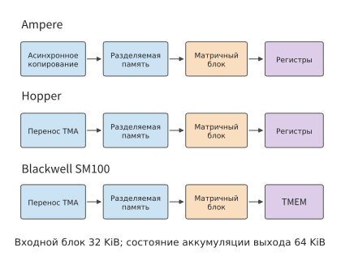
Рис. 4-31. От асинхронного копирования и TMA до TMEM: специализированные компоненты берут на себя всё больше задач по подготовке данных и управлению состоянием накопления. Синим показаны хранение и перемещение данных, оранжевым — матричные вычисления, фиолетовым — результаты накопления.
Вычислительному блоку из раздела 4.3.2 требуется 32 KiB входных данных и 64 KiB результатов накопления. Три набора входных данных и один набор результатов в сумме занимают 160 KiB; TMEM самостоятельно обслуживает 64 KiB из этого объёма, поэтому регистры общего назначения можно использовать для состояния других потоков. Таково прямое влияние нового специализированного хранилища на резидентность рабочей нагрузки.
В следующем поколении пропускная способность Rubin для вычисления экспоненты FP32 увеличивается вдвое относительно Blackwell, а для BF16/FP16 — вчетверо, что устраняет узкое место при вычислении экспоненты, проявившееся после ускорения матриц в примере 4-1. Rubin также позволяет TMA обновлять адреса и шаги экспертов: при переключении экспертов MoE форма матрицы может оставаться неизменной, достаточно сменить расположение весов, благодаря чему обновление дескриптора сокращает повторную подготовку адресов.42
Как разместить потребительские, рабочие и серверные продукты в одной таблице? Зафиксируем входные данные BF16, накопление FP32 и вычисление плотных матриц. Параметры приведены ниже. RTX 3090, 4090 и 5090 относятся соответственно к Ampere, Ada и Blackwell; A100 и H100 — соответственно к Ampere и Hopper.45
| Модель и линейка продуктов | Ёмкость, GB | Пропускная способность, GB/s | Плотные матрицы BF16/FP32, TFLOP/s |
|---|---|---|---|
| RTX 3090, потребительская | 24 | 936 | 71,0 |
| RTX 4090, потребительская | 24 | 1 008 | 165,2 |
| RTX 5090, потребительская | 32 | 1 792 | 209,5 |
| RTX PRO 6000 Blackwell, рабочая станция | 96 | 1 792 | 503,8 |
| A100 80GB SXM, серверная | 80 | 2 039 | 312,0 |
| H100 SXM, серверная | 80 | 3 350 | 989,4 |
| H200 SXM, серверная | 141 | 4 800 | 989,5 |
RTX 3090 и 4090 имеют одинаковую ёмкость, при этом скорость матричных операций BF16 увеличивается примерно в 2,33 раза, а пропускная способность — лишь примерно на 7,7%. Первое изменение главным образом сокращает время вычисления больших матриц, и только второе непосредственно сокращает время чтения весов для одной строки. У RTX 5090 ёмкость увеличена до 32 GB, а пропускная способность — ещё примерно в 1,78 раза; новый тракт FP4 также предоставляет дополнительный способ выполнения для моделей, допускающих низкую точность. Эти три поколения продуктов соответственно изменяют ресурсные бюджеты обработки матриц, чтения весов и резидентного размещения модели.
Пропускная способность RTX PRO 6000 и RTX 5090 одинакова и составляет 1 792 GB/s. Основные преимущества карты для рабочих станций включают 96 GB видеопамяти с ECC, более высокую пропускную способность BF16 с накоплением FP32 и функцию многоэкземплярного GPU (MIG); MIG разделяет один GPU на экземпляры с изолированными друг от друга ресурсами. Для потокового чтения весов одинакового размера бюджет пропускной способности у них совпадает; для больших матриц или резидентных данных объёмом свыше 32 GB результаты будут различаться. SM120 и SM100 — две разные архитектуры инструкций SM. Потребительские и предназначенные для рабочих станций версии Blackwell используют SM120; SM100 в серверных Blackwell, таких как B200, применяет описанную выше TMEM и соответствующие матричные инструкции, а программное обеспечение выбирает kernel в соответствии с целевой архитектурой.48
Серверные карты также оснащаются HBM и высокоскоростными межсоединениями для нескольких карт. Совокупная двунаправленная пропускная способность NVLink у A100 SXM составляет 600 GB/s, у H100 SXM — 900 GB/s, что при однонаправленной передаче соответствует 300 и 450 GB/s. По методике из раздела 4.5 время сериализации при передаче 64 MiB данных по каналу — объём данных, делённый на однонаправленную пропускную способность — составляет соответственно около 224 и 149 μs. При увеличении масштаба вычислений обмен данными на каждом слое при тензорном параллелизме, когда матрица одного слоя распределяется между несколькими картами, обмен градиентами при обучении и диспетчеризация экспертов многократно используют эти соединения. RTX 4090 и 5090 не имеют NVLink; RTX 3090 поддерживает двухкарточный NVLink. В главах 6 и 7 параметры этих соединений будут использованы для расчёта времени тензорного разбиения, обмена градиентами и диспетчеризации экспертов.48
Вернёмся к сравнению вычислений и пропускной способности: относительно A100 скорость матричных операций BF16 у H100 возрастает примерно в 3,17 раза, пропускная способность — примерно в 1,64 раза, а также появляются FP8, TMA и новые механизмы совместной работы. В H200 относительно H100 главным образом увеличиваются ёмкость и пропускная способность, тогда как приведённая в таблице скорость матричных операций BF16 практически не меняется. Эти две группы изменений соответственно представляют подходы «совместно изменить вычисления и организацию выполнения» и «сохранить вычислительную мощность, усилив подсистему хранения». После подстановки модельной нагрузки в разделе 4.8.2 можно будет определить, какая группа улучшений полезнее.
4.6.2 Ascend: от развёртки свёрток CNN к взаимодействию матриц и векторов Transformer¶
При проектировании раннего Ascend 910, который в последующем сравнении поколений называется 910A, большую часть обучающей нагрузки составляли свёрточные нейронные сети (CNN), такие как ResNet. Авторский обзор разработки описывает этот контекст, а статья о DaVinci дополнительно раскрывает распределение задач между Scalar, Vector, Cube и MTE. MTE содержит модули img2col, транспонирования и распаковки; img2col во время перемещения данных организует окна свёртки в матричные входные данные. Сначала рассчитаем, какую работу эта специализированная возможность устраняла в CNN, а затем заменим нагрузку на Transformer.47
Почему развёртку свёртки стоит поручить оборудованию? Возьмём свёртку в стиле ResNet размером \(3\times3\) со входом \(56\times56\times64\), 64 выходными каналами и шагом 1, сохраняющую пространственный размер с помощью дополнения (padding). Вход хранится в FP16 и занимает \(56\times56\times64\times2=401\,408\) bytes, то есть около 0,383 MiB. Для каждой выходной позиции используются 64 канала в девяти соседних позициях; развёрнутая матрица имеет размер \(3136\times576\) и занимает около 3,445 MiB — в девять раз больше исходного входа.
Если сначала сформировать развёрнутую матрицу в HBM, а затем прочитать её для матричного умножения, дополнительно выполнятся одна запись и одно чтение по 3,445 MiB, всего 6,891 MiB. Пропускная способность HBM раннего 910 составляет 1,2 TB/s, поэтому только запись и чтение этой развёрнутой матрицы занимают около 6,02 μs времени пропускной способности. Выполняя развёртку окна непосредственно при перемещении данных на кристалле, MTE устраняет запись и чтение этой промежуточной копии в HBM. После организации входного окна на кристалле оно напрямую передаётся в матричные вычисления, а в HBM сохраняются исходные входные данные и веса.44
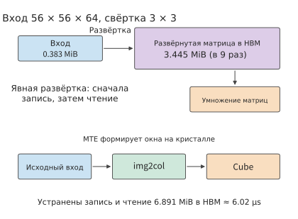
Рис. 4-32. Два тракта подготовки одной и той же свёртки 3×3. Явная развёртка формирует промежуточную матрицу в девять раз большего размера; MTE организует окна на кристалле, устраняя запись и чтение 6,891 MiB промежуточных данных в HBM.
Теперь рассмотрим распределение вычислений. Эта свёртка требует \(2\times3136\times576\times64\approx231{,}2\) MFLOPs. Для Ascend-Max Cube в статье о DaVinci указано 8 192 FLOPs за такт, поэтому время обслуживания матрицы составляет 28 224 такта. Выходная ReLU обрабатывает лишь 200 704 элемента; при ширине вектора 256 bytes одна группа вмещает 128 элементов FP16, всего требуется 1 568 групп. Объём матричных вычислений свёртки и объём постобработки резко различаются, а Cube, Vector и оборудование развёртки выполняют чётко определённые задачи.
При переходе к вниманию одновременно меняются соотношение ресурсов и направление данных. Для блока внимания \(128\times128\) с размерностью головы 128 операции QK и PV в сумме требуют около 8,39 MFLOPs, что при той же скорости Cube соответствует 1 024 тактам. Softmax должен вычислить 16 384 экспоненты, а также выполнить редукцию максимума, суммирование и нормализацию. При ширине вектора 256 bytes одна группа данных FP32 содержит 64 значения, поэтому для одних только экспонент необходимо обработать 256 групп. Чтобы этап вычисления экспоненты не превышал 1 024 такта матричной части, он должен в среднем обрабатывать одну группу за четыре такта, то есть выдавать 16 результатов экспоненты за такт. Затем выполняются редукция и нормализация, формирующие вход для PV.
На одном и том же Cube матричная часть свёртки CNN занимает 28 224 такта, а блока внимания — лишь 1 024 такта; при этом векторная работа меняется с простой ReLU на экспоненты, редукцию и нормализацию. В анализе BERT из статьи о DaVinci время большинства слоёв определяется Cube. Если отдельно рассмотреть внимание, становится видна новая потребность Softmax в пропускной способности векторных вычислений.44
Развёртка окон свёртки, полезная в CNN, не выполняет никакой работы для проекций Q, K и V, поскольку вход проекции уже является матрицей. Внимание, напротив, требует передать результат QK в Vector для Softmax, а затем вернуть вероятности в Cube для PV. Работа по развёртке свёртки, устраняемая img2col, отличается от работы, необходимой для этих двух передач между матричными и векторными вычислениями; после изменения нагрузки меняется и приоритет новых аппаратных ресурсов.
Как тракт передачи влияет на скорость при независимом планировании? В Atlas A2 с 910B матричные ядра AIC и векторные ядра AIV управляются раздельно; 910C дополнительно использует два кристалла, на каждом из которых находятся 24 AIC и 48 AIV. Раздельное управление позволяет разным видам работы продвигаться независимо, а AIC и AIV обмениваются результатами через глобальное адресное пространство, при этом фактические данные проходят через иерархию кэшей. CloudMatrix384 сжимает состояние KV в MLA и распределяет матричную и векторную работу с помощью слияния и динамического разбиения на блоки; MTP одновременно обрабатывает несколько прогнозируемых позиций, тем самым снова изменяя количество строк в этих вычислениях.44
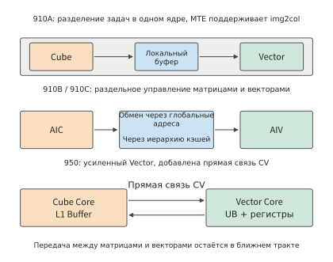
Рис. 4-33. Раннее распределение задач внутри одного ядра, независимое управление в 910B/910C и добавленный в 950 прямой тракт CV. Соотношение вычислительных блоков и тракт обмена результатами совместно определяют эффективность объединённых операторов.
Рассчитаем объём работы интерфейса для того же блока внимания. Оценки и вероятности передаются в FP32, каждый тензор занимает 64 KiB. Одна передача через внешний интерфейс обмена включает запись и чтение, всего 128 KiB; две передачи QK→Softmax и Softmax→PV в сумме составляют 256 KiB. Если обе передачи выполняются одним внешним интерфейсом, то для завершения за 1,024 μs ему требуется около 256 GB/s. Если подставить указанную в статье о DaVinci пропускную способность кэша последнего уровня (LLC) на ядро, равную 94 GB/s, эта работа займёт около 2,79 μs, что уже превышает время обслуживания матрицы Cube, равное 1,024 μs при частоте 1 GHz. Даже если матричные вычисления продолжат ускоряться, внешнему интерфейсу всё равно придётся переместить все эти байты.
Следующее изменение в Ascend 950 нацелено именно на этот внешний интерфейс: между буфером первого уровня Cube L1 и унифицированным буфером Vector (Unified Buffer, в документации Ascend сокращается до UB и не совпадает с межсоединением Unified Bus из главы 6) добавлен прямой тракт CV (Cube–Vector). Два промежуточных тензора по 64 KiB передаются через прямое соединение, всего 128 KiB, благодаря чему прежние 256 KiB записи и чтения выводятся из внешнего интерфейса. Чтобы этот прямой тракт выполнил обе передачи за 1,024 μs, требуется около 128 GB/s; если формат передачи изменить на FP16/BF16, требование дополнительно сократится вдвое, примерно до 64 GB/s.
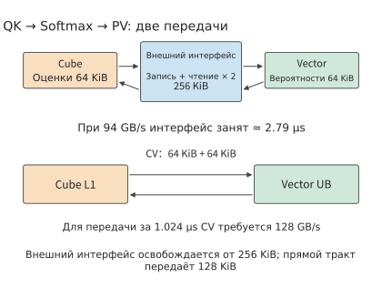
Рис. 4-34. Две передачи в одном блоке внимания. Внешний интерфейс обмена выполняет запись и чтение общим объёмом 256 KiB; прямой тракт CV передаёт два тензора по 64 KiB, выводя этот трафик из внешнего интерфейса. Завершение передачи за 1,024 μs требует пропускной способности прямого тракта 128 GB/s.
Кроме того, 950 вдвое увеличивает пропускную способность одного Vector Core для FP16/FP32, добавляет регистровый файл между унифицированным буфером и векторным арифметико-логическим устройством (ALU), а также оптимизирует выполнение Softmax и функции активации GELU. Для той же обычной векторной работы \(F_v\) величина \(F_v/P_v\) сокращается до \(F_v/(2P_v)\); если ранее векторный этап занимал вдвое больше времени, чем матричный, это изменение вновь уравновешивает их. Для рассмотренного выше блока внимания пропускная способность вычисления экспоненты должна достигать 16 результатов за такт. Новый NDDMA берёт на себя подготовку многомерных адресов и раскладки, а BufferID организует синхронизированную передачу с помощью идентификаторов буферов.6
Низкую точность 950 также можно рассматривать при том же объёме работы: при одинаковой частоте скорость матричных вычислений формата класса FP8 вдвое выше FP16, а MXFP4 — вчетверо выше. Для фиксированной матрицы \(F\) время обслуживания вычислений последовательно равно \(F/P\), \(F/(2P)\) и \(F/(4P)\); однако размер двух передач оценок и вероятностей FP32 остаётся прежним. Работа интерфейса сократится только при одновременном изменении тракта передачи, формата или раскладки. Лишь совместная эволюция матриц, векторов и тракта CV позволяет превратить локальное ускорение в выигрыш всего фрагмента внимания.
4.6.3 Apple: как преобразовать большую ёмкость унифицированной памяти в возможности запуска моделей¶
CPU, GPU и отдельный Neural Engine Apple используют общую унифицированную память. Унифицированная память устраняет копирование данных между процессорами и позволяет локально выполняемым моделям использовать более крупный пул памяти. Сначала рассчитаем, какие модели помещаются в унифицированную память, а затем — какой объём данных необходимо прочитать для генерации одного токена.
Сначала сверим соотношение ёмкости и пропускной способности разных поколений. Типичная конфигурация M1 Ultra имеет 128 GB и 800 GB/s; M2 Ultra расширяет ёмкость до 192 GB при 800 GB/s; конфигурации M3 Ultra с 80-ядерным GPU имеют 256 GB и официально указанную конфигурацию 512 GB, обе с пропускной способностью 819 GB/s. M4 Max также имеет конфигурацию 128 GB, её пропускная способность составляет 546 GB/s.49
Какие показатели времени изменяются при удвоении ёмкости? Сначала оставим модель, точность и batch неизменными. При увеличении ёмкости M3 Ultra с 256 до 512 GB пропускная способность остаётся равной 819 GB/s, поэтому величина \(V/R\) для одного и того же выполнения совершенно не меняется. При замене M1 Ultra на M3 Ultra пропускная способность возрастает с 800 до 819 GB/s, а скорость чтения увеличивается лишь примерно на 2,4%. Увеличение ёмкости позволяет разместить больше весов, KV или запросов, но только увеличение пропускной способности непосредственно изменяет время чтения того же объёма данных.
Возьмём Qwen3-8B в BF16, один запрос и 8 192 позиции. Приведённый в книге перечень тензоров даёт около 16,345 GB нагрузки на интерфейс весами и KV за один шаг. Нижняя граница времени чтения для M1/M2 Ultra составляет \(16{,}345\ \mathrm{GB}/(800\ \mathrm{GB/s})\approx20{,}43\) ms, для M3 Ultra — \(16{,}345\ \mathrm{GB}/(819\ \mathrm{GB/s})\approx19{,}96\) ms, для M4 Max — \(16{,}345\ \mathrm{GB}/(546\ \mathrm{GB/s})\approx29{,}94\) ms. При одинаковых 128 GB M1 Ultra читает данные этого шага примерно на 9,51 ms быстрее M4 Max.45
Основную ценность ёмкости проще увидеть на примере крупной MoE. При использовании принятой в книге 4-битной схемы хранения резидентные веса Qwen3-235B-A22B вместе с масштабными коэффициентами и тензорами, сохраняемыми в высокой точности, занимают около 123,142 GB. Один запрос с контекстом 8K, KV и рабочей областью 2 GiB требует в сумме около 126,867 GB. В системе со 128 GB остаётся лишь около 1,13 GB; если дополнительно зарезервировать 8 GB для операционной системы и других приложений, потребуется около 134,87 GB. Конфигурации с 256 или 512 GB имеют достаточно места для этого бюджета.
На каждом шаге MoE обращается только к выбранным экспертам. Для того же единственного запроса нагрузка на интерфейс весами и KV за шаг составляет около 13,697 GB, что на M3 Ultra требует около 16,72 ms, а не около 150 ms, которые получились бы при чтении всех 123,142 GB весов на каждом шаге. Для MoE полный объём весов определяет необходимую ёмкость, а выбранные на текущем шаге эксперты — объём чтения весов за шаг. Поэтому крупная MoE может одновременно «требовать много памяти» и «читать сравнительно мало на каждом шаге».15
Теперь подставим результаты маршрутизации восьми запросов из раздела 4.3.3. Объём чтения за шаг при концентрированной и распределённой маршрутизации составляет соответственно 24,737 GB и 75,967 GB, что на M3 Ultra соответствует 30,20 ms и 92,76 ms. За шаг выдаются восемь токенов, поэтому бюджет пропускной способности чтения составляет соответственно \(8/0{,}03020\approx265\) token/s и \(8/0{,}09276\approx86\) token/s. Конфигурации с 256 и 512 GB способны вместить одну и ту же задачу с восемью запросами, а различие между двумя бюджетами чтения здесь определяется повторным использованием при маршрутизации.
Как включить в этот расчёт локальное хранилище и специализированные блоки GPU? В M3 появился Dynamic Caching, распределяющий локальную память GPU в соответствии с потребностями выполнения; M4 сохраняет эту организацию. Такие механизмы влияют на резидентность работы и использование ресурсов на кристалле, тогда как ёмкость модели определяется унифицированной памятью. В M5 в каждое ядро GPU дополнительно встроен Neural Accelerator, доступный через такие интерфейсы, как Metal 4 Tensor API; отдельный Neural Engine при этом сохраняется. Специализированные блоки внутри GPU ускоряют обработку матриц, а подготовка данных и операции общего назначения по-прежнему организуются программой GPU.438
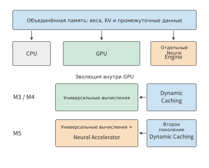
Рис. 4-35. Унифицированная память отвечает за общесистемную ёмкость данных, Dynamic Caching управляет локальными ресурсами GPU, а Neural Accelerator в M5 добавляет специализированные вычислительные возможности внутри GPU. Эти три компонента соответственно учитываются при анализе ёмкости, резидентности и времени вычислений.
Пропускная способность памяти также растёт от поколения к поколению: у базовых M4 и M5 пропускная способность унифицированной памяти увеличивается со 120 до 153 GB/s, то есть примерно на 27,5%. Время чтения рассмотренных выше 32 MiB весов сокращается примерно с 279,6 μs до 219,3 μs, то есть примерно на 21,6%. Заявленная Apple пиковая производительность GPU M5 в задачах AI более чем в четыре раза превышает M4; чтение весов для той же однострочной проекции по-прежнему определяется указанной выше пропускной способностью. При увеличении числа входных строк чтение весов распределяется на больший объём вычислений, и только тогда новые матричные блоки с большей вероятностью становятся основным источником выигрыша. Это явление полностью соответствует результатам для двух вариантов числа строк на V100.8
Эти направления эволюции превращают обратную связь на рис. 4-3 в конкретные изменения ресурсов: большие матрицы стимулируют появление специализированных блоков умножения со сложением, Transformer увеличивает требования к векторным вычислениям и передаче данных, а крупные MoE повышают требования к ёмкости для резидентного размещения.
Мозг даёт ещё один пример организации вычислений. Нейроны обновляют состояние, синапсы хранят силу связей и участвуют в передаче сигналов, а память и вычисления распределены по высокопараллельной сети. Локальные связи, разреженная активность, событийная работа и трёхмерная организация сокращают многие пути передачи сигналов. Нейроморфные чипы и устройства вычислений в памяти используют отдельные элементы этих идей; в цифровых микросхемах им соответствуют более ёмкие локальные буферы, высокая пропускная способность памяти, короткие межсоединения и повторное использование данных рядом с вычислительными блоками.
4.7 Специализированные архитектуры¶
В предыдущих разделах эффективность универсальных ускорителей повышалась за счёт повторного использования, конвейеризации и локальности. Если некоторые условия рабочей нагрузки длительное время остаются стабильными, их можно непосредственно учесть при проектировании аппаратуры: зафиксировать правила вычислений, порядок обмена данными и даже веса. Специализация сокращает объём одних видов работы и позволяет сосредоточить больше ресурсов на оставшихся.
4.7.1 TPU¶
Вычисления при инференсе на TPU v1 сосредоточены вокруг регулярного матричного умножения. Массив образуют \(256\times256\) блоков умножения с накоплением; веса загружаются в него через расположенную на кристалле очередь «первым пришёл — первым вышел» (FIFO, буфер, из которого данные извлекаются в порядке поступления), входные данные подаются из Unified Buffer, а результаты сохраняются в отдельной памяти накопителей и затем передаются блоку активации. Одна инструкция может описывать крупную матричную операцию, а локальные соединения многократно передают операнды, сокращая объём управления и дальних обращений, необходимый для каждого умножения с накоплением.4
Один блок 8-битных весов размером \(256\times256\) занимает 64 KiB. Если обрабатывать только одну строку входных данных, выполняется \(2\times256^2=131\,072\) операций — по две операции на каждый байт весов; при обработке 256 строк выполняется около 33,6 млн операций — по 512 операций на байт весов. Веса остаются неизменными, а объём вычислений возрастает в 256 раз — это и есть реализация в массиве соотношения повторного использования при проекции из раздела 4.1.
Для получения такого выигрыша массиву требуется непрерывный поток строк входных данных. FIFO весов вмещает четыре таких блока весов, а загрузку весов и вычисления можно согласовать посредством буферизации; пока входные данные непрерывно поступают в массив, отдельная память накопителей хранит частичные суммы. Поэтому большой массив, входной буфер и очередь весов работают совместно: массив предоставляет блоки умножения с накоплением, а буферы обеспечивают их непрерывное снабжение необходимыми операндами.
При запуске массива операнды должны распространиться по соединениям до всех вычислительных позиций, а по завершении результаты необходимо собрать для вывода. Чем больше блоков вычисляется непрерывно, тем меньше приходится на каждый из них времени заполнения и опустошения конвейера; небольшие задачи сильнее зависят от этих фиксированных этапов.
При изменении рабочей нагрузки необходимо корректировать и соотношение аппаратных блоков. Обучение увеличивает объём изменяемого состояния, градиентов и обмена между ускорителями; генерация с длинным контекстом увеличивает объём KV и требует на каждом шаге ожидать результат предыдущего. В Google TPU 8t/8i обучение и обслуживание сэмплирования организованы раздельно, что отражает различия в требованиях этих этапов к матричным и векторным вычислениям, памяти и межсоединениям.22 Общий принцип TPU состоит в распределении ресурсов вокруг заранее известной работы, тогда как конкретные пропорции изменяются вместе с основной рабочей нагрузкой.
4.7.2 Groq, Graphcore и Cerebras¶
Сохранение большего объёма данных на кристалле позволяет сократить число дальних обращений. Развивая эту идею, можно распределить вычисления и память между множеством локальных блоков либо дополнительно увеличить размер кристалла, разместив на нём больше таких блоков. Оба подхода позволяют использовать большие объёмы данных расположенными поблизости вычислительными блоками и требуют организации обмена между ними.
В тензорном потоковом процессоре Groq (Tensor Streaming Processor, TSP) компилятор заранее планирует моменты создания, передачи и использования тензоров. Интеллектуальный процессор Graphcore (Intelligence Processing Unit, IPU) состоит из множества вычислительных блоков с локальной памятью, которые Graphcore называет tile; эти блоки совместно выполняют задачи посредством вычислений, синхронизации и обмена данными. Cerebras размещает большое количество вычислительных блоков и памяти в масштабе целой пластины; третье поколение пластинного процессора WSE-3 содержит 44 GB SRAM на кристалле. SRAM подходит для непосредственной интеграции в вычислительный кристалл и обеспечивает доступ с низкой задержкой ценой занимаемой площади.23 Эти архитектуры реализуют локальность в разных масштабах: они стремятся максимально сократить пути передачи данных и размещать многократно используемые данные рядом с вычислениями.
Сложность распределённой ёмкости состоит в том, что потребности разных участков неодинаковы. Если один блок освободил пространство в памяти, другие блоки не могут непосредственно использовать его как собственную локальную память; для перебалансировки необходимо перенести данные или вычисления. Особенно часто такая ситуация возникает в моделях с экспертами при неравномерной маршрутизации: при одинаковом общем объёме запросы, сосредоточенные на нескольких экспертах, сильнее загружают небольшое число вычислительных блоков.
Неравномерность использования локальной памяти можно смягчить перераспределением задач, однако по мере роста масштаба обслуживания обостряется другая проблема: увеличение общего объёма KV. Для той же Qwen3-8B запрос с 8 192 токенами содержит 1,125 GiB KV в формате BF16. Каждая микросхема Groq TSP имеет 220 MiB SRAM,23 поэтому для хранения одних лишь весов BF16 требуется 72 микросхемы. KV хранится на дополнительных микросхемах и может быть равномерно разделён между ними: одному запросу требуется \(\lceil1152/220\rceil=6\) микросхем; восьми запросам с общим объёмом 9 GiB — 42 микросхемы; если контекст каждого из восьми запросов увеличить до 32 768 токенов, потребуется 168 микросхем.
При переходе от 6 к 42, а затем к 168 увеличивается объём изменяемого состояния, а не весов модели. Хранение весов на кристалле устраняет один вид чтения, однако непрерывное обслуживание также требует ёмкости для растущего состояния. С увеличением числа микросхем распределённый между ними KV необходимо собирать посредством межкристального обмена; потребности в расширении ёмкости и передаче данных одновременно порождаются одной и той же рабочей нагрузкой.
Масштаб пластины сокращает часть соединений, которые иначе проходили бы между корпусами, но данные всё равно перемещаются по сети через несколько вычислительных блоков. Размещение поблизости вычислений, использующих одно и то же состояние, сокращает число задействованных каналов и синхронизаций; равномерное распределение задач, напротив, позволяет задействовать больше вычислительных позиций. При распределении вычислительных задач необходимо одновременно обеспечивать локальное повторное использование данных и не допускать, чтобы несколько блоков были перегружены, пока остальные простаивают. Этот принцип совпадает с принципом размещения на нескольких кристаллах.
4.7.3 Фиксированные потоки данных и веса¶
Специализация использует заранее определённые условия выполнения для перераспределения аппаратных ресурсов. Если зафиксировать набор операторов, можно упростить инструкции и управление; если зафиксировать поток данных, можно заранее спланировать передачу; если зафиксировать числовой формат, память и вычислительные блоки можно спроектировать под требуемую разрядность; если зафиксировать веса, для неизменяемых параметров можно создать специализированную структуру хранения. Управление и пути данных, изначально предназначенные для обработки множества вариантов, при этом можно соответствующим образом упростить.
При изменении модели реконфигурируемые архитектуры адаптируются к новым вычислениям посредством обновления соединений и расписания. Организация потоков данных SambaNova и реконфигурируемые пути FPGA позволяют перенастраивать часть соединений и порядок выполнения, тогда как архитектуры с фиксированными весами организуют хранение и вычисления вокруг конкретных параметров.23
Фиксированные веса не означают возможность выполнять только одну задачу. Изменяя входные данные, одну и ту же модель можно использовать для разных высокоуровневых задач. Одинаковый набор весов модели способен как отвечать на вопросы по документам, так и предлагать изменения на основе кода и результатов тестов; каждый вызов использует собственное состояние контекста. Поэтому аппаратные пути весов можно спроектировать под выполнение общей модели, а контекст каждого запроса хранить в изменяемой памяти. Ниже веса и контекст измеряются раздельно, чтобы вычислить, какую ёмкость и пропускную способность позволяет высвободить такое разделение.
В проекте автора OpenTallas исследуется архитектура, в которой неизменяемые веса помещаются в масочную ROM; масочная ROM — это постоянное запоминающее устройство, содержимое которого фиксируется при производстве. Ниже на примере Qwen3-8B из этого проекта с помощью формул оценивается, как архитектура, в которой веса читаются из отдельной ROM, а KV читается и записывается в HBM, изменяет объём передачи через каждый интерфейс.24 Для каждого пакета необходимые на текущем шаге веса читаются только один раз и составляют около \(W=15.1\) GB; для каждого запроса полностью считывается KV для 8 192 токенов объёмом около \(K=1.21\) GB. Полностью размещённые в памяти веса занимают около 16,4 GB, а на каждом шаге считывается участвующая в вычислениях их часть.
Сначала рассмотрим исходный объём чтения через один интерфейс. Когда веса и KV совместно используют HBM, на каждом шаге считывается \(W+BK\). После переноса весов в отдельную ROM на HBM остаётся только \(BK\). Отношение объёмов чтения из HBM в этих двух случаях равно
При \(B=1\) объём чтения из HBM сокращается примерно с 16,3 GB до 1,21 GB, а время чтения — приблизительно до \(1/13.5\) исходного. При \(B=16\) объём KV уже составляет около 19,3 GB, а общий объём сокращается примерно с 34,5 GB до 19,3 GB, то есть приблизительно в 1,8 раза. Увеличение пакета уже распределяет веса между большим числом запросов, поэтому относительная выгода от дополнительного устранения чтения весов уменьшается.
Положив \(BK=W\), можно найти точку перехода, в которой объёмы чтения KV и весов равны: она соответствует примерно \(B=12.5\); начиная с целочисленного размера пакета 13, объём чтения KV превышает объём чтения весов. На рисунке 4-36 этот переход показан горизонтальной и наклонной линиями.
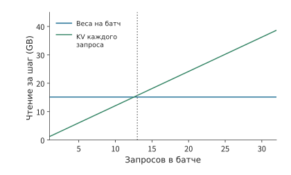
Рисунок 4-36. При фиксированных весах KV по-прежнему считывается отдельно для каждого запроса. По условию для каждого запроса сохраняется контекст 8K; начиная с размера пакета 13, объём чтения KV превышает объём чтения общих весов.
При наличии отдельного интерфейса ROM веса и KV можно считывать одновременно. Пусть пропускная способность двух интерфейсов равна соответственно \(\beta_{\mathrm{ROM}}\) и \(\beta_{\mathrm{HBM}}\). Если модель, точность, контекст и размер пакета остаются неизменными, нижняя граница времени работы памяти при перекрытии двух путей равна
Увеличение пропускной способности ROM сокращает первое слагаемое, пока более медленным путём не становится чтение KV. Если целевая скорость для одного пользователя составляет 10 000 токенов/с, на каждый токен приходится всего 100 μs, и даже для 1,21 GB KV требуется пропускная способность HBM около 12,1 TB/s.
Отдельная ROM также высвобождает ёмкость HBM, ранее занятую весами. При фиксированном контексте 8K, если использовать один стек восьмислойной HBM3E ёмкостью 24 GB из раздела 4.1.3 как хранилище KV, после вычета 2 GiB рабочей области и при бюджете KV 1,125 GiB на запрос можно разместить 18 запросов; если же в той же памяти требуется хранить полные веса BF16, помещается только 4 запроса.37 При увеличении контекста до 32K объём чтения KV для каждого запроса возрастает в четыре раза, поэтому приведённая выше точка равенства объёмов весов и KV снижается примерно с 12,5 до 3,13 запроса.
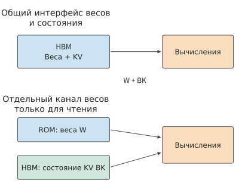
Рисунок 4-37. Отдельное постоянное хранилище весов изменяет два пути доступа к памяти. В верхней части веса и KV конкурируют за HBM; в нижней ROM предоставляет веса, а HBM хранит изменяемое состояние. Стрелки обозначают чтение; для KV также требуется запись нового состояния.
То же ограничение в 100 μs можно использовать для расчёта числа вычислительных блоков. Рабочая нагрузка взята из исторических записей выполнения проекта: набор тензорных операций общим объёмом 15 134 641 792 операции. Если каждый вычислительный канал (lane) при частоте 1 GHz выполняет одну операцию умножения со сложением (FMA) за такт, то необходимое для выполнения за 100 μs число вычислительных каналов составляет не менее
256 вычислительных каналов выполнят эти операции примерно за 29,6 ms. Если на матричные вычисления отводится только 40 μs, а эффективная утилизация составляет 60%, потребуется 315 306 вычислительных каналов — примерно в 4,2 раза больше первоначально необходимого количества. Чем жёстче временной бюджет, тем меньше остаётся запаса на ожидание и тем выше должны быть выделенные вычислительная мощность и пропускная способность памяти.
4.8 Анализ производительности и выбор ускорителя на основе архитектуры¶
В разделах 4.6 и 4.7 было рассчитано, как различные архитектуры изменяют объём вычислений, хранения и обмена данными. В этом разделе полученные результаты используются для выбора устройства: сначала строится сводная модель времени выполнения, затем с помощью одной и той же модели сравниваются устройства-кандидаты, после чего модель калибруется по результатам фактических измерений и, наконец, сопоставляются стоимость и энергопотребление выполнения задачи.
При выборе оборудования также необходимо сохранить пригодное для последующего разбиения и планирования описание ресурсов: эффективную вычислительную производительность при целевой точности и заданной форме матриц, ёмкость и пропускную способность каждого уровня памяти, ограничения регистров и общей памяти, а также однонаправленную пропускную способность между устройствами, задержку запуска и общий выходной канал. В главе 5 локальные ограничения ресурсов используются для определения параметров tile (блоков данных, на которые разбивается матрица), буферов и параллелизма, а в главах 6 и 7 параметры межсоединений — для ограничения размещения между картами и коммуникационных групп. Требования одной и той же модели к вычислениям и данным остаются неизменными, однако то, на ресурсы какого уровня приходятся эти требования и по каким путям проходят данные, влияет на время выполнения и выбор наиболее подходящего разбиения.
4.8.1 Построение модели времени выполнения на основе бюджета ресурсов¶
Время выполнения определяется двумя типами отношений: какие операции должны последовательно выполняться одним и тем же аппаратным блоком и каких результатов должна ожидать следующая задача. Первое определяет, как долго должен работать каждый блок, второе — порядок выполнения этапов.
Сначала рассмотрим совместно используемые ресурсы. Один и тот же матричный блок обрабатывает два типа задач объёмом по 1 млрд операций со скоростью соответственно 100 и 200 Gops/s. Они занимают 10 и 5 ms, то есть суммарно 15 ms. Если объём работы типа \(i\) на ресурсе \(r\) равен \(w_{r,i}\), а соответствующая скорость — \(p_{r,i}\), то время, необходимое этому аппаратному блоку для выполнения операций, равно
Когда веса и KV используют общий интерфейс памяти, их объёмы передачи данных складываются; когда QK и PV используют общий матричный блок, складывается время их вычисления. Даже если эти задачи распределены между разными операторами, они расходуют одну и ту же аппаратную мощность.
Теперь рассмотрим независимые ресурсы. Если матричные вычисления и передача данных могут выполняться одновременно, общее время выполнения не может быть меньше времени, необходимого блоку с наибольшим временем выполнения для завершения всех операций, поэтому \(T\ge\max_r T_r\). Анализ установившегося режима в разделе 4.2 использовал именно это соотношение: если вычисление экспоненты не ускоряется, матричный блок после досрочного завершения работы простаивает, а темп завершения блоков по-прежнему определяется вычислением экспоненты.
Наконец, добавим зависимости. Предположим, что на первом этапе матричным вычислениям требуется 10 μs, а памяти — 1 μs; на втором этапе матричным вычислениям требуется 1 μs, а памяти — 10 μs. Внутри каждого этапа операции могут перекрываться, но второй этап должен дождаться полного завершения первого. Поэтому первый этап занимает 10 μs, второй — также 10 μs, а всего требуется 20 μs. Если просто суммировать нагрузку по ресурсам, получится по 11 μs для матричного блока и памяти. Разница в 9 μs возникает из-за зависимости между этапами: матричные вычисления первого этапа и обращения к памяти второго должны выполняться последовательно и не могут перекрываться.25
Чтобы применить эти соотношения к конкретному устройству, сначала нужно выбрать правильную скорость: производительность матричного блока также зависит от точности входных данных и аккумуляции. Пиковая производительность Tensor Core у RTX 4090 при выполнении плотных матричных операций составляет около 330 TFLOP/s для входных данных FP16 и аккумуляции FP16 и около 165 TFLOP/s для аккумуляции FP32; для проекции BF16/FP32 в этой главе используется 165,2 TFLOP/s.26 Для 8,59 GFLOPs вычисление с этими двумя скоростями занимает соответственно около 26 и 52 μs. Рассчитанное далее время чтения составляет около 37 μs, поэтому выбор скорости напрямую меняет соотношение между длительностью вычислений и чтения.
После определения времени использования ресурсов и зависимостей выполнения можно также найти точку смены узкого места при изменении нагрузки. Для рассматриваемой в этой главе проекции Q модель Roofline выражает этот переход через соотношение арифметической интенсивности и пропускной способности.
Пусть пиковая производительность матричного блока равна \(P\), пропускная способность внешней памяти — \(R\), а объём вычислений и объём обращений к памяти для проекции — соответственно \(F\) и \(V\). Время, необходимое для вычислений и передачи данных, равно соответственно \(F/P\) и \(V/R\). Если вычисления и обращения к памяти полностью перекрываются, нижнюю границу времени определяет большее из этих значений, а соответствующая верхняя граница пропускной способности в модели Roofline равна
Здесь наклонная линия \(RI\) показывает, какой объём вычислений способна обеспечить пропускная способность памяти, а горизонтальная линия \(P\) — какой объём вычислений способен выполнить матричный блок. Они пересекаются при \(I^*=P/R\). Ниже точки пересечения данные поступают медленнее; выше неё на каждый байт уже приходится достаточно много операций, поэтому новым узким местом становится скорость вычислений. Эта ломаная задаёт допускаемую аппаратным обеспечением верхнюю границу, и любая измеренная точка находится ниже неё; расстояние от измеренной пропускной способности до ломаной соответствует коэффициенту использования, определённому в разделе 1.2.2. Если арифметическая интенсивность выше точки пересечения, применяется MFU, если ниже — MBU.
Для проекции из раздела 4.1, где входные данные и веса читаются один раз, а выходные данные записываются один раз, пиковая производительность матричных вычислений RTX 4090 при входных данных BF16 и аккумуляции FP32 составляет 165,2 TFLOP/s, а пропускная способность памяти — 1,008 TB/s. Подставив тот же набор значений \(F\) и \(V\), получаем:2
| Число обрабатываемых в этот раз токенов \(M\) | Время матричных вычислений | Время передачи данных между чипом и внешней памятью | Максимальное из двух значений времени | Доминирующий ресурс |
|---|---|---|---|---|
| \(M=1\) | около 0,20 μs | около 33,3 μs | около 33,3 μs | память |
| \(M=256\) | около 52 μs | около 37,4 μs | около 52 μs | матричный блок |
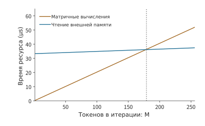
Рисунок 4-38. Изменение времени вычислений и обращений к памяти для одной и той же проекции Q при изменении числа входных строк. Объём вычислений растёт вместе с числом строк, а обращения к внешней памяти включают как фиксированный объём весов, так и растущие объёмы входных и выходных данных; начиная со 179 строк вычисления занимают больше времени.
Можно также найти число входных строк, при котором происходит переход. Пусть \(d=4096\); тогда интенсивность из раздела 4.1 можно записать как \(I(M)=Md/(d+2M)\). Приравняв её к \(I^*=P/R\), получаем
Подставив неокруглённые значения скоростей, получаем \(I^*\approx164\) FLOPs/byte и \(M^*\approx178.1\). Следовательно, начиная с целого числа строк 179, время матричных вычислений превышает время передачи данных. Точка перехода превращает утверждение «более крупный батч лучше подходит для матричного блока» в вычисляемое пороговое число строк.34
Эксперимент 4-5 · Основной: как батч изменяет узкое место производительности разных архитектур
Выведите формулу и постройте график арифметической интенсивности проекции Q для числа строк от 1 до 256. Затем по отдельности удвойте пропускную способность матричных вычислений и пропускную способность памяти и найдите число входных строк, при котором время вычислений равно времени чтения. После этого добавьте в таблицу ресурсов механизм внимания и матрицы экспертов и объясните, как длина контекста и распределение числа входных строк между экспертами изменяют время обработки каждого блока и расположение узкого места. Выберите два конкретных ускорителя, оцените время выполнения одной и той же задачи по параметрам их ресурсов и сравните узкие места.
В разделе 4.8.2 этот метод распространяется с одной проекции на всю модель: отдельно вычисляются основные объёмы чтения при декодировании и матричных вычислений при предварительном заполнении, а также проверяется, какие устройства способны вместить необходимое состояние.
4.8.2 Сравнение ускорителей на одной и той же модели¶
Сначала зафиксируем пример, удобный для повторного расчёта: Qwen3-8B, BF16, один запрос, 8 191 предшествующих позиций, после добавления на текущем шаге — 8 192 позиции. Постоянно размещённые веса занимают около 16,381 GB, KV-кэш — около 1,208 GB, рабочая область принята равной 2 GiB, общий бюджет — около 19,737 GB. Основная нагрузка на интерфейс памяти от весов и KV-кэша при одном шаге decode составляет 16,345 GB. На каждом шаге для эмбеддинга токена считывается строка, соответствующая текущему токену, а выходная голова считывает веса целиком, поэтому объём постоянно размещённых весов отличается от объёма весов, считываемых на каждом шаге.15
Теперь рассчитаем матричные операции. Qwen3-8B имеет 36 слоёв, ширину скрытого состояния 4 096, ширину слоя прямого распространения 12 288, 32 головы запросов и 8 KV-голов при размерности головы 128. Число матричных параметров проекций Q, K, V, O и трёх проекций слоя прямого распространения в каждом слое равно
Линейные операции всех слоёв для каждого токена составляют \(2\times36W_{\mathrm{layer}}\approx13.89\) GFLOPs. Для QK и PV одного шага decode с контекстом 8K дополнительно требуется \(4\times36\times8192\times4096\approx4.832\) GFLOPs, для выходной головы — около 1,245 GFLOPs, итого — около 19,97 GFLOPs.
Теперь рассмотрим prefill: при обработке 4 096 новых входных токенов объём линейных операций возрастает пропорционально числу токенов. Число пар видимых позиций в причинном внимании равно \(4096\times4097/2\); для каждой пары в 32 головах выполняются одно скалярное произведение QK и одно накопление PV, что в сумме даёт \(4\times4096\) операций. После умножения на 36 слоёв эффективный объём операций QK и PV составляет \(2\times36\times4096\times4096\times4097\). Выходная голова вычисляется для последней позиции, а общий объём матричных операций всего prefill составляет около 61,85 TFLOPs. Подставив эти два этапа по отдельности в таблицу параметров оборудования, получим рис. 4-39.
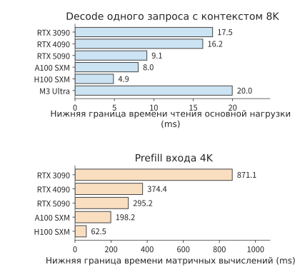
Рис. 4-39. Бюджеты двух этапов для одной и той же Qwen3-8B. Decode одного запроса более непосредственно отражает пропускную способность чтения, а матричный бюджет prefill для 4K — скорость матричных операций при соответствующей точности. На горизонтальных осях двух графиков указано рассчитанное время.
Эти результаты позволяют сделать несколько непосредственных выводов. При замене 3090 на 4090 нижняя граница времени чтения для decode одного запроса сокращается лишь примерно на 7,1%, тогда как время матричных операций prefill для 4K уменьшается примерно на 57,0%. При замене A100 на H100 время чтения сокращается примерно на 39,1%, а время матричных операций — примерно на 68,5%; при последующей замене на H200 время чтения продолжает снижаться, а время матричных операций практически не меняется. У RTX 5090 и RTX PRO 6000 одинаковое время чтения, но у последней выше пропускная способность матричных операций и больше объём памяти. В задачах ответов на вопросы по документам с длинными входными данными прирост матричной производительности 4090 и H100 прежде всего сокращает prefill; при непрерывной генерации одного запроса прирост пропускной способности памяти 5090 и H200 непосредственно сокращает чтение на каждом шаге.
Как объём памяти влияет на выбор устройства? Бюджет BF16 Qwen3-8B для одного запроса составляет около 19,737 GB, поэтому модель помещается на указанных в таблице картах с 24 GB памяти; при увеличении до восьми запросов с контекстом 8K общий бюджет составит около 28,193 GB, что превышает 24 GB у 3090/4090, но укладывается в 32 GB у 5090.
Как выбрать между Qwen3-8B и Qwen3-235B-A22B при локальном запуске? Сначала сравним генерацию одного запроса. Qwen3-8B с BF16 и контекстом 8K помещается в памяти RTX 4090, 5090 и M3 Ultra. Если пересчитать приведённое в таблице время чтения на каждом шаге в число токенов в секунду, получим верхние границы пропускной способности чтения: соответственно \(1000/16.22\approx61.7\), \(1000/9.12\approx109.6\) и \(1000/19.96\approx50.1\) токен/с. Эта плотная модель 8B не использует дополнительный объём памяти Ultra, а высокая пропускная способность памяти 5090 непосредственно выражается в более высоком бюджете генерации.
Теперь возьмём Qwen3-235B-A22B из раздела 4.6.3 с 4-битными весами, одним запросом и контекстом 8K. Для модели, KV-кэша и рабочей области требуется около 126,867 GB, поэтому на одной карте 3090, 4090 или 5090 она не помещается, но может быть размещена на M3 Ultra 256 GB и H200 141 GB. На каждом шаге считывается около 13,697 GB; на M3 Ultra это занимает около 16,72 ms, а на H200 — около 2,85 ms, что соответствует верхним границам пропускной способности чтения около 59,8 и 350,4 токен/с. Большой объём памяти Ultra позволяет запускать эту MoE-модель 235B на одном локальном компьютере, а высокая пропускная способность памяти H200 сокращает время того же чтения примерно до одной шестой.
Тензорное разбиение и диспетчеризация экспертов при работе на нескольких картах рассматриваются в главе 6.
4.8.3 Почему прогнозы расходятся с измерениями¶
Сравнение устройств в разделе 4.8.2 дало оценки ёмкости и бюджетов основных ресурсов. Библиотека времени выполнения выбирает конкретный kernel для математических операций, кэширование изменяет объём трафика за пределами кристалла, а отправка команд и синхронизация также занимают время. Измерения нужны, чтобы выявить эти этапы выполнения и дополнить временную модель из раздела 4.8.1.
Сначала преобразуем бюджет чтения Qwen3-8B в конкретную задачу генерации и выполним её на используемой в этой книге тестовой платформе RTX PRO 6000 Blackwell Workstation. По-прежнему используем BF16, один запрос и контекст 8K. Нагрузка на каждом шаге составляет 16,345 GB, поэтому чтение при пиковой пропускной способности 1 792 GB/s должно занимать 9,12 ms, что соответствует примерно 109,6 token/s. Для 128 шагов decode при таком контексте суммарное время составит около 1,17 s.
В эксперименте 8-1 из главы 8 это условие выполнялось на той же карте с помощью vLLM: контекст 8K, batch 1. Медиана времени чистой итерации decode по трём сериям измерений составила 25,83 ms. Результаты трёх серий — 26,43, 16,18 и 25,83 ms. Одна серия была заметно быстрее, а две другие различались менее чем на 3%; медиана позволяет исключить влияние отклонения отдельной серии на последующее сравнение.33 Скорость генерации составляет примерно 38,7 token/s, поэтому 128 шагов занимают около 3,31 s. Нижняя граница чтения составляет лишь 35,3% измеренного времени, а измеренное значение превышает её примерно на 16,7 ms.
Дополнительное время связано не со скоростью чтения: при контексте 2K в том же эксперименте на каждом шаге считывается на 0,906 GB KV меньше, что при пиковой пропускной способности должно экономить около 0,51 ms, однако измеренное время одной серии составило 26,26 ms — не меньше 25,83 ms при 8K. При увеличении batch до 64 объём чтения на каждом шаге в условии 2K возрастает до 34,46 GB, нижняя граница чтения составляет 19,23 ms, а измеренное время одной серии увеличивается лишь до 29,63 ms. Эквивалентная пропускная способность равна примерно 1,16 TB/s, или 65% пиковой. Следовательно, при batch 1 время каждого шага в основном определяется фиксированной работой, не зависящей от объёма чтения: эксперимент выполняется в режиме eager, kernel запускаются поочерёдно, а кроме того, выполняются векторные операции, сэмплирование и синхронизация. На этой программно-аппаратной платформе повышение утилизации пропускной способности почти не ускоряет генерацию одного запроса. Чтобы сократить время шага, сначала нужно уменьшить объём этой фиксированной работы; именно на это направлены рассматриваемые в главе 5 слияние kernel и сокращение числа запусков. При увеличении batch фиксированная работа распределяется между большим количеством токенов, и чтение снова становится основной составляющей.
Согласно определению из раздела 1.2.2, значения 35,3% и 65% являются MBU для этих двух условий. Здесь видны оба типа расхождений, описанные в разделе 1.3.4. Приведённые ниже показания счётчиков покажут, что логические запросы чтения в модели не равны трафику DRAM: данные, найденные в кэше, не используют пропускную способность видеопамяти, поэтому здесь нужно скорректировать область учёта модели. Промежутки, возникающие из-за поочерёдного запуска kernel, отправки команд хостом и синхронизации, напротив, являются устранимыми накладными расходами реализации. Сначала нужно скорректировать область учёта, а затем устранить накладные расходы — необходимы оба этапа.
Чтобы разложить дополнительное время по конкретным этапам, нужны записи времени, трафика и kernel. Ниже на уже выполненных для книги измерениях проекции Q показано, как по этим данным определить источник расхождения во времени.
В сопутствующем эксперименте на M2 Max и RTX PRO 6000 Blackwell Workstation выполняется одна и та же проекция с \(K=N=4096\); входные данные, веса и выходные данные представлены в BF16. Для сравнения различных способов доступа к весам на каждой платформе подготовлено 16 копий весов размером 32 MiB с одинаковым содержимым, но разными адресами. В группе повторного использования всегда применяется один и тот же адрес, а в группе чередования последовательно используются разные адреса. В каждом раунде выполняется 16 вызовов, измеряется полное время раунда, включая отправку команд хостом и синхронизацию, после чего результат делится на 16 для получения среднего времени одного вызова в этом раунде. Всего выполняется 11 раундов, а итоговым значением служит медиана этих 11 средних.27
| Число обрабатываемых токенов \(M\) | M2 Max: повторное использование / чередование | RTX PRO 6000: повторное использование / чередование |
|---|---|---|
| \(M=1\) | около 166 / 183 μs | около 42,9 / 51,9 μs |
| \(M=256\) | в обоих случаях около 1,835 ms | около 32,6 / 33,5 μs |
Сначала рассмотрим одну строку на RTX: чередование примерно на 21% медленнее повторного использования. Естественное объяснение состоит в том, что при многократном использовании одной и той же копии весов они остаются в кэше, что сокращает объём чтения из DRAM. Это объяснение можно проверить напрямую: если различие обусловлено сокращением чтения весов, то при их повторном использовании число байтов, считываемых за пределами кристалла, должно быть меньше. В эксперименте также использовался инструмент NVIDIA Nsight Compute для анализа производительности GPU kernel: сначала веса считывались заданным способом, затем записывался один исследуемый вызов и суммировались счётчики доступа всех kernel.
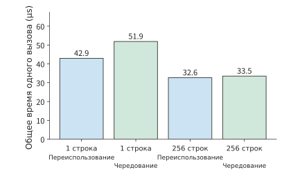
Рисунок 4-40. Полное время проекции на RTX PRO 6000. Для каждого условия выполнено одиннадцать раундов по шестнадцать вызовов; приведена медиана рассчитанного для каждого раунда среднего времени одного вызова. Измерение времени включает отправку команд и синхронизацию. «Повторное использование» означает, что несколько вызовов считывают веса по одному адресу; «чередование» означает смену адреса весов между вызовами.
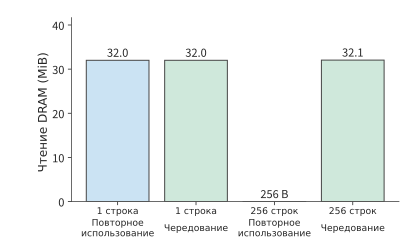
Рисунок 4-41. Отдельно собранные счётчики чтения DRAM для тех же четырёх условий. Для одной строки во всех случаях считывается около 32 MiB; для 256 строк при повторном использовании — 256 bytes, при чередовании — около 32,1 MiB. Счётчики доступа и обычные измерения времени собирались раздельно. «Повторное использование» и «чередование» означают соответственно сохранение и смену адреса весов.
При обработке одной строки объём чтения DRAM составляет около 32 MiB при обоих способах доступа к весам, что точно соответствует размеру всей копии весов. В обоих условиях за пределами кристалла считывается одинаковый объём весов, поэтому причину различия во времени для одной строки нужно искать в этапах отправки команд, выполнения и ожидания. Для 256 строк ситуация иная: при повторном использовании одной копии весов считывается лишь 256 bytes, а при чередовании разных копий — около 32,1 MiB, однако обычные измерения времени в обоих случаях дают около 33 μs. Кэширование изменило объём трафика за пределами кристалла, но полное время вызова включает также другие вычисления, передачи и ожидание.
Иерархия памяти, описанная в разделе 4.3, здесь становится наблюдаемой. При обоих способах доступа к весам для 256 строк объём запросов L2 составляет около 147 MiB, что намного больше почти нулевого объёма чтения DRAM в одном из случаев. Попадание в кэш означает лишь, что данные предоставляются на кристалле; запросы чтения вычислительных блоков и локальная передача данных никуда не исчезают. Одна и та же копия весов из исходной программы после разбиения выполнения на блоки многократно запрашивается несколькими вычислительными блоками.
Запросы на кристалле объясняют, почему после сокращения чтения DRAM доступ к данным сохраняется. Теперь рассмотрим вычисления. Библиотека разбивает одну проекцию на несколько этапов: вызов для одной строки использует один GEMV kernel, а для 256 строк — два kernel, GEMM и редукцию split-K. Split-K распределяет вычисления по измерению скалярного произведения между несколькими вычислительными блоками: сначала формируются частичные результаты, а затем они объединяются редукцией. Это позволяет большему числу вычислительных блоков работать параллельно, но требует сохранять и считывать частичные результаты, а в конце выполнять ещё одну редукцию. Таким образом, одна математическая операция умножения из раздела 4.1 здесь разворачивается в несколько этапов.
Теперь оценим время выполнения на RTX PRO 6000 в предположении, что входные данные и веса считываются за пределами кристалла. Пиковая производительность плотных матричных операций с входными данными BF16 и накоплением FP32 составляет около 504 TFLOP/s, а пропускная способность — 1,792 TB/s. Нижние границы для двух значений числа строк составляют примерно 18,7 и 21,1 μs. Модель даёт время, необходимое для матричных вычислений и чтения за пределами кристалла; счётчики показывают трафик на интерфейсах разных уровней при участии кэша; путь kernel объясняет дополнительную работу по объединению. Полное время также включает отправку команд, синхронизацию и промежутки между этапами выполнения.28
Для более точной локализации расхождения можно разделить вопросы «как долго блок был занят» и «насколько быстро он работал во время активности». Пусть аппаратному блоку для выполнения всех операций с идеальной скоростью требуется время \(S_r\), фактически в рабочем состоянии он находится в течение \(A_r\), а полное время задачи равно \(T\). Тогда
Первый множитель показывает отношение фактической скорости во время работы к идеальной, второй — долю рабочего времени в полном времени задачи. Пусть две задачи выполняются по 100 μs, а идеальное время вычислений для каждой составляет 40 μs. При выполнении первой задачи блок работает лишь 40 μs и в это время достигает идеальной скорости, но остальные 60 μs ожидает. При выполнении второй задачи блок работает 80 μs со скоростью, составляющей лишь половину идеальной, а время ожидания равно 20 μs. В обоих случаях итоговое отношение составляет 40%, но направления оптимизации различаются.
Для первой задачи важнее заранее подготовить данные, запланировать больше независимых друг от друга вычислений или сократить время ожидания результатов предыдущего этапа — аналогично переходу от двух слотов к трём в разделе 4.4. Для второй задачи важнее улучшить гранулярность выполнения, инструкции и локальный доступ — аналогично анализу заполнения неиспользуемых ресурсов и сгруппированных вызовов в разделе 4.2.7
Эксперимент 4-6 · Продолжение: проверка прогнозов времени выполнения с помощью измерений на Mac и RTX
На основе измеренного полного времени проекции на двух платформах предложите две причины, способные объяснить различие во времени, а затем изучите записи DRAM, L2 и kernel и для каждого объяснения перечислите ожидаемые и фактические наблюдения. После этого изобразите путь матрицы, частичных результатов и редукции для вызова с 256 строками и укажите, время каких этапов нужно знать, чтобы различить эффективность выполнения во время работы вычислительных блоков и время ожидания. Сопоставьте полученный результат с моделью, предполагающей чтение входных данных и весов за пределами кристалла.
4.8.4 Выбор между ёмкостью, скоростью, энергопотреблением и стоимостью¶
В разделе 4.8.3 было получено время выполнения задачи, а в этом разделе оно пересчитывается в стоимость и энергопотребление. Сначала сравним варианты с оплатой по времени использования, а затем учтём время простоя и фиксированные вложения в специализированную архитектуру.
Пусть почасовая стоимость двух систем равна \(c_A,c_B\), а время выполнения одной и той же задачи — \(t_A,t_B\). При оплате по времени выполнения стоимость одной задачи пропорциональна \(ct\), поэтому
Правая часть показывает, во сколько раз может различаться почасовая стоимость: если A вдвое быстрее B, то при почасовой стоимости A меньше удвоенной почасовой стоимости B каждая задача всё равно будет обходиться дешевле. Если заменить почасовую стоимость средней мощностью, то то же неравенство будет сравнивать энергопотребление на задачу. В группе повторного использования из раздела 4.8.3 отношения времени Mac/RTX составляют примерно 3,9 для одной строки и 56 для 256 строк. Для RTX учитывается только видеокарта: при предельной мощности RTX PRO 6000 Workstation в 600 W один вызов для одной строки потребляет не более примерно 25,8 mJ, а вызов для 256 строк — примерно 19,6 mJ. В официальных материалах по M2 Max мощность всей системы не указана; из приведённого выше неравенства следует, что при средней мощности Mac во время однострочного вызова ниже примерно 155 W его энергопотребление на вызов будет меньше, чем у RTX, а для 256 строк мощность должна быть ниже примерно 10,7 W. При неизменной машине и изменении только размеров матрицы допустимая мощность, при которой Mac сохраняет преимущество по энергопотреблению, снижается примерно со 155 W до 10,7 W.28
Для непрерывно работающего сервиса необходимо также учитывать стоимость времени простоя. Пусть при обработке запросов машина генерирует \(q\) полезных токенов в секунду, а доля часа, в течение которой она обрабатывает запросы, равна \(u\). Тогда часовой объём вывода составляет \(3600uq\), а стоимость одного токена — \(c/(3600uq)\). Если скорость генерации удваивается, а утилизация уменьшается вдвое, часовой объём вывода и удельная стоимость не изменяются.
Энергопотребление также совместно определяется мощностью и временем. Рассмотрим выполнение одного шага decode для одного запроса с контекстом 8K из раздела 4.8.2 и предположим, что обе карты работают на предельной мощности, а время шага равно нижней границе времени чтения: для RTX 4090 это 450 W и 16,22 ms, то есть примерно 7,30 J на шаг; для RTX 5090 — 575 W и 9,12 ms, то есть примерно 5,24 J на шаг.30 Мощность увеличивается примерно на 28%, но энергопотребление одного шага, наоборот, уменьшается примерно на 28%. В общем виде
Для непрерывно работающего сервиса можно измерить общее потребление электроэнергии за некоторый период и разделить его на полезный объём вывода за тот же период, чтобы учесть также энергопотребление во время простоя и прогрева. Сокращение времени выполнения снижает энергопотребление непосредственно при исполнении задачи, а повышение утилизации уменьшает долю энергопотребления простоя, приходящуюся на каждую задачу. Разбивка энергопотребления из раздела 4.1.3 даёт оценку порядка потребления электроэнергии за один шаг decode: для одного запроса и контекста 8K оно составляет 0,534 J на токен, из которых 0,481 J расходуется на чтение весов; при batch 32 энергопотребление снижается примерно до 0,068 J на токен. Эта разбивка не учитывает управление, тактирование, статические утечки и мощность во время простоя, поэтому энергопотребление на токен, полученное делением общего потребления электроэнергии на полезный объём вывода, будет выше этой оценки.52
Специализация также требует фиксированных вложений. Пусть дополнительные фиксированные затраты относительно универсального решения равны \(F_0\), а экономия переменных затрат на единицу полезного вывода — \(\Delta c\). Тогда объём вывода, необходимый для окупаемости, равен
Модель может быть обновлена или заменена, поэтому срок её использования в специализированной системе ограничен. Пусть имеется \(D\) машин, скорость генерации каждой при обработке запросов равна \(q\), утилизация — \(u\), а срок использования модели — \(L\). Тогда общий объём вывода составляет \(DuqL\). Специализированное решение окупится только в том случае, если сэкономленные за этот период эксплуатационные расходы достигнут величины фиксированных вложений.
Пример 4-3. Успеет ли специализация окупиться за срок службы модели?
Дополнительные фиксированные затраты составляют 20 млн долларов, а экономия на каждый миллион токенов пригодного вывода — 0,50 доллара. Развёрнуто 100 машин, каждая из которых во время обработки запросов выдаёт 10 000 токенов в секунду; утилизация составляет 50%, экономический срок службы модели — один год, в году принимается 365 дней.
Сравнение объёма вывода, необходимого для окупаемости, с объёмом, достижимым за год. Для окупаемости требуется \(20\,000\,000/(0.50/10^6)=4\times10^{13}\) токенов, то есть 40 трлн. Годовой объём вывода равен \(100\times10\,000\times0.5\times31\,536\,000\approx1.58\times10^{13}\) токенов, то есть примерно 15,8 трлн.
Каков фактический масштаб сервиса, необходимый для окупаемости за один год? Годовой объём вывода составляет примерно 39% от необходимого для окупаемости. При неизменных скорости одной машины и утилизации потребуется не менее 254 машин, работающих в течение года.
Масштаб, необходимый для окупаемости при сокращении срока службы модели вдвое или снижении утилизации. Если модель заменяется через полгода, доступное время каждой машины уменьшается вдвое, поэтому для сохранения заданной утилизации потребуется не менее 508 машин; снижение утилизации с 50% до 25% даёт тот же результат.
В этом примере годовая экономия составляет примерно 7,88 млн долларов, что меньше фиксированных вложений в 20 млн долларов; для достижения объёма окупаемости в 40 трлн токенов потребуется примерно 2,54 года, что превышает заданный годичный срок службы модели.24
Эксперимент 4-7 · Расширение: сохраняет ли изменение ресурсов чипа пользу после изменения нагрузки
Выберите одну архитектуру и одну типичную нагрузку, затем предложите одно изменение ресурсов. Сначала выведите изменение времени на основе объёма работы, трафика и зависимостей, а затем рассчитайте увеличение ёмкости и сокращение ожидания. После этого измените batch или длину контекста и найдите критическое значение, при котором исходное изменение перестаёт экономить время. Если решение требует дополнительных фиксированных вложений, определите минимальный объём обслуживания, необходимый для их окупаемости, исходя из экономии на каждой задаче, утилизации ускорителя и срока службы модели.
Эксперимент 4-8 · Расширение: от разбивки энергопотребления к ограничению мощности
Используйте таблицу энергопотребления из раздела 4.1.3 и число байтов, считываемых за один шаг decode Qwen3-8B для одного запроса с контекстом 8K. (a) Последовательно задайте batch равным 8, 32 и 128, рассчитайте для каждого случая энергопотребление весов, KV и вычислений на токен и найдите минимальный batch, при котором составляющая весов становится меньше вычислительной составляющей. (b) Измените контекст на 32K, найдите batch, при котором составляющая KV равна составляющей весов, и объясните, почему дальнейшее увеличение batch после этого уже не приводит к заметному снижению энергопотребления на токен. (c) Выберите TDP, пиковую вычислительную производительность и пропускную способность HBM одной карты и найдите энергетический бюджет на FLOP при пиковой скорости \(b\); примите фактическое энергопотребление одного FLOP равным \(1.5b\) и при \(P\propto fV^2\) найдите отношение устойчивой частоты к пиковой для двух случаев: при неизменном напряжении и при снижении напряжения вместе с частотой. Затем разделите энергию одного шага для batch 32 из пункта (a), то есть энергопотребление на токен, умноженное на 32, на время этого шага при устойчивой частоте, чтобы получить среднюю мощность, и сравните её с TDP.
Итоги главы¶
Анализ ускорителей начинается с оценки рабочей нагрузки модели: объём состояния определяет требования к ёмкости, объём передаваемых данных и пропускная способность — время чтения, а форма матриц, точность и скорость выполнения инструкций — время вычислений; затем выполнение планируется с учётом зависимостей. Эволюция архитектур трёх производителей показывает, что требования моделей меняют соотношение ресурсов. Подсчёт обращений, журналирование kernel и замеры времени преобразуют эти оценки в скорость выполнения и стоимость задачи. Время и энергопотребление — две отдельные статьи: пропускная способность определяет скорость одного шага, энергозатраты на байт и количество повторных использований — сколько джоулей требует один шаг, а ограничение мощности, в свою очередь, снижает устойчиво поддерживаемую частоту. В главе 5 продолжится рассмотрение компоновки, слияния и планирования, чтобы показать, как программное обеспечение эффективно использует эти аппаратные ресурсы.
-
Фиксированную конфигурацию Qwen3-8B, индексы тензоров и реализацию модели см. в конфигурации модели и результатах расчёта проекции. ↩
-
Jouppi и др., In-Datacenter Performance Analysis of a Tensor Processing Unit, ISCA 2017, архивная версия статьи. ↩↩
-
Техническое описание архитектуры A100, техническое описание архитектуры H100, Hopper Tuning Guide, технический обзор Blackwell и возможности CUTLASS для Blackwell. ↩↩
-
Официальное техническое описание архитектуры Ascend 950, §4.1–4.1.6; постраничные ссылки на раннюю архитектуру DaVinci и разделённую архитектуру CANN см. в заметках по сравнению. ↩↩
-
От утилизации операторов к ожиданию во время выполнения и заметки по чтению статьи. ↩↩
-
Официальные характеристики M2 Pro/Max, описание архитектуры Apple GPU, режимы хранения Metal, официальное описание Neural Accelerator в GPU M5. ↩↩↩↩↩
-
FlashAttention-4, MLSys 2026, статья, §2.2, §3.1.1, формулы 1–3 и таблица 1; независимый пересчёт для одного SM. ↩↩↩
-
Аудит аппаратной точности, поэтапные ресурсные условия DeepSeek V4-Flash и Qwen, исследование низкой точности и путей выполнения. Эволюцию аппаратного обеспечения и атрибуцию стоимости см. в исследовании снижения стоимости. ↩
-
Эксперимент 4-2, фактические активации маршрутизации, группировка по 128 элементов, замена внутри одноэкспертной модели. ↩
-
Конфигурация Qwen3-8B; полные результаты по поколениям памяти. ↩
-
Результаты сравнения поколений памяти и описание расчётов. ↩↩↩
-
Mess, MICRO 2024, принятая авторская версия, выборочно физические страницы 3–6; пример расчёта параллелизма доступа к памяти и его ограничения. ↩↩
-
Результаты координат перемещения общих экспертов DeepSeek V4-Flash и описание подсчёта на уровне исходного кода. ↩
-
Hopper Tuning Guide, техническое описание Ascend 950, официальное описание архитектуры Rubin. ↩↩
-
Базовый конвейер входа механизма внимания Qwen, удвоение скорости матричных операций, моделирование и независимая проверка. ↩
-
Описание передачи между матрицей и вектором, прямой путь для 32 строк и двух слотов. ↩
-
Технический обзор Blackwell, NV-HBI 10 TB/s; CloudMatrix384 v2, §3.3.1 (у 910C каждый die имеет 64 GB и 1,6 TB/s, между die — 270 GB/s в каждом направлении), начало §4.2 (при decode на каждом die размещается один эксперт) и §4.2.2; расчёты локальности die для обоих продуктов см. в элементе
die_localityучебного скрипта вывода; платформа Vera Rubin, проверка UB и Ascend. ↩↩↩ -
Inside the Eighth-Generation TPU: An Architecture Deep Dive. ↩
-
Статья о Groq TSP, IPU Programming Model, спецификация Cerebras WSE-3, статья о SambaNova SN40L. ↩↩↩
-
Описание моделирования нижней границы времени каждого этапа; фактический диапазон операторов модели см. в результатах по ресурсам Qwen3-8B prefill128. ↩
-
Источники данных об аппаратном обеспечении и аудит точности, а также официальная базовая таблица. ↩
-
Полное описание и исходные записи эксперимента 4-6, сводка измерения времени проекции, фактические счётчики DRAM/L2. ↩
-
Стоимость парных проекций и условия для средней мощности; значение 600 W для RTX PRO 6000 взято из таблицы исходных данных об аппаратном обеспечении, а энергопотребление каждого вызова и мощность Mac при равном энергопотреблении рассчитаны элементом
energyучебного скрипта вывода; см. данные вывода. ↩↩ -
Терминологию для хоста, DMA и единого адресного пространства см. в CUDA Programming Guide. ↩
-
Техническое описание архитектуры RTX Blackwell, приложение A, таблица 3: RTX 4090 — 24 GB GDDR6X, 1 008 GB/s, PCIe Gen 4, TGP 450 W; RTX 5090 — 32 GB GDDR7, 1 792 GB/s, PCIe Gen 5, TGP 575 W; спецификация A100 80GB: PCIe 4.0 — 64 GB/s в обоих направлениях суммарно. Время H2D и чтения видеопамяти см. в элементе
host_linkучебного скрипта вывода. ↩↩ -
RTX 4090, 128 незавершённых транзакций, RTX 4090, 4 096 транзакций, RTX 5090, 4 096 транзакций, RTX 5090, задержка 800 ns; задержку H100 в Mess см. в таблице I и на рисунке 3(h). ↩
-
Проверка опубликованных записей запуска эксперимента 7-3, исходный журнал двух HGX H100: 16 rank, NCCL 2.26.2, AllReduce для 16 bytes — 24,96 μs вне буфера и 24,93 μs в исходном буфере. ↩
-
Сканирование batch в эксперименте 8-1 и его построчная сводка эффективности: RTX PRO 6000 Blackwell Workstation, Qwen3-8B BF16, vLLM 0.23.0, режим eager; для каждой строки берётся медиана итераций чистого decode в каждом прогоне, а затем медиана трёх прогонов. Отношение к нижней границе чтения вычислено элементом
measured_decodeучебного скрипта вывода. ↩ -
Трёхслотовый конвейер, вариант с удвоенными вычислениями и точки перелома в проектировании сгенерированы учебным скриптом вывода; полные временные диаграммы см. в данных вывода. ↩↩
-
Измерения автора на RTX PRO 6000 Blackwell Workstation (GB202, 188 SM, 128 MiB L2, измеренная частота SM 2,88 GHz): описание измерений и проверка методики, выдержка числовых значений, использованных в книге. Программа измерения —
tools/gpu_microbench/из репозитория OpenTallas, CUDA 12.8. Во время измерений GPU использовался совместно с другой нагрузкой; в основном тексте взято минимальное значение из нескольких запусков, медиана выше на 10%–40%. ↩↩ -
Технический отчёт DeepSeek V3, раздел 3.5, Suggestions on Hardware Design. ↩
-
Поэлементный пересчёт сравнений условий в этой главе и программа расчёта. ↩
-
Официальный технический отчёт DeepSeek V4.1, разделы 1, 2, 3 и 6; фиксированные условия и пересчёт сквозного межглавного примера. ↩
-
Официальное техническое описание архитектуры Turing, Tensor Cores Turing и инференс с низкой точностью. ↩
-
Техническое описание архитектуры Volta, разделы о Tensor Cores и смешанной точности. ↩↩
-
Blackwell Tuning Guide, описание возможностей CUTLASS для Blackwell и пример SM100 TMEM; сведения о 128 KB кэша данных первого уровня и предельных 100 KB общей памяти на каждый SM в SM120 (вычислительная возможность 12.0) см. в таблице вычислительных возможностей CUDA Programming Guide. ↩↩
-
Описание архитектуры NVIDIA Rubin: перемещение данных MoE, пропускная способность инструкций по размерности K и ускорение механизма внимания. ↩
-
Официальное описание архитектуры Apple M3, официальный анонс M4 и характеристики M4 Mac mini. ↩
-
Статья об архитектуре DaVinci, §3.1–3.4; руководство по Ascend C, глава 4 об интегрированной и разделённой архитектурах; CloudMatrix384 v2, §3.3.1 и §4.2.2. ↩↩↩
-
Программа количественного расчёта эволюции архитектуры и пояснения, подробные результаты расчётов. Параметры считываются из таблицы аппаратных характеристик; данные для 3090 дополнены по таблице 9 официального технического описания GA102. Полная конфигурация модели и перечень тензоров взяты из каталога calculations этой книги. ↩↩↩
-
Техническое описание архитектуры A100, разделы о BF16 и числовых форматах; повторный расчёт числового диапазона, хранения и квантования. ↩
-
Статья автора «Где должен находиться интеллект сети», обзор предпосылок проектирования ResNet в 2016 году из выступления 2023 года; статья об архитектуре DaVinci, §3.2, §3.4, таблица 5 и система Ascend 910: соответственно приведены img2col, соотношение ресурсов, пропускная способность каждого ядра и HBM с пропускной способностью 1,2 TB/s. ↩
-
Спецификация RTX PRO 6000: ECC, MIG и конфигурация продукта; Hopper Tuning Guide: NVLink; техническое описание GA102: NVLink в 3090; Blackwell Tuning Guide и возможности Blackwell в CUTLASS: SM100/SM120. ↩↩↩
-
Сверка официальных конфигураций Apple, сочетания GPU и объёма памяти, а также таблица аппаратных характеристик. Конфигурация M3 Ultra с 512 GB перекрёстно подтверждена официальным пресс-релизом и записью о тестовой конфигурации готовой системы с 80-ядерным GPU. 512 GB и 1 200 GB/s для M5 Ultra — характеристики, объявленные в августе 2026 года; поставка конфигурации с 512 GB запланирована на конец октября 2026 года. ↩
-
Хэ Тинбо, Huawei’s τ Chip Was Supposed to Melt?, ChinaXiv:202609.00031v1, 2026-09-04, архивная версия статьи, §II—V и рисунки 1—2: доля динамической мощности, ёмкость межсоединений, сравнение NPU при одинаковой производительности (29 TOPS, 0.85→0.55 V, снижение частоты на 63%, снижение энергопотребления на 66%), снижение энергопотребления DSP на 25% и проекционной площади на 40%. ↩
-
Dally, Hardware for Deep Learning, программный доклад на Hot Chips 2023, страницы 12 и 51—52: на странице 12 — HFMA 1,5 pJ, HMMA 110 pJ, накладные расходы на инструкции около 30 pJ и доля накладных расходов 2000%/22% (45 nm); на странице 51 указано, что таблица энергопотребления взята из доклада Horowitz на ISSCC 2014, техпроцесс — 45 nm; на странице 52 для трёх уровней памяти приведены значения 5/50/640 pJ на каждое 32-битное слово, техпроцесс не указан; Fine-Grained DRAM, MICRO 2017, §1—2: 3,97 pJ/bit для HBM2 и разложение этого значения, модель энергопотребления DRAM рассчитана для 28 nm; NVIDIA Grace Hopper Superchip Architecture In-Depth, 2022-11-10: 1,3 pJ/bit для NVLink-C2C. ↩↩
-
Результаты раздельного учёта энергопотребления: количество байтов и FLOPs считывается из результатов decode одного запроса с контекстом 8K, после чего складывается энергопотребление на каждый байт и каждый FLOP согласно приведённой выше таблице. Расчёт можно повторить командой
python3 calculations/calc.py energy-ledger --format md. ↩↩ -
Таблица 4 технического описания архитектуры H100: пять стеков HBM3, 5120-битный интерфейс, DDR с частотой 2619 MHz, 3352 GB/s (в основном тексте этой главы единообразно используется округлённое значение 3,35 TB/s, то есть 3 350 GB/s, из технического паспорта), 814 mm², техпроцесс TSMC 4N; площадь A100 — 826 mm²; технический обзор Blackwell: на странице 7 указаны два кристалла предельного для фотошаблона размера и NV-HBI с пропускной способностью 10 TB/s, а в таблице 3 для B200 указаны 192 GB/7,7 TB/s; таблица 1 описания компонентов платформы HGX: каждый GPU в HGX B200 имеет 180 GB и пропускную способность до 8 TB/s; технический паспорт H200: 141 GB/4,8 TB/s; страница продукта Micron HBM3E: 1024 вывода, 24 GB в восьми слоях и 36 GB в двенадцати слоях; страница продуктов SK hynix HBM: 9,6 Gbit/s и 1,23 TB/s. ↩
-
Технический паспорт H100: максимальная расчётная тепловая мощность SXM составляет 700 W; таблица 4 технического описания архитектуры H100: 989,4 TFLOPS для плотных вычислений BF16 и TDP 700 W; таблица 3 технического обзора Blackwell: B200 — 1000 W. ↩